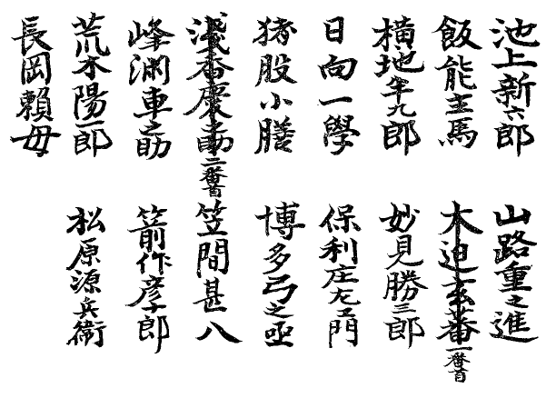

首
一
「
卑怯！ 卑怯ッ！ 卑怯者ッ！」
大声がした。千代田の
殿中である。
新御番詰所と言って、
書役の控えている大広間だ。
荒磯の描いてある
衝立の前で、いまこう、
肩肘を張って叫び揚げた
武士がある。
紋服に、下り藤の紋の付いた
麻裃を着て、さッと血の気の引いた顔にくぼんだ眼を
据え、
口唇を蒼くしている
戸部近江之介である。
西丸御書院番頭脇坂山城守付きの
組与頭を勤めている。それが、
激怒にふるえる手で、袴の膝を
掴んで、ぐっと斜めに上半身を突き出した。
「ぶ、無礼でござろう。
神尾氏ッ！ 謝罪召されい！」
畳を
刻んで、詰め寄せている。同時に、居流れる面々が、それぞれ快心の笑みを浮かべて、意地悪げに末席の一人を振り向いた。
其処に、神尾
喬之助が両手を突いている。
おなじくお
帳番のひとりとして、
出仕して間もない
若侍である。
裃の肩先が細かく震えているのは、武士らしくもない、泣いてでもいるのか、喬之助は顔も上げ得ない。
どッ！ と、浪のような笑声が、諸士の口から一つに沸いて、
初春らしく、豊かな
波紋を描いた。が、笑い声は
長閑でも、どうせ
嘲笑である。
愚弄である。一同が高だかと、
哄笑を揺すりあげながら、言い合わしたように、皆
じろり［＃「皆じろり」は底本では「皆じろり」］と小気味よさそうな一
瞥を
末座へ投げると、いよいよ小さくなった神尾喬之助は、
恐縮のあまり、今にも消え入りそうに、
額部が畳についた。
「ふん、如何に
中原の鹿を射当てた果報者じゃとて、
新役は新役、何もそうお高く留まらずとも、
古参一同に年賀の礼ぐらい言われぬはずはござるまいッ！」
いつもの通り、
列座同役の尻押しにいきおいを得て、戸部近江之介はなおも
威猛高である。自分で怒っているうちに一そう激しく怒り出すのがこの人の
性癖で、
口尻を曲げてこう言い放った時、近江之介は、自らの
憤怒に圧倒されて、もはや口も
利けない様子だった。が、ちらりと眼を人々の顔に走らせて同意を求めると、
池上新六郎、
飯能主馬、
横地半九郎、
日向一学、
猪股小膳、
浅香慶之助、
峰淵車之助、
荒木陽一郎、
長岡頼母、
山路重之進、
大迫玄蕃、
妙見勝三郎、
保利庄左衛門、
博多弓之丞、
笠間甚八、
箭作彦十郎、
松原源兵衛――居ならぶ
御書院番衆の頭が、
野分のすすきのように
首頷き合い、ささやき
交して、眼まぜとともに裃の肩が
ざわざわと揺れ動く。
同時に、色いろの声がした。
「戸部氏のご立腹、ごもっともでござる。
下世話にも、とかく
女子にもてる男には嫌なやつが多いと申す、ぷッ！
高慢面、
鼻持ちならぬわ」
「神尾氏ッ！ こウれ！ 無言は非礼、何とか早速御挨拶あって然るべしじゃ」
「旨いことを並べて園絵どのを
蕩し込む口はあっても、われらに応対する口はないと言わるるのか？」
「めでたい年頭、ことには城中、それがしとてかく
大声を発しとうはないが、実もって
常日、神尾氏の振舞いには眼にあまる
角が少なくござらぬて」
これは、ふたたび戸部近江之介である。日向一学と妙見勝三郎が、憎さ
気に喬之助を
凝視めながら、一しょにいい出して言葉が
衝突った。
「新参者の――」
「ともあれ――」
妙見が日向を見た。お先にという
意である。日向は口を
噤んで、妙見に譲っている。然らば御免、というように、妙見勝三郎がちょっと目礼してはじめた。
「ともあれ、一年の計はこの元旦にあり、
従前のごとく新入りの若年者に侮られ続けては、
余の
仁は寛容あっても、この妙見の一分が相立ち申さぬ。ここは何とあっても、一つ神尾氏の御所存ばし承わりたいところ――」
物々しく
語尾を呑んで、そのまま日向一学に渡す。受け取った一学が、改めて、
「新参者の
分際で――」
と、やり出したとき、どウウウウん、どうん！ お
太鼓櫓で打ち出した
八刻の合図である。長廊下の向うから多勢の気配が曲って来て、老中方お
退出という声がする。はッ、と今の今までがやがやしていた連中が慌てて平伏すると、やがて、しいッ、しッ！ と
警蹕を掛けながら、二人のお小姓が御用箱を目八分に捧げて先に立つ。その後から、第一番に松平
越中守、
久世大和守、松平
周防守［＃ルビの「すおうのかみ」は底本では「すほうのかみ」］、牧野
備中守、
岩城播磨守、それにお側御用御取次水野
出羽守の以上六名が、いずれも一人一役のお歴々である。松平越中守は青竹を
削いだような顔に鋭い微笑を浮かべて、久世大和守は例によって太い眉毛を
ぴくぴくさせて、でっぷり肥った牧野備中守は上眼使いに顎を引いて、小男の岩城播磨守は
猪首に口をへの字に曲げて、長身、
痩躯、
白皙、
胡麻塩、
各人各様の一癖ありげな面だましいだ。左右の
肩衣を一斉に振って、のっさのっさと長袴の裾を
捌き、磨き抜いた
板廊を雁のように一列になって
退って来る。
何か頬を上気させた水野出羽守は、いつもと同じ
せかせかした歩調で
殿である。
二
続いて、廊下のむこうから、また声がする。若年寄お
退り！ というのだ。
これで、そろそろ頭を上げかけていた御書院番の連中は、いそいでまたもや畳を
舐めんばかりに
這いつくばる。そこへ、いま言った若年寄であろう。五、六人の大官が、
綺羅星を
集めたように美々しい一団となって通りかかった。加納遠江守はすぐわかる。眼じりに有名な
黒字がある。泣きほくろだと言うので泣き加納の名があるが、本人はこの
綽名と正反対に始終
にこにこしている。その泣き加納と何かささやきながら、よろけるようにして往くのが
米倉丹後守である。足が悪いのである。すぐ後から安藤
対馬守が、頭脳のなかで
謡曲でも
復習えているように、黙々と、しかし朗かな顔付きでやって来る。太田若狭守が大きく手を振って、足早に追いついた。そして
低声で何か言うと、対馬守がほほえんでしきりに
合点合点をしている。ひとり遅れて、平淡路守が超然と歩いて来る。山野に遊んで
四方の景色を賞美していると言ったような、妙に
俗塵離れのした恰好だ。背が
すらりと高いので、年賀の礼装がこの人には一層よく似合う。白い顔を真っ直ぐに立てて、一歩ごとに
袂を叩くように、ぶらり、ぶらりとあるいてくる。誰かを待ち合わせているようにも見える。と、うしろの廊下の角から人影が現れた。下ぶくれの
和やかな顔である。晴ればれと眼を笑わせている。頬をきざむ
皺に、人間的な、或いは浮世的なと言いたい、人生経験といったようなものが、深く彫り込められて見えるのである。誰にでも笑いかけそうに、そのくせ固く結んでいる口辺には、
侵すことを許さない意志の力が覗いているような、気がする。中肉中
背である。いや、いささか
肥っているほうかも知れない。横から見るとすこし猫背だ。両手を
きちんと袴の
まちへ納めて、すウッすッと
擦り足である。見ようによっては、恐ろしく
苦味走って見える横顔に、元日の
薄陽が
ちらちらと影を踊らせている。八
葉の
剣輪違いの定紋を置いた裃を着ている。遅いようで、妙に速い歩き方である。間もなく、それとなく待っていたらしい平淡路守と一緒になって、ちょっと両方でおじぎして
はははと低く笑った。並んで歩き出す。
友達らしいのである。
「
上々の天気で――」
言いかけて、淡路守はあとを濁した。
同伴の
士は、面白そうに
にっこりして、
「何よりの
幸です。しかし、それはあくまで今日の天候のことでございましょうな。それとも上様の御
機嫌――」
「あはははは、そこまで
仰言っては――両方でござる。両方でござる」
いま、将軍吉宗に拝して、
年始の礼を述べて来たところである。年の変ったゆったりした気もちが、何か冗談の一つもいいたいように、二人の胸を軽くしていた。
「越州殿はお人が悪い。こりゃすこし、
向後口を戒めると致そう」
この淡路守の相手は、
大岡越前守なのである。江戸南町奉行大岡越前守
忠相である。老中、若年寄、
御小人目附、寺社奉行、勘定奉行、町奉行と来て、これを四十八高という。そのうち、一国一城の
主君である大頭株に介在して、身分は単に一旗本に過ぎないのだが、ふだんから一
目も二目も置かれて破格の扱いを受けているのがこの大岡越前である。
今の淡路守の言葉には、ふくみ笑いを洩らしたきり笑えなかったが、ちょうど新御番詰所の前の廊下にさしかかって、御番衆が
斉しく手を突いて送っているのを見ると、
気易な態度でちょっと頭を下げながら、其処を通った。
これが最後で、もう続く跫音がないようだから、戸部近江之介をはじめ池上新六郎、飯能主馬、横地半九郎など畳の目を数えていた一同が、
ほっとして身を起して、これからまたそろそろ新役の若侍神尾喬之助をいじめにかかろうとしていると、えへん！ えへん！ と
咳払いの声が、
先触れのように廊下を流れて来る。
大目附である。
その咳ばらいを聞くと、御書院番の連中は急に居ずまいを直して、
四角くなった。
殿中
随一の雷おやじとして怖がられている大目附近藤相模守
茂郷が、そこへ来かかっているのだ。
三
拝領葵の御紋服に丸の扇の紋のついた裃を着て、腰は二つ折れに曲がり、
赭顔の
額部に皺が浪のように
畝って、頭髪は真っ白である。近藤相模守は七十七の老人だ。しきりにエヘンエヘンと咳払いをつづけて来る。つまり、今わしがここを通っておるぞと
報せて、行儀の悪いやつは、形を正させ、よくないことをしている者には、それを中止して何食わぬ顔をするだけの時間を与えようとしているのである。この大目附は、殿中ではもっともむずかしい役の一つとなっていたもので、何しろ、千代田城は将軍家の邸宅とは言え、
現在で言えば、役所をも兼ねているところだ。多勢の人間が詰めかけて事務を
執り、仕事をするのだから、長いうちには色いろ面白くないことも出て来る。と言って、それを一々
咎めだてしていては、針の先のようなことまで
表沙汰にして、違反者ばかり出していなければならない。もっとも、百箇条の項目に触れるような重大事なら、
存分に取り締ることも処分することも出来るし、また、それが大目附の役儀でもあるのだが、やれ少々膝をくずしたの、雑談をしていたの、
欠伸をしたのということは、そうそう取り締れるわけのものでもない。といい
条、
発見けた以上は役目柄叱らない訳にもいかず、そんなことをしていては日もまた足らずなので、そこで歴代の大目附が、経験と必要に
即して案出したのがこの咳払いである。大目附は、
登城下城に城中を通るとき、えへん、えへんと盛んにこの出もしない咳をして歩く。殊に、若侍の多い
溜りへでも近づくと、咳のしつづけである。だから、城士のほうでも心得ていて、この
えへんが聞えて来ると、さあ大目附が通るというので、
警め合って
坐り直す、襟を
掻きあわす、
袖口を引っ張る、そこらを片付ける、急に忙しそうに書類などをめくり出す――一時的だが、咳払い一つで立派に
綱紀粛正の目的を達していた。とりわけこの近藤相模守茂郷は三十一の時に大目附へ召し出されて、七十七歳まで勤め続けて来た殿中の
活字引である。まるで一生を咳払いに送って来たようなもので――そら来たと御番衆が
他所行きの顔を並べていると、一段猛烈に咳払いをしながら、前の廊下を通りかかっている。
口を
もぐもぐさせて、両手を袂へ落としている。これは正月のことで寒いから、老人だけに袖の中に
温石を持って、手を温めているのである。
ちょっと立ち
停まって、新御番詰所に控えている番士一同を
霞のように見渡しているから、何か言うかなと思うと、そのまま何にもいわずに、大きな咳払いを一つ残して
往ってしまった。
この大目附近藤相模守がもうすこし遅れて退出して来れば、あんな騒ぎにはならなかったろう。すくなくとも、血を見るようなことは、例の遠くからの咳払いで
未然に防ぐことが出来たかも知れないのである。
一月一日である。泰平つづきの
公方様の世だ。その新年の盛儀である。大手
下馬さきは掃き
潔められて塵一本もとどめない。
暁の七つから一門、
譜代大名、三千石以上の諸役人が続々と年始の拝礼に参上して、
太刀目録を献上する。大中納言、参議中将、五位の諸太夫等には
時服二
領ずつ下し置かれる。兎のお吸物とお茶の式がある。お白書院がこれに
相伴する。御三家が済んで、
御連枝溜詰、大広間
譜代、
柳間出仕、
寄合御番、
幸若観世太夫と順々に装束を正して将軍拝賀に出る。それこそ絵のような景色である。
兵馬はすでに遠い昔の物語である。世の中は
のんびりしている。こういうことにでも大げさな儀礼をつくし、式例を立てて騒ぐのでなければ
生甲斐がないと言っているように見えるのである。町方はまたそれぞれの格式で年賀の礼に廻る。江戸中の商店は戸を閉ざして休んでいる。千鳥足が往く。
吉方詣りが通る。大川の橋や市中の高台に上って初日を拝する人が多い。深川の
洲崎にはこの群集がぞろぞろ続いている。と言ったどこまでも
呑気な世風である。
のんきはいいが、言い換えれば、退屈でしようがないともいえる。ことに、大した
落度がない限り、世襲の禄を保証されて食うに困らない役人などは、自然、
閑に任せて、愚にもつかないことで他人を
弄し楽しもうというようになる。いわば
小姑根生だが、当人はそうと気づいてやっているわけではない。自分の
面目にかかわると考えて、ひいては、役目のおもて天下国家の一大事とも
観じているのだ。
早い話が、この戸部近江之介を
筆頭に御書院番の一同である。もっとも、これには色いろ
仔細のあることだが、いったい普段から総がかりで新役の神尾喬之助に
辛く当って
悦んでいる。その喬之助が、今日出仕して来て詰番一統に改まって年始の礼を述べないといって、
組与頭戸部近江之介が最先に文句を言い出した。が、喬之助は、詰所へ
這入ると同時に立派に挨拶をしたのである。その時は
がやがや話し込んで知らん顔をしていて、あとになって、はじめて喬之助の存在に気が付いたようにこんなことを言い出す。要するに
難癖だから、喬之助は、おとなしく平伏したまま無言でいた。で、いくらこっちばかり一人で怒っても、相手が黙り込んでいるのでは、喧嘩にならない。そこで、こうまで言ったら怒るだろう、怒ったら面白いぞ、という肚で、近江之介は
呶鳴ったのである。
「卑怯者ッ――！」
そして、
呶鳴ってしまってから、近江之介は、自分でもほんとに怒れて来た。
四
いま、老体の大目附も、咳払いと一しょに下城してしまう。
あとは、ちょっと
森閑としている。
御書院番衆は
やれやれと
寛ぎ出して、急にそこここに話声も起り、中断されていた喬之助いじめをまたはじめようとそっちのほうを見ると、もう皆頭を上げているのに、喬之助だけは、まだ
平蜘蛛のように畳に手をついている。
袖ひき、
眼配せして、一同は喬之助を取り囲んだ。
箭作彦十郎は変に
ねっとりした口調である。
「神尾氏、居眠ってござるかの？ あははは、その初夢に拙者もあやかりたいほどじゃが、ここは殿中、さまで疲労しておらるるなら、悪いことは言わぬ。
下城って御休息なされい」
「疲労？」長岡頼母が頓狂な声をあげる。「疲労はよかったな。
園絵殿と
番の蝶では、如何な神尾氏も疲労されるであろうよ」
下卑た言い草である。二、三の者は笑い声を立てたが、戸部近江之介は
明白に嫌な顔をして、一そう憎悪に燃えるように、立ったまま喬之助を見下ろしている。
いわゆる
猥談は詰所のつきものでもあるし、近江之介はこの
豪の者でもある。近江之介が嫌な顔を見せたのは、今の長岡の言葉が下品なひびきを持っていたからではない。それは、近江之介の胸底にある喬之助への嫉妬を、一段と掻き立てる役目をしたからである。
園絵というのは、神田三河町三丁目で
質両替油渡世をしている
伊豆屋伍兵衛の娘で、本名をお園という当代評判の美女である。それがどうして園絵殿と言われて、新御番神尾喬之助と結びつけられ、しかもこうして再三この殿中新御番詰所の噂に上っているかというと、つまり、組与頭の近江之介と
新入りお
帳番の神尾喬之助とが、町娘のお園を争ったのである。
伊豆伍は、
身上二十五万両と言われる神田三河町の
大店だ。一
代分限で、
出生は越後の
柏崎だという。
故郷を出る時は一文無しだったのが、紙屑や
草鞋の切れたのを拾ったりして、次第に身代を
肥らせて今日に至った。奉公人も多勢使って、江戸で
伊豆伍と言えば知らない者はないのだが、この伊豆伍の有名だったのは、その莫大な富ばかりではなく、今年
二十歳になるお園という娘が、美人番付の横綱に載って名を知られていたからだった。
閑人の多いその頃のことである。何々番付という見立てが大いに
流行って、なかにも、美人番付には毎々江戸中の人気が
沸騰した。その美人番付の筆頭に据えられたお園である。顔を見ようというので、金に困らない連中まで遠くの方からわざわざ伊豆屋へ質を置きに来る。一日に二度も三度も油を買いにくる。おかげで店はますます繁昌したが、そこで伊豆屋伍兵衛は考えたのである。
自分はもともと百姓の出だ。それがかくして土一升金一升の江戸で大きな
間口を張る商家の主となったが、今度は一つ、何とかして娘のお園を名のある侍へ縁づけて、お武家を親類に持ちたいものだ。自家と対等、或いはそれ以上のところからさえ、町家なら、養子の
来人は降るようにある。何しろ江戸一の美女に二十五万両の身代が
随いているのである。
自薦他薦の養子の候補者は、
選りどり見どりだが、苦労を知らない
大家の次男三男を養子に貰ったところで、よくいう、初代が『
初松魚伊勢屋の前をすぐ通り』二代目へ来て『二代目の伊勢屋の前に初松魚』、三代目となると『売家と
唐様で書く三代目』という川柳の通りに、悪くすると家の
落目を招くにきまっている。それよりは、お店の番頭の中からでも見どころのある男を選んで、それに
他家から嫁を貰い、夫婦養子をしたほうがよくはなかろうかと、伍兵衛は、女房のおこよとも相談してそうすることに決心した。そして、どうせお園を
手離すなら、何の誰それと人にも言えるお
武士の許へ嫁にやろうとなって、伊豆伍は、西丸御書院番頭の脇坂山城守の屋敷へ出入りしているのを幸い、親しく山城守に目通りを願ってこの儀を頼み込んだのだった。
町人とは言え、富豪である。それに、お園の名は武家社会へさえ知れ渡っているから、
酔狂に引き
請けた山城守だったが、
伝手を求めて申し込んで来る若侍の多いのに、却って山城守が当惑したくらいだった。しかし、結局、もっとも熱心な二人が
篩い落されておしまいまで競争した末、近頃になって勝負はついたのである。戸部近江之介は役は上だが、年が寄り過ぎている。そこへいくと、神尾喬之助は、若いことも若いし、第一、家柄がいい。が、先ず何と言っても、お園が江戸一の美女なら、西丸御書院番の神尾喬之助は江戸一の、いや、ことによると日本一の美男であろう。そのことは、娘のお園より先に伊豆伍夫婦が
惚れ込んでしまったのでもわかる。
似合いの夫婦だ。
内裏雛だというので、美しいものを二つ並べる興味に、親達のほうが騒ぎ出した。もっとも、喬之助には琴二郎という小さな弟があるきりで両親はないのだから、親たちといっても伊豆屋の方だけだが、当人同士が恋い
焦れていたことは、言うまでもない。山城守としては、近江之介に眼をかけているので、この婚儀にはあまり進まない様子だったが、先に立って反対すべきことでもないから、伊豆伍に頼まれるまま、部下の御家人で
那見市右衛門という老人を
仮親に立て、名を園絵と改めさせて、
牛込築土八
幡に近い神尾方へ送り込んだのだった。
旧臘のことである。まだ十日とは経っていない。恋に敗れた近江之介が、新家庭の歓楽に浸り切っているであろう、喬之助を、事ごとに役所で
苛めるのに不思議はなかった。また、上役に
媚びる番士一同が、それといっしょになって新参の喬之助を嘲笑するのも、自然であり、決して珍しいことではない。が、この元日の場合だけは、
些と
度が過ぎたようだ。
五
すこし
しつこかった。
新手の浅香慶之助が前へ出て来て、いきなり、まだ顔を上げずに畳に両手を突いている喬之助を、下から
覗くようにした。
「お
眼覚めかな。戸部氏もあの通り殊のほかお腹立ちの模様だから、ちょっと謝りなさい。あやまって改めてわれら一同へ年賀の礼をなされたがよかろう」
喬之助は、ほんとに眠ってでもいるように、
黙りこくったまま、身動きもしない。やはり平伏したまんまなのである。
「構うな、構うな。女の腐ったような
御仁じゃわい」
猪股小膳という色の黒い男が、そばから口を出した。「侍だと思うから腹も立つが、女の玩具の人形が裃を着て大小を差しているのじゃとみれば、こりゃ相手にするわれらこそ
大人気ないというもの」
分別臭い顔をして、そこらを見廻した。
仲裁のようでもある。で、これを
潮に
止してしまえばよかったのだが、頭から喬之助を見くびり、あくまで
呑んでかかっている近江之介である。つかつかと進むと、ぴたり喬之助の
前面へ片膝ついて、
のしかかるように済んだことまで言い出した。
「先日もそうじゃ。
請取御番の節は、必ず昼御番と取り違えたと称して、お身は、早朝出仕したことはないではござらぬか。如何に貰いたての恋女房じゃとて、朝の別れが
惜うて出仕に遅れ、それで御番士の役が勤まると思わるるかッ？ のみならず、夕御番は両三度ならず欠勤、それも、一夜なりとも
新妻と離れともないと言わるるのじゃろう――いやはや、金に眼がくれて町人の娘を貰い、それで
得々たる仁だけあって、物の考えが
無骨者のわれわれとは天から違い申す。はてッ！ 何とかものを言われいッ！」
今にも
掴みかからんばかりである。
両御番に三種ある。
請取御番、昼御番、夕御番の三組である。請取御番は早朝に
出役して前夜当番の者から御番を受け取る。昼御番は、老中若年寄の登城前に出頭し、夕御番というのはつまり当直で、
申刻に出仕して朝請取御番が来るまで城中に詰め切るのである。一番すべて六人から出来ていて、交代に廻り持つのだが、戸部近江之介は組与頭である。番士の組替、御番の配列等をどうにでも決めることが出来る。その近江之介が喬之助に含むところがあるのだ。喬之助の知らないうちに番を切りかえておいたり、
報せるべきことをわざと報せなかったり、いろいろ不都合が生じて、そのたびに喬之助が
満座のなかで
辱かしめられて来たのは、むしろ当然と言ってもよかった。してみると、何もこの日の成行きとのみ言わず、こういうことは、
早晩何らかの形で現われなければならなかったのかも知れない。
とにかく、神尾喬之助は、顔や姿に似げなく、神経の太い青年である。今のように、多勢の前で
五月蠅く喧嘩を売られれば売られるほど、喬之助は、自分でも不思議なほど冷静になっていくのだった。で、
全然べつのことを考えながら、ただ手を突いて下を向いていたのである。
その様子は、凄いような美男だけに、
不貞くされているようにも見えたに相違ない。ことに、喬之助が
虚心流の達剣であるということを誰も知らなかったのが、間違いの因だった。
「何とか言えッ！ 卑怯者ッ！ 口が利けぬかッ？」
近江之介は、口びるを白くして詰め寄った。
「泣きよる」
池上新六郎が喬之助を顎でしゃくった。
「
古老に向って
応答一つ致さぬとは――ウヌ、どうしてくれよう！」
「まあま、当人は泣きよる」
「なに、泣いておる？」
見ると、なるほど、ひれ伏している裃の肩が、小さくふるえている。
「ほう、人形でも涙をこぼすかな」
「面白い、見てやれ！」
「そうじゃ、引き上げて、顔を見い！」
「構わぬから
髷を
掴んで引き起すのじゃ」
手を伸ばして、喬之助の
頭髪を
握ったのは、大迫玄蕃だった。ぐいと力をこめて、ひっ張り上げた。
くッくッくッ、というような声が、喬之助の口から洩れ出ている。大迫は、ちからまかせに喬之助の顔を一同のほうへ振り向けた。
美しい泣顔を見ることだろうと思ったのが、喬之助は泣いていなかった。
笑っていた。
心から
可笑しくてたまらないように、とうとう
無遠慮に、喬之助は大声をあげて笑い出している。
大迫に頭髪を預けたまま、それは
屈託のない笑い声だった。
まっすぐ向いて、
傍若無人に笑いつづけている。この喬之助は、一同がはじめて見る喬之助である。
呆気に取られて、さすがの近江之介もしばらく黙って見つめていた。
「
此刀を
喰わそうか」
喬之助は、相変らず愉快そうに笑いながら、
周囲の人を見渡して、帯刀の
柄を叩いた。そして、立ち上った。びっくりした大迫は、とうに髷を離していた。別人のように荒々しく番衆達を突きのけて、
にこにこして、喬之助はさっさと詰所を出て行った。
みな
ぽかんとして見送っていた。
六
はっ！ とわれに返ったように、近江之介が畳を
蹴立てて喬之助のあとを追おうとした。
血相を変えていた。峰淵、保利、荒木だの、左右に居た者が協力して、停めようとした。
「神尾は、確かに乱心致したとみえる。
小心者のことじゃ。薬が
効き過ぎたかも知れぬ。いま追うて出るは
不策じゃ」
口ぐちに同じようなことを言った。
が、近江之介は、
噪ぎ立つ番衆を振り切って、もう部屋を出かかっていた。こっちから仕向けた争いであることは、
衆目の見たところである。それなのに、この自分が、あの若輩を恐れ入らせることも出来ず、かえって最後に、あんな人もなげな態度を取られてみると、いきがかり上、このままには済まされぬ。しきりにそんな気がした。
「
彼奴、これを喰わそうかと刀を叩きおったわ。離せ！ 引っ
捕まえて、板の間に鼻を擦りつけてやるのじゃ。離せッ」
とうとう一同を押し切って出て行ってしまった。二、三人が、ばたばたと続こうとした。その前へ、笠間甚八と松原源兵衛が大手をひろげて立った。
「お忘れ召さるな。
殿中でござるぞ！」
これが
効いた。殿中ということも、元旦であるということも、忘れていたわけではないが、前後して出て行った喬之助と近江之介が、何となく気になる空気を残して行った。しかし、相手はどうせあの喬之助である。大したこともあるまいが、どこか人眼につく場処で口論でもされては、新御番詰所一同の失態になるかも知れない。が、これも、考えてみれば
杞憂に過ぎない。片方が組与頭の戸部氏である。まさか一時の怒りに任せて、そんな
愚をするはずはない。かえって多人数がお廊下などを歩き廻っては面白くないから、安心して、ここで雑談でもしながら
退出の時刻を待つとしよう。止められると、皆その気になって、
出足を引っこめて一同詰所にすわった。
大体が、近江之介に
おべっかを使うための喬之助いじめである。だから、その張本人の近江之介がいなくなると、自然喬之助のことは忘れて、話題は急速にほかのことへ移って行った。駒場の
鳥狩のこと、その時の拍子木役のむずかしかったこと、馬のこと、酒のこと、煙草のこと、刀のこと、女のこと、など、など、などである。ときどき、お終いに来て笑い返して出て行った喬之助のことが、誰かの胸へ帰って来て、ふっと気味の悪い沈黙の種となった。何だか、あの喬之助を
見損っていたようにも考えられるのである。悪かったかな――かすかに、そんな気もした。
で、大迫が、また喬之助を
会話へ持ち出して来て、
「笑いおったな。あいつめ。
気が
狂れたように笑いおった。拙者も、いささか
ぎょっとして、髷を持つ手を離してしもうた。いや、豪胆な笑いじゃったぞ」
「何の、豪胆なことがあるものか。大迫氏は御自身を台に判断して、あの卑怯者を買い
被っておらるる」
「そうかな」
「そうとも。たといかの柔弱男子が
悲憤慷慨したところで、
畢竟人形の
泪じゃわい。何ごとが出来るものか」
荒木陽一郎が、
請け合うように、こう言い切った時だった。
部屋の横手に、お庭に面して窓がある。
閉て切った障子越しに、寒ざむしい白い
陽ざしが覗いていた。その障子が、何者かの手によってぱッと
戸外から開けられたかと思うと、そこから、円い大きな物が一つ、すうウッと尾を引いて飛んで来て、どさり一同の座談の真ん中へ落ちた。ころころと横地半九郎の膝の方へ転がって行った。
真っ
赤な
南瓜のような物で、一面に毛で
覆われている。博多弓之丞が、その乱髪に手をかけて掴み上げた。ぶら
提げてみると、一眼でわかった。首だ、人間の
生首だ。今まで生きて
饒舌っていて、勢いよく部屋を出て行った戸部近江之介の
首級だ。
七
「あの、もう
直きお
父つぁんが帰って参りましょうから、どうぞ御ゆっくりお待ちなすって――」
お妙は、客へこう言いながら、長火鉢の
埋れ火を掻き起した。そうして、火箸を扱いながら、
ちらとその男を見た。
客は、若い男である。
紺の
※襠［＃「ころもへん＋昆」、342-上-8］を
穿いた膝を
きちんと揃えて、窮屈そうに、長火鉢の横にすわっている。お妙は、自分だけしかいない時に、見知らぬ男の訪客を家へ上げたことが、何だか後悔されて来て、何の用だか知らないが、早くお父つぁんが帰って来てくれればいいと思いながら、炭を足し終ると、急いで茶の間を出て、台所へ来て一人ぽつねんと立っていた。がその、女と言ってもよい美しい客の顔がお妙の眼の底にしっくり焼きついていて離れようとしなかった。
あの、西丸御書院番組与頭戸部近江之介が、殿中のお庭先で何者かに首を
奪られ、そして、その首が新御番詰所へ投げ込まれて、同時に、お帳番の若侍神尾喬之助が
出奔した元日から七日経った、
七草の日の午後である。
この
下谷黒門町の
左官職壁辰の家に、親方の壁辰さんに会いたいと言って訪ねて来た、職人
体の素晴しい美男であった。ちょうど壁辰は、近所に
棟上げの式があって、弟子を
伴れてそっちへ顔出ししていて留守だったので、娘のお妙が出て行って応対すると、今も言ったとおり、水の
垂れるような美男である。左官の
下塗り職人などの中には、どうかすると、下町の女をほろりとさせるような
粋なやつが少くないし、それに、この下谷の壁辰ほど同業に名が知れていると、左官
武者修行の格で諸国を流れている
風来坊が、
鏝一つ
丼へ呑んで他流試合の気で飛び込んで来たり、または遠国から仲間の添え状を持って思いがけない弟子入りが来たりするので、母の死んだあと、父のために一切の切り盛りをしている娘のお妙は、どんな人が留守にきても、一応上げて待たしておくようにと、ふだんから父の壁辰に
命令けられているのである。それに、壁辰は御用も勤めている。十手を預かっていて、そのほうでは今江戸に鳴らしている大親分なのである。どんな事件で、
何時どんな人がやって来ないとも限らないから、壁辰が家を明けても、客はすべて、お妙が引き受けて上げて待たしておくことになっているのだ。だから今も、この美男の職人が土間に立って案内を
乞うたとき、お妙は、いつものように前掛けで手を
拭きふき出て行ったのだが、その男のあまりな綺麗さには、お妙は、もうすこしで驚きの声をあげるところだった。何しに役者が来たのだろうと
直ぐ思った。いや、役者衆にも、あんなのはちょっとあるまい――お妙はいま台所に立って、ぽうっとしてそんなことを考えている。
元日早々から、いまだに江戸全体は引っくり返るような
騒動をしていた。何しろ、殿中の
刃傷である。それも、
斬ったの張ったのという
生易しいのではなくて、お目出度い元日に、組頭の首が一つ
脱れて飛んだのだから、大変なさわぎになったのは当然である。殿中では、何の意味もないにしろ、
鯉口を三寸
寛げれば、直ちに当人は切腹、家は
改易ということに、いわゆる御百個条によって決まっているのである。すこしでも刀を抜いているところを見付けられでもしようものなら、
弁解も何も取り上げられずに、そのまま
平河口から
網乗物に
抛り込まれて屋敷へ追い返されることになっているのだ。そこへ、刃傷も刃傷、一役人の首が文字どおり飛んだのである。しかも、
下手人らしく思われる者は、その場から
逐電して影も形も見せない。番頭脇坂山城守は、不取締りの故をもって一件
落着まで
閉門謹慎を仰せつかっている。番士一同もそれぞれ理由に就いて
詮議を受ける。まず第一番に神尾喬之助を
捕まえて事を
質し、
柳営である元旦である、喬之助に理があれば切腹、非ならば
極刑に処さなければならない。
築土八幡の家からは喬之助妻園絵をはじめ、弟の琴二郎まで
召捕られて
審べを受けている。園絵の実家神田三河町の伊豆伍はもとより、その他喬之助が立ち廻るかも知れないと思われるところへは、大岡越前守の手で
洩れなく手配が届いている。人相書は全市の
与力と
岡っ
引きにいきわたり、別動隊として、近江之介を殺された上自分は閉門をうけて、
切歯扼腕に耐えない脇坂山城守の手から、種々雑多の小者に変装した家臣や出入りの者が江戸中に散らばってひそかに喬之助のあとを
嗅ぎ廻っている。
七日は過ぎたが、危険の最中である。今までどこに
潜んでいたのか、
縞の着物に
股引き
腹掛け、
頭髪も変えて、ちょいと前のめりに
麻裏を突っかけて、歩こうかという、すっかり職人姿の
舞台に付いているこの喬之助である。
黒門町の家で壁辰を待って、すぱり、すぱりと煙草の
輪を吹き上げている。
大通りに、
木遣りの声が流れて来た。
人情杉板挾
一
下谷長者町に、筆屋幸兵衛という、
筆紙商の
老舗がある。千代田城のお
書役御書院番部屋に筆紙墨類を入れている、名代の
大店だ。今度隣りに地所を買って
建前を急ぎ、このたび
落成したので、壁一切を
請負った関係上、黒門町の壁辰も、二、三の弟子を
連れて、きょうの
棟上げに顔を出している。
ちょうど
七草の日だ。
これこそ日本晴れという天気であろう。紺いろの空に、
鳶が一羽、
悠々と輪をえがいて、気のせいか、道ゆく人の
袂をなぶる風にも、初春らしい
陽のうごきが見られる。女の廻礼は七日過ぎてからとなっている。町家の
内儀や娘らしいのがそれぞれに着飾って、
萠黄の風呂敷包などを首から下げた
丁稚を供に
伴れて三々伍々町を歩いている。
長閑な景色だ。
七草なずな、
唐土の鳥が――の唄に合わせて、とことん！ とことん！ と
俎板を叩く音が、吉例により、立ち並ぶ家々のなかから、
節面白く
陽気に聞えて来ていた。
長者町の筆屋の
店頭は、さすが町内第一の
豪家の棟上げだけあって、往来も出来ないほど、一ぱいの
人集りだ。
紅白の小さな鏡餅を
撒く。小粒を紙にひねったのをまく。慾の皮の突っ張ったのが総出で、それを拾おうというのである。
二階の足場に、三
宝を抱えて立ち上った出入りの
棟梁が、わし掴みに、下を眼がけてバラバラッ！ とやるごとに、群集は、押す、
蹴る、
潜る――果ては、女子供が踏まれて泣き叫ぶ。他町の者の顔が見えるといって喧嘩がはじまる。いやどうも、大変な
騒ぎだ。
檐には、四寸の
角材に、上下に三本ずつ墨黒ぐろと太い線を引いた棒が、うやうやしく立てかけてある。棟上げの
縁起物だ。まん中に白紙を巻いて
しめ繩を張り、
祝儀の水引きが結んである。そのほか、この角材には、色んなものがぶら下っているのだ。まず、鏡、
櫛、
笄、かもじなど。それに、黒、緑、赤、黄と、四色の
木綿片が、初荷の馬の飾りのように、物ものしく垂れさがっている。
現代でも、田舎などではどうかすると見かけることがあるが、
悠長な江戸時代には、こんなことをばかにやかましく言って、厳重に守ったものだ。
裏手はまた職人たちで押すな押すなだ。
土間に
ずらりと祝い酒の鏡を抜いて、
柄杓が添えてある。煮締めの大皿、
強飯のお
櫃が並んでる。
下戸には餅だ。飲むは食うは大さわぎで、やがて銘々土産の折りをぶら下げて口々に大旦那の幸兵衛に挨拶しながら帰って行く。
広い台所に立って、一々応対をしている六十余りの
禿茶瓶が、その筆屋幸兵衛だ。首の廻りに茶色の絹を巻いて、今日だけは奥と台所をいったり来たり、一人で
采配を
揮ってる。息子の幸吉は、三十近い、色の
生っ
白い
優男である。
父親の
命令を取り次いで、大勢の下女下男に雑用の下知を下しながら仔猫のように
跳び廻っていた。
「どうも若旦那のお酌は恐れ入りやす。いえもう、遠慮なく頂きやした――おや、これはこれは大旦那様、こん日はおめでとうございます。何ともはや、お盛んなことで――いえね、大した
評判でございますぜ。今度の筆屋さんの
御普請と来た日にゃアほんとに、
追従じゃアございません、へい、三井さんや
鴻ノ池さんでも、こう申しちゃア何ですが、あんな豪勢な
真似は出来めえ、なアんてね、へっへ、江戸中の職人衆のとり
沙汰でございますよ。へい」
なんかと言うのを、幸兵衛父子は、軽く左右に受け流しながら、それでも、
流石に嬉しそうに
にこにこしている。
人混みを
潜って、壁辰も幸兵衛に挨拶したのち、酒や餅にそれぞれ喰らいついて離れようともしない弟子達はそのまま残して置いて、ひとり筆屋の店を出た。
振舞い酒に好い気持になった連中が、向うから来る廻礼の
［＃「廻礼の」は底本では「廻体の」］女なんかを
ひやかしながら、
木遣りの声を張り揚げて流してゆく。
明るい日光が街にみなぎって、門松の影が
ゆらゆらと燃えているように見える。
きちがい陽気――。
どこからか外れ飛んで来た
羽子が、ヒョイと壁辰の
襟首に落ちた。女の児が追っかけて来て
噪ぎ立てる。壁辰は、にっこり掴み取って、投げ返した。
紺の腹掛け
※襦［＃「ころもへん＋昆」、345-上-1］に
粋な
滝縞を重ね――
苦み走って、いい親方ぶりだ。
黒門町。自宅の前。格子を開けようとして
覗くと、見
慣れない
麻裏が一足、かれの帰りを待ち顔に並んでいる。
二
じろり――茶の間に待っている客を横眼に
白眼んで、奥へ通ろうとした。が、その時、ふと壁辰の
胸底を走り過ぎたものがあって、彼は、
どきりとした。思わず、足が停まった。客は室内、壁辰は茶の間のそとの
細廊下――だが、顔が合った。無言である。面と向って、立った。
職人風の若い男――神尾喬之助を、壁辰は、どこかで見たような気がしたのだ。見たような顔！ 見たような顔！――
咄嗟に、眼まぐるしい思案が、壁辰の
頭脳を
駈けめぐった。と！ 思い出した！ ぴイン！ と来たものがある。そうだ！ この元日に西丸御書院番組与頭、戸部近江之介を叩ッ
斬って、その生首を御番部屋へ投げ込んで逐電して以来、今まで土中に
潜ってでもいたか、
頓と姿をくらましていた――神尾喬之助！ ううむ、この日頃、きつい御
詮議で、詳しい人相書が廻って来ているのだ。
あの人相書とこの
若造！
服装かたちこそ変っているが、おれの
眼力にはずれはねえ。それに、それほどの美男が、いくら江戸は広くても、そうざらにあるはずはない。そうだ！ この
奴こそ、いま江戸中の御用の者を煙に巻いている神尾喬之助というお尋ね者に相違はねえのだ――！ と、気が付いた
途端、一時ははっ！ とした壁辰も、ふところ手のまま身構えていた身体をゆるめて、ちょいと、
口尻に薄笑いを浮べた。
野郎！ 百年目だッ！ この壁辰が、御用十手を呑んでることを、知って来たか、知らずに来たか――この、
蟻一匹逃がさねえ見張りの真ん中へ、しかも、人もあろうに、黒門町の壁辰のところへ
面ア出すとは、飛んで火に入る夏の虫てえやつで、いよいよこいつの運の
尽きだ――壁辰は、
黙ったまま、じイッ！ と、焼くように、喬之助の眼を見
据えた。
壁辰は、左官が本職で、
旁々お
上の御用もつとめているのである。岡っ引きとして
朱総をあずかり、その方でも、いま江戸で、一と言って二と下らない
眼利きなのだ。まったく、喬之助はこのことを知ってこの黒門町へ来たのだろうか――それとも、ただの左官職とのみ思って、一時、
下塗り
奴にでも
紛れ込んで八丁堀の眼を
誤魔化すために、進んでここへ現れたのであろうか？
かなり長い間だった。
だんまりなのである。
双方、眼に力を持たせて
白眼み合っているのだが――喬之助は？
と、見ると、娘がひとり留守番をしているところへ上って待っていた、その壁辰が
帰宅って来た――のはいいが、一
瞥自分を見るより、
つと血相を変えて、いま眼前に立ちはだかったまんまだから、
脛に傷持つ身、さては！ お探ね者の御書院番を見破られたかな？！――と、今、ここで
訴人をされて押えられては、この七日間、苦心
惨憺、
韜晦して来たのが何にもならない。ちょっとでも変に動いたら、隠し持っている九寸五分で、唯一突き――そのまま逃げ出すばかりだ――喬之助は、われ知らず、片膝上げて
虚心流居合抜きのかまえ、無言のうちに殺気走って、壁辰の様子に視線を
凝らした。
その、渡り職人らしくない、一分の隙もない喬之助の
体配りが、また、壁辰をして、これは確かに武士、武士も武士、大きに
腕の立つ武士にきまったと、疑いから確信へ、はっきり思わせたのだった。
油断はならぬ！ 壁辰は、相手に
気取られぬようにそろそろと、内ぶところの手を
丼へ入れて、そこに、寝る間も離したことのない十手の
柄を、いざとなったら飛び掛る気、
朱総を器用に手の甲へ
捲き締めて、ぎっしり握った。
無言。眼と眼がガッチリ合って、火花を散らしそう――危機を
孕んで、今にも激発しそうな沈黙が、一
瞬、また二瞬――。
と！
不思議なことが起った。
喬之助がニッコリ
微笑したのである。
江戸一の美女伊豆屋のお園と夫婦になり、お園改め園絵と並んで
内裏雛と言われたくらい、そのお園にちっとも見劣りがしないどころか、却って、男だけに
きりっとしていて立ち
勝って見えるほどの名打ての美男だ。この名打ての美男が、気を張り詰めてポウッと上気していたところへ、何を思ったか、急にニッコリ白い
歯並を覗かせたのだから、女なら
傾国の一笑というやつ――壁辰、訳もなく釣り込まれて、こっちも、
にっと笑ってしまった。
もっとも、壁辰のほうは、ふだんから
白眼み一方で、あんまり
愛嬌のある笑いなんか持ち合わせていない。色の黒いやつが笑ったんだから、まるで
炭団が転んで崩れたよう――喬之助の
焉然に対して、壁辰のは――さア、何というのか。
ま、そんなことは余計だ。
「や！ おいでなせえ。
生憎家をあけて――長くお待ちになったかね」
親分らしく、ゆったりして、壁辰が言った。
「いえ。あっしも、ただいま上りましたばかりで、ちょいと親方にお眼にかかって、お頼みしてえことがありやして、へえ」
どこで覚えたか、喬之助は、もう言葉つきまですっかり職人になりきっている。有名な左官の名人、壁辰親分のまえだ。こちとらのような駈出しは、口を利くせえ
かっちけねえ――という意で、心得たもの、固くなって
恐縮している。
「ああ、そうかい」と、壁辰もすまして、「よく来なすった。何の用か知らねえが、ま、ゆっくり聞くとしよう――ちょっくら待って下せえ」
山雨は横にそれた。
のんびりした応対である。
台風一
過、喬之助はしずかに頭を下げた。壁辰も、ニコニコしてそこの茶の間の前を通り、台所へ這入ったのだが！
するすると
背後手に境いの板戸を閉め切ると同時に、壁辰、顔いろを変えて、あわて出した。
台所の板の間に、娘のお妙がしょんぼり立っているのを見ると、かれは、声を
潜めて呼んだ。
「しッ！ お妙！ 自身番へ――自身番へ！ 裏から、
密と出るんだぞ――音がしねえように、
跣足で行けよ――」
三
そして、同時に、茶の間の喬之助へ大声に話しかけた。……
「いいお正月じゃアねえか。なあ、お前さん、どこから来なすった――やはり、関東のお人のようだね」
と、直ぐまた声を低めて、娘のお
妙へ、
「いいか、急いで自身番へ行ってナ、うちにこれから
捕物がありますからって、町内五人組の方に来て貰うんだ――すこし
手強いから、
腕ッ
節のつよいやつを
纏めてくるように――」
「あの、お捕物――？」
さッ！ と顔色を
更えたお妙は、二、三歩、泳ぐようにうしろによろめいて、鈴を張ったような眼で父親の顔を見上げた。急には口も利けないほど、打たれたような
驚愕だった。
「では、アノ。あの、若いお客様が、何か――何か――悪いことでもなすったのでございますか？」
「まあ、いい。
手前の口を出すことじゃねえのだ。
汝あただ、言われたとおり、こっそりこの裏ぐちから
忍び出てナ、自身番へ駈けつけて――」
と、言いかけた時に、こっちは、台所から話しかけられた喬之助である。壁辰は、水でも
呑みに台所へ行ったのだろう――と思っているところへ、
先刻の、
「お前さんもやはり関東かね、どこから来なすった？」
というのが聞えたから、
咄嗟である。
嘘も出ない。
魔誤魔誤して、
「へ？ わっしですかい。へえ、やはり、その、その、関東でございます。はい、関東でございます――関東は、関東は、ええと、
調布のはしで、へえ」
うまく、スラスラと
出鱈目を言った。
それが、お妙にコソコソ
私語いている壁辰へ聞えてくる。壁辰は、早く
［＃「早く」は底本では「旨く」］いけッ！ とお妙を
白眼みつけて
急き立てながら、感づかれないように、喬之助のほうとも、言葉を合わせなければならない。
「おお、関東かい。そうだろうと思った。左官のほうじゃあ、大阪
土の砂ずりなアンてことを言ってネ。左官も、
大阪のほうがいいようなことをいう向きもあるが――」と、再びお妙へ、「な、何を
愚図愚図してるんだ！ おれがこうして、さり気なく話の
撥を合わして
足停めしておくあいだに、すっかりこの家の廻りにも
手配をしなけりゃあならねえんだ。いけったら行けッ！ は、早くしろ――」また大声に茶の間の方へ、「だが、何と言っても、職人は関東さね。江戸一円の、こう、気の荒っぽいやつに限らあね。
土台、
仕上げが違う――何をしてるッ！ 早く行かねえかッ！」
「え？ わっしですか。わっしがどこかへ行くんですか――」
「ウンニャ、お前、おめえさんじゃアねえ。ははははは、ちょっと
当方に話があるんだが――だからよ、
大工でも
建具でも、何でもそうだが、職人てものは
気性でね、ことに左官なんて、
濡れ物を扱う職は、気性一つなんだ――」
低声でお妙に、「てめえどうしても
自身番へ行かねえと言うのか」
「あのお客さんが何をしたというのでございます？ お父つぁん、どうか訳をお話なすって――」
「べら棒めッ！ そ、そんなこと、ここで
くどくど言っていられるけえ！ 女子供の知ったことじゃアねえんだ。さっさと自身番へ――」
「いいえ！ わたしは聞きたい！」
お妙は、急に
儼然とした口調になった。
「一たいあの若いお人は、どこの何という人で、何をしたのでございます？」
「何でもいい。お上のお尋ね者なんだ。だからヨ、だから
父の言うことを聞いて、一時も早く五人組を呼んでここらを固めさせ、おいらが不意に
面を引っ
剥いでひっ
縛ろうてんだ。な、わかったか。解ったらさ――」
「いいえ！ わかりません！」
「お妙、てめえ今日はどうしたというんだ！」
「親分さん！」茶の間から喬之助の声が聞えた。「何かお取込みのようですが、御
迷惑なら、あっしはまた出直して来てもいいのでごぜえます」
「なあにネ、ちょいとこいつに、使いに行けと言いつけているところなんで、
直ぐそっちへ行くから」
すると、この時、何を思ったか、娘のお妙が大声を
張り
揚げて言ったのだった。
「お父つぁんは、あたしに、お前さまのことで自身番に訴え出ろと言って、
肯かないのでございます」
「これッ！ 何を言う！」
壁辰は、
猿臂を伸ばして、娘の口をふさごうとした。お妙はよろめいた。ガタガタッ！ と棚へぶつかって、皿小鉢が落ち散った。
しイん――と
静寂。
茶の間では、すッくと
起ち上った喬之助が、手早く帯を締め直している。いつの間に抜き放ったのか、
冷々たる九寸五分を口にくわえて。
お妙は、父親の手を振りほどこうと、必死に

いた。
四
もう仕方がない。
客の男に知れてしまえば、これまでだ。
真っ
正面からぶつかって、手捕りにしてくれようと、壁辰はお妙を離して、
閉め切ってある台所の板戸に手をかけた。
茶の間のほうはひっそりしている。
出て行った
気配もないが――思い切って、開けて
躍り出ようとして、壁辰は手を引っこめた。待てよ！――と思うのである。
待てよ！ 日もあろうに元日に、たといどんな
理由があったにしろ、殿中である、その殿中で、ああ鮮かに上役の首を
刎ね、そいつを窓から
抛り込んで、自分は今日まで雲隠れしていた程の豪の者である。虫も殺さねえような、あんな
面をしているが、いざとなったらどんなに
暴れて、そのうえ、物の見事にずらかるかも知れねえのだ。おれだって、十手をさばかせては、腕に覚えのねえこともねえが、若しヒョッとして
器用に逃げられでもしようもんなら、この黒門町の名折れになる。これあ下手に、この台所の戸を開けて出るわけにはいかねえぞ！――と考えたから、尚もかれは、じイと耳を
凝らして茶の間の様子を
窺うと――。
やっぱり、人の気もないように、
森閑としずまり返っている。
喬之助は、何をしているか！
かれは、どういう気でこの壁辰へ舞い込んで来たのか――それはとにかく、こう見破られてしまっては、止むを得ない。壁辰のおやじを叩き斬って、もう一度どこかに身を隠すまでだ。と、戸部近江之介の血を浴びて、面相が優しいだけに、内心
鬼のように強くなっている喬之助だ。とっさに、斬りまくってこの家を出る決心を固め、
忍び足に茶の間を出ると、そこは、直ぐ台所へ続いている三尺の小廊下である。ふと、喬之助の眼に止まった物がある。廊下の壁にかけ列ねてある御用
提灯だ。どうして這入って来る時、その提灯に気がつかなかったのだろう？――うウム、さては、この壁辰は岡っ引きでもあったか――と、
迂濶のようだが、
市事にはうとい、お城詰めの武士だった喬之助である。はじめて知って、これではまるで、われから
獅子の口へ飛び込んで来たようなもの。ますますうっかりしてはおられぬ。気付かれた以上、何とあっても壁辰の息の根を止めなくては！――が、あの娘だ。あれが自分を
庇い立てでもするように、自身番へ訴人することを
肯じないという――はて、どういうこころであろう？ と、この危急の場合にも、お妙の心中を考え、
訝かしく思いながら――そろりそろり
跫音を盗んで、喬之助は、台所の戸のこっち側に立った。
杉戸一枚の両側に、喬之助と壁辰――ともに、
呼吸を
凝らして、相手の
動静をうかがっている。
どっちも、用心して、この戸一まいが容易に明けられないのだ。
押しつけるような
閑静のなかを、直ぐ前の
御成街道をゆく鳥追いの唄三味線が、この、まさに降らんとする血の雨も知らず、
正月を
得顔に、
呑気に聞えて来ていた。
と、壁辰が、
誘いの声を投げた。
「お若いの――いや、神尾喬之助さまとおっしゃいましたね。何もあっしが、下手な文句を並べずとも、ズンとお解りでございましょう。
神妙に、失礼ながらこの壁辰めの繩をお受けになりますか。それとも、この
老爺を相手取って、ドタバタみっともねえ真似をなさるお気ですかね」
すると、茶の
間にいるとばかり思っていた喬之助の声が、案外、戸のすぐ向う側でしたので、壁辰は、ぎよッ！ として戸を押さえた。
「壁辰殿」と、お里が知れた以上、喬之助も本来の侍に帰って、「甚だ不本意だが、拙者は、まだ捕まるわけには参らぬ用がござる。よって、この
儘穏便に引き取り申す。拙者が立ち去ってから百の数をかぞえたのち、この戸をあけてお出になるがよい。あははははは」
戯けた言分！――と、壁辰はすこしむっとなった。
「何を？ まだ用がある？
悠長なことを言ってますぜ。どんな用ですい」
「そうだ。用があるのだ。
拙者は、まだこの
裟婆に用があるのだ」喬之助は、夢みるような声で、
「その用というのは――あの、戸部近江之介と共に拙者を
嬲り、ついに拙者をして今日の破目におとし入れた西丸御書院番の番士一統」
「えッ！」
「第一に、
大迫玄蕃」
「え？」
「荒木陽一郎」
「ふうむ――」
杉戸をさかいに、奇妙な
会話が続いている。
五
「池上新六郎」
「ほン」
「浅香慶之助」
「ほ」
「猪股小膳」
「へえい！」
「
箭作彦十郎」
「なアる――ほど」
「長岡
頼母」
「へ？」
「
日向一
学」
「――――」
「
妙見勝三郎」
「――――」
「
保利庄左衛門」
「みんなその方々を、一てえどうしようと
仰言るんで？」
「黙って聞けッ！――保利庄左衛門――は挙げたな。こうっと、それから、
博多弓之丞、
峰淵車之助、笠間甚八、松原源兵衛――」
「な、何を、
寄合いじゃアあるめえし、人の名前をならべているんだ」
「
飯能主馬に横地半九郎――それに、
山路重之進！ この十七人だッ！」
憎悪と
復讐に燃える声だ。これが、歯を
噛むように、喬之助の
紅い口びるを叫び出た。戸のむこうの台所では、その物
凄い
気魄に打たれて、壁辰は思わずゾッ！ とした。
「その十七人の御書院番衆――それをどうしようてえのでござります？ いま捕まるわけにはいかねえその用てえのは、な、何ですね」
「うむ！ きゃつら十七人が
肚を合わせ、一人の拙者を
嬲りになぶり、拙者もついに
勘忍ぶくろの
緒を切って、事こんにちに到ったのだッ！」
「へえ。そういう
噂は伺いやしたが、それで――？」
「
恨みは、戸部近江一人ではないッ！」
「と、申しますと？」
「残った十七人だ」
「そこで？」
「拙者はこれから一生、いや、一生で足らずば二生も三生もかかって、この十七人を順々に打ち取り、十七個の
生首を
ずらり並べて――壁辰どの、その上で、改めて貴殿の手にかかり、神妙にお繩を頂戴いたすッ！」
「えッ！ その十七人の御書院番衆を、これから、片っ
端から首を落して廻るんですって？」
「そうだ。最初に首の落ちるのは、大迫玄蕃である」
「それはもう決まっているんで――？」
「勿論先方は知らん。が、拙者はそう決めておるのだ」
「うわアッ！ 助からねえなア！」
「これこれ、壁辰殿。そういうわけであってみれば、
折角だが、きょう貴殿に押えられて、突き出されるという
仕儀には参らぬ」
「じょ、
冗談じゃアねえ。そっちにシギがなくてもこっちにそのシギとやらが大ありなんだ――お前さんの言うように、そうお歴々の首がころころ落ちて堪るもんか」
「堪るも堪らぬもないッ！ 拙者は、一つずつ落してゆくのだッ！」
「
吐かしゃアがれッ！ 言わして置けば、勝手な音をほざきやがる。おめえさんはどんなに
腕が立つか知らねえが、先様だって、
藁人形や
据え物じゃアあるめえし、そう口で言うように、立派なお侍さんの首がスパスパ
転がってお
堪り
小法師があるもんか」
「ふうむ。よし！ もし
転がったらどうする」
「どうもこうもねえ。その
前にてめえを引っ
縛るのだ」
「これ、壁辰殿、拙者は、かほどまでに
事理を別けて頼んでおるではないか――こういう用がある以上、いま直ぐ貴殿の繩にかかるという訳には参らぬが、その代り、何年、いや、何十年かの後、この十七人の十七人目、最後の一人を首にしたその日に、拙者のほうから必ず再びこの家へ参って、その時こそは逃げも隠れもせず、この両の手をうしろへ廻して、笑って貴殿の繩を受け申そう。武士のことばだッ！ 二言はないッ！
誓うぞ壁辰どの、どうだッ？ 今日のところは眼をつぶって、この拙者に無用の血を見せずに、このまま
戸外へ
放してくれるかッ？」
真剣だ。
復讐魔と化しさっている喬之助の一語一語が、
剃刀のように冷たさをもって、戸を貫いて壁辰の胸を
刺す。
が、壁辰は笑い出していた。
「げッ！ お
前さまの
身体にゃア八百八町の御用の眼が光っているんだ」
「存じておる。ほかの者なら頼まぬ。黒門町の壁辰と見込んですべてを打ちあけて頼んでおるのじゃ」
「
煽は
利かねえや。なあ神尾さま、おめえさんは、このあっしを岡っ引きと知って来なすったかね？」
「――――」
「
内実は、ただの左官職と思って、しばらく
下塗り
奴にでも化けこんで、
御公儀の眼をくらます気でか」
「それは、言うなら、そのつもりで来たのだ」
「と、飛んでもねえ。虫が
好過ぎらあ――神尾さん、あんたのおかげで、罪もねえ奥様や、また
弟御や伊豆伍夫婦まで召し捕られて
強つい御
詮議の
憂目を見ていなさるのを、あんたは、まさか御存じねえわけではありますめえ――悪いことは言わねえ。何にも言わずに、このおやじの顔を立てて下せえ。そりゃアお手当てになりゃア、切腹か打ち首か、あんたのお
命は無えものだが、あっしも、黒門町と言われる男だ。
しがねえ
渡世こそしているが、あんたのお繩を最後に、立派に十手を返上して――頭を丸めやす。へえ、坊主になって、一生あなた様の
後生をおとむらい申しやす。どうか、どうか――神尾さま、観念して、このおやじに縛らせて下せえまし――」
うウむ！――と、鉄より強い
情の
金しばりだ。神尾喬之助の
唸り声を耳にすると、台所の片
隅にうずくまって、さっきからこの問答を聞いていたお妙が、このとき、わッ！ と
哭き
伏したのだった。
六
「やかましいぞ。お
妙！
汝ア何も、泣くこたアねえじゃねえか」
と、はじめて娘の存在に気がついて、そっちを振り向いた壁辰は、こうお妙を
叱りつけながら、そのくせ自分も、はや鼻を
詰まらせていた。が、ふたたび戸の向うへ、
「どうですい神尾さま、お聞きになって下せえますか」
「――――」
喬之助は答えない。考えてでもいるのか――いや、これも、
こみ上げて来る涙を、飲み込もうと努力しているらしいのである。
戸の両側に、
湿やかな
沈黙がつづいた。
やがて、喬之助の
低声が聞えた。
「
厭だ。厭でござる」
壁辰は、がらり、調子が変った。
「不承知――と言うんだな」
「種々御忠言は
深謝仕るが、拙者には、いま申したような用がござる。妻や弟の
難儀なぞ、致し方ないと諦めるばかりだ」
「そうか。これだけ言ってもわからねえのか。よし！ なら、仕方がねえ！ たとい、あっし一人がここで眼をつぶって、お
前を出してやったところで、そのシャッ
面を眼当てに、いま江戸中の岡っ引きが、眼を皿のようにして歩き廻っているんだ。ここを一歩出るが
早えか、いずれは
他の者に感づかれて、御用の声を聞くにきまってる――それに、
私の情はとにかく、おめえはお尋ね者、あっしは目明し、それを落してやったとあっちゃあ、お上に
対して、あっしの一
分が立たねえのだ。おまけに、これから十七人の命を取ろうとしているお前だ。聞いた以上は尚さら、おれが知らぬ顔をしようとしても、この十手が
承服しねえのだッ！――神尾喬之助！ 御用だッ！」
言い終るや、ぱッ！ と杉戸を
蹴倒した。と見る。そこに、喬之助が立っている。顔いろ一つ変えずに、鼻と鼻がぶつからんばかりに、ぬッくと立ちはだかっているのだ。
「御用！」
振りかざした自慢の十手、ひゅうっ！ と風を切って喬之助の肩へ――落ちんとして、横に
滑った。喬之助が
体をかわしたのだ。
「待てッ！ では、飽くまで捕ろうというのかッ」
「もう問答は無用だ。この十手は、壁辰という左官屋の手にあるんじゃアねえ。お上の
御法だ。神妙にしろッ！」
再び、
朱総をしごきざま、
宙鳴りして来る
江府一
番壁辰の十手だ。喬之助は、この場合、血を好まなかった。が、こうなってはもう止むを得ない。
裸身のまま
袂に
潜ませていた
河内太郎蛇丸の短剣だ。そいつが、光線のように
斜に走った。
蛇丸――という名のとおりに、生き物のごとく自ら発して、
遮二
無二に襲いかかってくる壁辰の
脇腹を、下から、
柄まで肉に喰い込んで突き――上げたと見えた秒間、その紙一枚のような
瞬刻だった。
ほらほらと
椿の花が咲いたように、剣と十手の二人のあいだへ、お妙が、身を投げ出して割り込んで来たのだった。
「ま、待って下さいッ！ お
父つぁん、待って！ 待って！」
「ええッ！ そこ
退けッ！ 娘ッ子の出る幕じゃアねえ！ ケ、
怪我しねえうちにすっ込んでろ！」
「いいえ、引っこんではいられません！」と、
平常のお妙とはまるで別人、彼女はその場に坐り込んで、あっという間に父壁辰の
脚に
纏り付いた。
「おとっつぁん！ 後生ですッ！ 助けて上げて下さいッ！」
「な、何だと！ これ、
退け、
退け！ ええッ、
退かねえかッ」
「いいえ退きません！ 死んでも退きません！」
「何を言やアがる！ これお妙、
汝ア気でも違ったか」
「気が違っても何でも、この人はわたしの、好い人ですもの。わたしは、さっき一眼見た時から――」
七
裏口に、人影が動いた。それは、何気なく訪れて来たものだったが、何やら
内部に、物さわがしい人の動きがあるので、かれは、
先刻からそこに、そうやって水口に耳を押し当てて、
一伍一什を立ち
聴きしていたのだった。
いまその、神尾喬之助に恋ごころを寄せている――というお妙の言葉を聞くと、壁辰も無言、喬之助も無言――不意に落ちた
ひっそりした空気のなかで、裏の人影は一そう戸に
貼りついて、聞耳を立てた。
この
殺気の場面に、恋の一こと――それは、降り積む雪に熱湯を注いだも同然で、一瞬、ほのぼのとした煙を上げて、この場の
緊張をやわらげ、冷気に一抹のあたたかみを与える効果はあったが、お捕物の最中に、娘の口から、その当のおたずね者への恋の
告白を聞こうとは！――壁辰は、悪夢をふるい落とそうとでもするかのように、ブルルと身ぶるいをして、それでも、声は、
父一人娘ひとり、その娘のいじらしい打ちあけ言に、
犇と情に打たれて低くかすれていた。
が、口に出たのは、強い
叱咤だった。
「何を、ふざけたことを
吐かしゃアがる、
惚れたの
腫れたのと、そ、そんな――聞きたくもねえや。やい、どけッ！
退かなきゃ
蹴殺すぞッ！」
「え。殺されてもどきません！」お妙は、さながら
鬼神にでも
憑かれたように、壁辰と喬之助の間にぴったり坐って、じりり、
膝頭で板の間をきざんで父に詰め寄った。
「お父つぁん！ どうせあたしは女のことで、むずかしいことは解りませんが、お父つぁんは、黒門町の、壁辰と言われる立派なお顔役じゃアありませんか。いいえ、ぱりぱりの江戸っ児じゃアありませんか。
平常から、お父つぁんは何とお言いです？ 男は
気性一つが
身上だ。こころ意気ってものが第一だ。胸の底が涼しくなけりゃア、人間の皮はかぶっていても、人間じゃアない。男じゃアない。江戸ッ児のうれしいところは、何よりも義理ってものを大事にするからだ。壁一つ塗らせても解る。心底のさっぱりした者の塗ったのは、さあッと乾いて、しっくり
固化っていて、まるっきり上りが違う。恐ろしいものだ――と、いうのは、これは、お父つぁん、あなたの
口癖、
十八番じゃアありませんでしたかしら？ それに何です？ その江戸ッ児の、黒門町の心意気はどこへ行ったのです？ そりゃあこのお方は、いま江戸中の目あかしが、それこそ足跡を
嗅ぎ廻っている重い
科人かも知れません。でもねえお父つぁん、この人は黒門町の壁辰は十手をあずかっている。ここは岡っ引きの家だと知って、それを承知ではいっていらしったのではございません。ほんとに知らずにいらしったのです。言ってみれば、この人がここへ来たのはほんの
廻り合わせ、捕えたところで、べつにお父つぁんが網を
手繰ったわけではなし、あんまり手柄顔も出来ないじゃアありませんか。それより、あたしは、
寝覚めが悪かないかと思いますよ。ことにこのお方は、その用事とやらが済み次第、御自分から手をまわして、きっとお父つぁんの手にかかると、お侍のお言葉です。あんなに
きっぱりお約束なすっているじゃアありませんか。お父つぁんのしじゅうおっしゃる、
嬉しいきっぷ、こころ意気とやらいうものは、いったいどこにあるのでございましょう。鳥が逃げ場を失くして
懐中へ飛び込んで来れば、
猟師もその鳥を殺さないとかいうではありませんか。お父つぁん、しっかりして下さいよッ！
耄碌なさらないで下さいよ。これはあたしの、大事な人じゃアありませんか。厭ですねえ」
一世一代の
たんかだ。お妙は、町娘らしい何時もの
内気さをスッパリ忘れたように、こう言い切って、きッ！ と父親を見上げた。壁辰と喬之助は、
呆然として立っている。
裏の人影――それは、何時の間にか来ていた筆屋の若旦那幸吉である。彼は、久しい以前から、このお妙を
口説きつづけて来たのだが、いまそのお妙がお尋ね者の神尾喬之助を恋している！――と聞くと、かれは
さっと身を
翻えして、おもて通りへ
駈け出たのだった。
どこへ行く気？ 御書院番頭脇坂山城守の屋敷へ
注進に。
喧嘩渡世
一
市ヶ谷やきもち坂の
甲良屋敷だ。
その千代田城御書院番頭脇坂山城守のお
上やしき、奥まった書院である。
広い縁の向うに
泉水の見える部屋だ。庭いっぱい、
黄金いろの液体のような日光が
躍って、
霜枯れの草の葉が
蒼穹の色を映している。池の水面近く、所どころに
緋鯉の群があつまっているのが、遠くから、うす桃いろに
ぼやけて眺められるのだ。
脇坂山城守は、
縁端近く
脇息をすすめて、客に対座している。山城守は、
相撲取りのように肥った人だ。動くと、脇息が重みに耐えてギシと鳴る。顔も、道具立てが大きくて、
舞いの面のように見える。その上、表情というものが少しもないのだ。だから、作りつけのようで、長く見ていると誰でも薄気味の悪くなる顔だ。
その薄気味のわるい顔を、早く動かすと
壊れるおそれがあるとでもいうように、山城守はソウッと客のほうへ
捻じ向けた。
退屈し切ったような声だ。
「考えてはおる」と切って、「が、急には行くまい」
じろりと客を見た。
客は、四十二、三の
円頂の男である。黒っぽい
紬に
茶縮緬の十
徳のような物を着ている。
剃った頭が
甲羅を経て茶いろに光って見える。眼のギョロリとした、うす
あばたの長い顔だ。
不釣合に大きな口をしていて、その口を、しじゅう何か
呑みこむ時のように固く結んでいるのだ。村井
長庵といって、麹町平河町一丁目の町医である。医術のほうの
手腕は大したことはないらしいが、
幇間的な、
辯巧の達者な男なので、この脇坂山城守をはじめ、こういう
大所を病家に持って、無礼御免に出入りしているのだ。
村井長庵は、その固く結んでいる口を動かした。何か言うのかと思うと、手を口のところへ持って行って、口びるを
撫でた。言葉を
拭き
脱ったような具合だ。黙り込んで
曖昧なお
低頭をした。
山城守が続けていた。
「伊豆屋のほうもある。しかし、
琴二郎のことは、お前に任せてあるのだ。よろしきように取り
計らうがよい」
「はい」村井長庵は頭を下げた。それも、横を向いて頭をさげたのだから、おじぎのようには見えない。ただ、首をうごかしただけである。殿様の前に、
傲慢――と言えば傲慢な態度なのだが、長庵はこんなふうに、人を人とも思わないところの見える男なのだ。が、そのかわり、言葉だけは、ばか
丁寧である。
「はい。兄弟のことではござりまするし、それに、
平常から、普通の兄弟に倍して、兄思い、弟思いの喬之助さまと琴二郎さまでござりまするによって、兄喬之助様の隠れ場所を、弟御が知らぬということはないと考えられまする。且つは、もう七日も
経っておりますことでござりますから、本人の喬之助も、多少は安心を致しまして、
築土八
幡の自宅のほうへは、それとなしに所在を知らせておりはせぬかと、これはまあ、長庵めの
推量でござりまするが――」
「しかし」と、山城守は、大きな膝をゆるがせて、ちょっと長庵へ向き直った。「
園絵のほうは、かなりに
厳しくしらべを致したようじゃが、
無駄だったようじゃ」
長庵は、小さく声を立てて笑った。
「それは、いくら園絵さまをおしらべになりましても、はじめから益ないことでござりましょう」
「うむ。何故じゃ」
「はて、殿様と致しましたことが、お気づきになりませぬかな？」
「それはどういうわけじゃな。あの
出奔中の喬之助めが、弟の琴二郎に
在所を知らせる位なら、園絵はかれが妻じゃ。
好いたの
好かれたのという新妻じゃ。まず、弟よりも妻へ
報せそうなものではないか」
「さ、そこが、でございます。元旦以来これほどきびしい御詮議の眼をかすめて、今まで影さへ見せませぬ程の
強か者の喬之助でござりますから、末の末まで要心をとって、弟にだけはそっと知らせても、御
新造の園絵さまには――殿様、女子は口の軽いもの、秘密の守れぬものとなっております。万が一、園絵様の口から
ふっと
洩れはせぬか、洩れはせぬまでも、園絵様の様子で感づかれはせぬかと、そこが、あの細心な喬之助のことでござります。園絵様と琴二郎様は同じく築土八幡の屋敷に一しょにおいでなさるのでござりまするが、何かの手づるで、弟の琴二郎様へだけ
内密に知らせて、園絵様には、まずまず、
潜伏の個所は耳に入れてないのではないかと、長庵め、
愚考いたしまするでござりまする」
賢そうに言っている。山城守は、一
応もっともというようにうなずいたのち、
「じゃが、琴二郎が知れば、あによめに話しそうなものじゃのう」
「そこがそれ、兄から固く止められておりますことで――」
「そうか。なるほどそうも考えられるのう」
「園絵様も琴二郎様も、お二人とも、もうおしらべがついて、お
屋敷へお下げになったのでござりますな」
「うむ。いくら詮議しても
甲斐がないから、一応下げたのじゃ。下げておいて、それとなく厳重に眼をつけておる」
「それが一番の御
処置でござります。では、わたくしめは琴二郎様のほうを受け持って、
専心に眼を光らせますでござりますから、伊豆伍と筆屋のほうは、何分ともにどうぞよろしくおとり扱いを願いまする」
「ああそれは、さっき申した通り、充分に考えてはおくが、そう右から左と急には参らぬ」
何のことか、山城守と町医長庵、しきりに話しこんでいる。
二
棟上げの式も一
段落ついて、出入りの者もそろそろ帰りかけた頃である。下谷長者町の筆屋幸兵衛は、
壁塗りの勘定のことで、ふと思い出したことがあるので、祝いの日ではあるが、忘れないうちにと思って、その時奥の
居間にいたのが、台所へ出て来て、壁を
請負った壁辰の親方のすがたを
物色した。
「おい、そこらに黒門町はいないかえ」
「壁辰の親方さんでございますか」居合わせた下女の一人が答えた。「おや、つい今し方までそこらにお見えでござんしたが、どこへ行ったのでございましょう」
まだ残っている者も多いので、それらのあいだを、壁辰さんはいませんかと探してみたが、どこにもいない。
「いつお帰りになったのでございましょう。お見えにならないようでございますよ」
「そうか」
と言って、幸兵衛はあわただしく二、三人下男の名を呼んだ。が、みんな振舞いにうつつを抜かして、遊びにでも出たのか、答えるものもないのである。
「チエッ、しようのないやつらだ。酒を
呑むのも、今日はめでたい日だから何にも言わないつもりですが、一人ぐらいしっかりしたのがいなくちゃ、用が足りないじゃないか」
薬罐頭が
湯気を上げてプリプリ言っているから、若旦那の幸吉が
傍から心配して、
「おとッつぁん、どうしたのでございます。何か御用でございますか」
「あッ。壁塗りの
手間賃のことで、壁辰さんに話すのを忘れたことがあるのだ。ちょっと誰かに使いに行って、呼んで来て
貰いたいと思うのだが、どいつもこいつも
喰らい
酔っていて、てんで家にいません。どうもこの頃の奉公人というものは呆れたもので、……」
壁辰と聞くと、幸吉はうれしさを
隠して、急に進み出て来た。
「わたしは、ちょっと今、手がすいておりますから、それでは、わたしが壁辰の親方を
一ッ
走りに迎いに参りましょうか」
「そうだな。黒門町だから、そう遠いところじゃなし、それじゃあ、幸吉、御苦労だが、そうして貰おうか。なに、おやじが話したいことがあるから、おひまだったら顔を貸して呉れといってな、いっしょに来て貰えばいいのだ。用は大したことではないが、年とると物忘れがひどいから、忘れないうちにと思ってな、それで急いでおりますよ」
父の幸兵衛の言葉を背中に聞いて、幸吉は、もう自宅の筆屋を走り出ていた。
壁辰の娘お妙――あの、
露を持った
野百合の花のような、たおやかなお妙のすがたに、人知れず思いを寄せている幸吉である。今までにだって、
機を見ては何度となく意中を伝えてあるのだが、お妙はそのたびに
外方を向いて、いつもつれない様子を見せて来た。しかし、
拒ねられれば拒ねられるほど
募ってくるのがこの病だというし、それに幸吉は、若
旦那らしく
生ッ
白い自分の男ッ
振りに多分の自信を持っているのだから、おれの男ッ振りにうちの財産がある以上、お妙は今に
靡いてくるものと思いこんで、先方は幾ら黒門町だの壁辰だのと言ってみたところで、どうせ、左官である。職人である。おやじの幸兵衛を
口説き落して誰か然るべき人を立て、正式に申し込んでいけば、
即座に
落城するのはわかり切っている――と思うのだが、おいらも下町ッ児だ。そんな
野暮ったらしいことはしたくない。何とかして、お妙を自分の手一つで物にしようと思うから、お妙が知らん顔をすればするほど、どうも
己惚れほど恐ろしいものはない。ああ、あれはまだ
処女だから、おれのようないい男に言い寄られて恥かしいのであろう。無理もねえ――なんかと、いい気なもので、いずれは望みがあることと勝手に決めているのだから、お妙が
厭がって厭がって、きらい抜いているのも知らずに、何かにつけ用を
拵えては、一日に何度でも、さかんに壁辰のところへ出かけて行く。
そういう気があるから、今日も、おやじの話を聞くと、じぶんから進んで壁辰を呼びに走り出したのだが、なに、幸吉としては、壁辰は勿論、おやじの用なんかどうでもいい。ただ一眼なりとお妙の顔を拝んで、一くちでも口をききたいという一心なんで――息子のそんな
意中はちっとも知らないから、筆屋幸兵衛は、
「ああ、
伜は感心なものだ。若旦那とか何とか大勢の者に立てられていても、わたしの用事となると、奉公人は遊び呆けているのに、ああして自分で駈け出して行く。人を使うものはああでなければならない。有難い、ありがたい。あの幸吉がいるあいだ、この筆屋の
屋台骨は小ゆるぎもしますまい。ありがたいことだ。幸吉がああいう調子なら、筆屋も
筆紙類ばかりでなく、
質両替油渡世のほうにも手を出して、かねがね長庵さんを通して脇坂様の殿様にお取り持ちを願ってあるように、やがては、同じ
越後の柏崎出のあの伊豆屋伍兵衛を
蹴落して、この筆屋が成り変ってお城の御用を仰せつかることも出来ようというものだ」
すっかり
嬉しくなっちまった筆屋幸兵衛、思わず大声に、茶の
間のおかみさんに話しかけた。
「
婆さんや、よろこびな――筆屋は
万々歳だ。この屋台骨はびくともしねえぞ！」
いきなり呼びかけられて、何の話だか知らないから、おかみさんは新しい建前のことだとばかり思って、
「当り前じゃアありませんか。きょう
棟上げをした
許りですもの。そんなにすぐ屋台骨が
ぐらついて耐るもんですか」
感ちがいしている。何を言やアがる、婆さんこの頃すこし
耄碌して来たぞ、と、筆屋幸兵衛は
呟いた。
三
「それでは殿様、わたくしはこれで失礼を――」
「おう、長庵、帰るか。では、な、琴二郎をあやつって聞き出すこと、よっくその方に頼んだぞ」
「はい。この長庵めがお引きうけ申しました以上、口幅ったいようでございますが、ズンと御安心なすって下さいまし」
「うむ。いつもながら頼もしいぞ」
「恐れ入ります。ごめん下さいまし」
脇坂山城守に挨拶を済ました村井長庵が、
腰を上げて帰ろうとしていると、いつの間にか空の一
角が曇って、雨を宿すらしい真っ黒な雲が、お庭の
樹立ちの上に古綿のように覆いかぶさっているから、お
縁へ出てそれを見上げていた長庵が、室内の山城守を振り返って、
「殿様、恐ろしい降りになりそうでございます」
「そうさのう」山城守は、何かもう他のことでも考えているのか、うるさいと言わんばかりに、気のなさそうな声だ。「雨か。なるほど、雨になるらしい模様だな」
「
稼業用の
一張羅を濡らしましてはかないません。やって参りませんうちに、いそぎますでございます」
「うむ。それがよい。早う行け」と、山城守は、つぎの間に
控えている
小姓に声をかけて、「これこれ、長庵が帰るぞ。誰ぞある。たれか長庵を送ってとらせい」
「いえ、もう、それでは、却って恐れ入りますでございます。失礼ながらおやしきの勝手を心得ております長庵、ひとりで引きとらせていただきますでございます」
言っているうちにも、サッと濡れた風が吹き込んで来て、お部屋の
戸障子がガタガタと鳴る。木の枝の騒ぐ音が何やら物すごく聞えてくる。見るみる世の中が真っ暗になって行くような心もちで、その
闇い中で、脇坂山城守の机の上にひらいてある書物が、風に
煽られてヒラヒラ白く動いて見える。
山城守は、すわったまま身を屈ませて、軒の端ごしに空を仰いだ。
「これは、
暴風雨になりそうだぞ。恐ろしいあらしに――」
言葉の終らないうちに、ゴウッ！――
家棟が
震動して、パラリ、屋根のどこかに音がしたかと思うと、冬の雨は
脚が早い。早やつづけさまに軒を
叩いて――本
降りだ。
「こりゃいかぬ！」
山城守は、
起ち上った。あけ放してある縁から
雨滴が
躍りこんで来て、畳を濡らし、長
駆して山城守の膝を
襲いそうにするので、かれはあわて出したのだ。立って行って、自分で障子をしめようとした。そして、その廊下に、まだ村井長庵がまごまごしているのを見て、
「長庵、今は帰れぬ。一まず、こっちへはいれ。はいって、
雨止みを待つがよい」
「へいへい」
長庵と、長庵を送りに立った小姓とが、山城守の言葉に甘えてお部屋へ逃げ込もうとしていると、雨は一そう激しくなって、地面を打ち、
樹々を叩いて、障子にも、ポツリ、ポツリ、大粒な水のあとが
滲み出している。
遠い縁のはずれで、にわかに
雨戸を繰り出す大勢の声が、立ち騒いで聞えていた。
と、この時、雨の吹きこむ縁側を用人の一人がいそいで来て、障子をあけるなり、
「殿様」
「何じゃ」
「下谷長者町筆屋の
伜幸吉と申す者が、急なお眼通りを願って参上いたしました」
「なに、筆屋のせがれ幸吉が参った？」
山城守と長庵は、
ちらと眼を合わせた。長庵が
出しゃ張って、口をきいた。
「おや、幸吉さんが――ハテ、何か急用でも出来いたしたのでござりましょうか」
「まあ、会おう。これへ」
山城守が用人に命じた。
間もなく、下谷からこの
やきもち坂まで
ひた走りに
駈けて来る途中、屋敷の近くへ来てからこの雨にやられたとみえて、全身
濡れ鼠になって
惨めな幸吉のすがたが、おずおずしながら通されて来た。
が、おずおずして見えたのは、濡れた着物と、大所の武家やしきに
慣れない幸吉の態度だけで、幸吉の心もちは、ちっともおずおずしてはいなかった。おずおずするだけの
余裕さえかれのこころにはなかった。何故なら、幸吉は、その部屋へ通されて、そこに山城守と一緒に思いがけなく村井長庵がいるのを見るや、長庵とはおやじの幸兵衛が
交際っていて幸吉も
識っているので、山城守に挨拶することも忘れて、いきなり、長庵に
獅噛みつくようにして言ったのだった。
「おお、長庵さん、お察し下さい。わたしゃ
口惜しいのだ――あんな、あんな、お尋ね者に、お妙が心を寄せるなんて――」
「シッ、コレ、幸吉どん、ここをどこだと思う？ 殿様の前ですぞ。そんなに取り乱して、一たい全体なにがどうしたと言うんです」
「あッ！」と幸吉は、はじめて山城守が眼に入ったように、「殿様！
御注進！ 居ます！ います！ あの野郎が居ます！ わたしは裏口の隙間から
覗いて見ましたんで声も聞きました――話も聞きました――アア、アア、
草臥れた」
「ナ、何がいるというのですい。これ幸吉どん、しっかりしなさい。いったい何者がどこにいるというのだ――」
崩れようとする幸吉を、長庵が
抱くようにして
訊いた。何事か？――と出て来た数人の
家来達に取りまかれて、
関取のように大きな山城守が、スックと立って幸吉を見下ろしていた。
すると、何者が、どこにいるのだ？――と叱るように長庵に訊かれて、糸のような細い声で幸吉がいったのだ。
「か、神尾――」
「な、何イ？」
山城守の顔がさっと変った。一同も打たれたように
反けぞって、ざわざわと幸吉のほうへ
詰めよった。幸吉が言っていた。
「神尾――喬之助、というおさむらい――」
「うむ。その神尾喬之助は
何処におると申すのか。
速かに言えッ！」
山城守が
叱咤した時、幸吉は、だんだんぐったりとなりながら、
「あっち――」
と右手を横に
伸ばしたかと思うと、だらしのないやつで、あんまり駈けつづけて来たので、そのままそこに気を失ってしまった。
「なに、直ぐ呼び返します。ちょいとわたくしが手当てを致しますれば――」
折角、あの神尾喬之助の居場所を知らせに来た者が、その
肝腎の場所を言わないうちに
呼吸が
絶えてしまってはしようがない。気が気でないので、一同があわてふためく中で、
医道の用はこの時にありとばかり、長庵は
大得意だ。意識不明の幸吉を
仰向けに寝かして、
「ちょいと、失礼を」
なんかと言いながら、いやに落ちついて十徳を
脱ぎはじめた。いくら
まやかし医者でも、幸吉の気絶ぐらいは直せるだろう。
山城守をはじめ一同は息を
凝らして、長庵の
手腕によって幸吉が意識を
恢復し、ふたたび口をひらくのを待っている――。
そとは
大暴風雨になっていた。
四
そとは大暴風雨になっていた。
で、黒門町の壁辰の家でも、早くから雨戸をしめ切っていた。
乾児たちは、筆屋のふるまい酒に酔い
痴れたあげく、例によって吉原へでも繰りこんだのであろう。まだ一人も帰って来ていなかった。茶の間の長火鉢をへだてて、壁辰と喬之助がすわっていた。お妙は、父親の壁辰のうしろに
隠れるようにして、もじもじとうつむいていた。
いま、三人で
夕餉を済ましたところである。喬之助と壁辰が、ぽうっと眼のふちを赤くしているのは、食前に、お妙の
酌で、さしつ
差されつしたものであろう。もうそんなにも、
他意なく打ち解けていた三人であった。
壁辰が、喬之助めがけて振り上げた十手を、さらりと打ち捨てたからである。
あの、血を
吐くようなお妙の
たんか――「お
父つぁん、十
手、十手、十手というものは、血も涙もないんでございましょうかねえ――しっかりして下さいよ。この人は、あたしの
好い人じゃアありませんか」という、あれが、恋は弱い者を強くし、強い者を弱くする、弱い娘の口からこの強い言葉が吐き出されたばかりに、それには、強い壁辰のこころを弱くするだけの、まさに千
鈞の重みがあったのだ。
錐のように、父壁辰の胸をもみ抜いたのだった。壁辰とても、御用十手を預っている自分が、喬之助を召し捕ろうとしたことが、決して間違っていたとは思っていない。しかし――しかし、である。お妙も言った通りに、喬之助は、この壁辰は十手を預っている。ここは岡っ引きの家だと知って、飛び込んで来たわけではないのだ。じっさい一時、左官屋の職人にでも化け込んで、そのきびしい
探索の眼を逃れようと思って、さてこそその
獅子の口へ、みずからはいり込んで来たのである。
窮鳥ふところに入れば猟師もこれを殺さず――そんなむずかしい言葉は知らないが、お妙の言ったそんなような意味のことが、ハッタと壁辰の十手を叩き落としたのだ。そうだ。自分がいまこの士を
捕ったところで、そりゃア何もおれの手柄になることじゃアねえ。それに――それに、娘も、このお侍を思――えエッ！ そ、そんなこたアどうでもいいが、壁辰も男だ、ここは一番眼をつぶって、神尾喬之助を落してやるなり、また何かの相談に乗ってやるなりするとしよう。じぶんの手一つで
手塩にかけた一人娘のお妙の頼みである。まかり間違えば、おれが自分で、われとわが身に繩を打てば済むのだ――と思ったから、そこは、解りの早い江戸ッ児だ。黒門町だ。たちまちそこへ、ガラリ！ 十手を抛り出して、壁辰は
にっこりしたのだった。
「おい、お妙、
乙なことを言うぜ。背中の児に
浅瀬を教わるとはこのことだ」と、そして、お妙の背をさすって、「もういい、笑え、笑え。
父も、年をとったら気が短くなってナ――ねえ神尾さま、あなたも一つ笑って下せえまし。笑って、まアゆっくりとお話を伺おうじゃアありませんか」
別人のよう、自分から先に立って茶の間へ通り、ぴったりすわって、
にこにこしながら喬之助を振り返ったから、喬之助も、きまりが悪い。
抜いていた
蛇丸の短刀を
鞘に返して、殺気走っていた顔を持前のやさしさに戻すと同時に――かれは、不思議な気がしてならなかった。
どうしてこの娘は、見ず知らずの自分のために、そして江戸で評判の追われ者となっている自分に、その
科人と知りながら、こうまでつくしてくれるであろう？ いまの言葉によれば、自分を思っていてくれる――とのことだが、もしそれが父の十手の
鋭鋒を
鈍らすための、単なる一時の
方便でなく、ほんとにじぶんに恋を感じているのだとすれば――それはまことに困ったことである。自分には、元はと言えば、そのことから、戸部近江之介と
鞘当てになって、こんにちこんなようなことになったほどの、伊豆屋の娘のお園、改名して園絵という、思い思われた妻があるのである。近江の首を取って以来、こうして
公儀の眼を逃れて
潜行しているのも、大体はさっき壁辰に話した通り、大迫玄蕃以下十六人の首を
狙うためではあるが、一つには、あの園絵という
女があるばっかりに、自分はいま、死んでも死ねない気がするのだ。去年の暮れに一
緒になって、
築土八
幡に家を持ってやれよかったと思う間もなく、ついに自分が
我慢し切れずに、あんな出来事が起ったのである。あれからこうして
所在をくらましているあいだも、寝る間も忘れたことのない園絵のおもかげ――それほどの園絵というものが自分にあるのに、それを知らずに、この娘が自分を恋しているとすれば――そして、そのために自分が、壁辰の十手と、
近処の注意から救われて、あやういところを助けられたとすれば――とりも直さず、この娘はじぶんの恩人である。が、園絵という妻があってみれば、恩人とは言え、その恋を受けるわけにはいかないのである。これは飛んだことになってしまった。一難去ってまた一難――喬之助は、そんな気がした。
「まことにかたじけのうござる。御恩は
生々世々忘れ申さぬ」
こう固っ苦しい礼を、気が抜けたようになって台所の板の間にすわっているお妙に述べたのち、喬之助は、手早く衣服の
乱れを直して、壁辰につづいて茶の間へ帰った。
向き合ってすわってみると、男同士である。もう何も言うことはなかった。ふたりは、軽く声を合わせて、あははと笑っていた。
五
はじめて知る恋ごころ――それは、
風邪ひきのようなものだ。ゾッと
寒気がして、ハアクシャン！ くしゃみが出た時は、もう風邪をひいているのと同じことで、お妙が、ああこの男は、何という立派な方であろう！ と、一眼見て思ったとき、その時すでに、かの女の心臓にはキュウピットの矢が刺さっていた。と、
現代なら言うところであろう。
享保の昔のことだから、キュウピットの矢なんていうモダンな飛び道具はなかったかも知れないが、いくらキュウピットの矢は無くても、恋をするのに別段不便は感じないのだ。その証拠には、このお妙がそれで――とにかく、これは
戯けて済む問題ではなく、お妙は、この時はもう、立派に喬之助を恋していたのだった。
もっとも、はじめから、そんなはっきりした心もちで、そのため、
窮地にいる恋人を救おうなどという気もちから、ああして父親と喬之助の間へ身を投げ出して、自分でも
愕くような口をきいたわけではなく、あれはただ、父壁辰から受け
継いでいる江戸ッ児、江戸ッ児の中でも下谷ッ児の
気性が、あの瞬間ムラッと胸にこみ上げて来て、言わば無意識のうちに、気がついた時は、かの女はもうああした思い切った行動をとっていたのだった。何を言ったか、自分ではよく覚えていない。その中でただ一つ、いまだに自分の耳で
がんがん鳴りつづけている自分の声がある――この人は、あたしのいい人でございますよ！
ああ、なぜ、あんな
はしたないことを言ってしまったのであろう。
真剣の時は、思わずほんとの心が出るものだ――とすれば――こう考えて来た時、お妙は、自分が喬之助に
熱恋を
捧げているのであることを知って、一時に、
耐え切れない恥かしさが燃え上って来て、顔が、火のようになっているのに気がついた。
あんなことを口走って、あの方は、何て
下素な女であろうと、さぞ
蔑んでいられることであろう。こうも思った。
お妙は、喬之助の礼には答えなかった。答えることが出来なかった。わけのわからない泣き声が出そうになるのを押し返すのに、彼女は一生懸命だったのだ。喬之助の顔を見ることも出来なかった。
長いこと、
白痴のようにぼんやりと、つめたい板の間にすわったきりだった。
騒ぎにとり
紛れて、三人とも、筆屋幸吉が
先刻まで裏口に立ち聞きしていたことにも、身をひるがえしておもて通りへ駈け出て行ったことにも、気がつかなかった。
茶の間では、父の壁辰と喬之助とが、ぽつり、ぽつりと話し合っていた。当りさわりのない話題だった。元日の事件のことや、喬之助の身の振り方などには、まだどっちも
触れていなかった。ただ、こう言っている父親の声が、お妙に聞えた。
「ここにいなさる分にゃア、わたし共はちっともかまいませんが、何しろ人の出入りの多い家だから、かえってお為にならねえかも知れねえと、それを心配いたしますよ」
厭なお
父つぁん！ なぜあんなことを言うんだろうと、お妙は
恨めしかった。
「お妙」父親が呼んでいた。「飯にしよう。一本つけるんだ。
魚安へ走ってナ、何か見つくろいをそう言って来な」
お妙が、ちょっと顔を直して、いそいそと魚安へ走った時、さアッと雲の流れが早く、いまにも泣き出しそうな模様になっていたのだった。
六
こみ入った話は、いずれ食後にでもというのであろう。お酒と御飯のあいだ、壁辰と喬之助は、
世間話のほか何もしなかった。お妙にとっては、消え入りたいように恥かしい、お酌と給仕であった。喬之助は、その白い
端正な顔に何らの表情もうかべずに、べつに遠慮をするでもなく、
膳に向っていた。ただ
杯の数は、すすめられても余り重ねなかった。しまいには、壁辰は手酌で呑んでいた。やがて、食事が終った。もういつの間にか、そとは恐ろしい
暴風雨の夜になっていた。
「よく降ります」
「左様。風も、だいぶひどいようで」
茶の
間のほうで、こんなことを言い合っているのが、
台所にすわって、ひとり冷たくなった御飯を食べていたお妙に聞えて来た。自分はこんなに、御飯も
咽喉へ通らないような、わくわくした気もちでいるのに、なぜあの人は、ああ落ちついていなさるだろう――お侍というものは、みんなあんなに
つんとして
そっけないものなのかしら！ そう思って、お妙はちょっと
淋しい気がした。
と、その時だった。裏口に、ちらりと
灯がさしたような気がした。
油障子に、
提灯の
灯が動いて見えた――と思ったのである。おや！ お弟子の誰かでも帰って来たのかしら？ と、立ち上ろうとすると、家を吹き飛ばしそうな、恐ろしい
雨風の音だ。
その雨にまじって、人声がする。おもての方らしい。
低声である。
「御めん下さい。ごめん下さい」と、
二三声。つづいて、「壁辰さんは、こちらですかい」
壁辰が起って行った。がらり格子をあけた。
「壁辰はここだが、今頃、
何誰ですい」
何ごころなく、雨の奥をすかし見るように
覗いたとき、そこの路地のかげから、一度に雨に
濡れた御用提灯の
集団が、押し出すように現われて来た。物々しい捕手の一隊だ。四、五十人――もいたろうか。他にもぐるりとこの家をとりまいているらしく、一同落ち着き払った様子で、八丁堀の
与力で
満谷剣之助という、名を聞くとばかに強そうな人が、
金山寺屋の
音松という
眼明しと、ほか五、六人の
重立った御用の者をつれて、どやどやとはいりこんで来た。
先方も落ちついていたが、壁辰は、より以上におちついていた。彼は、ちょっとうしろを振り返って、素早くお妙に合図した。お妙も、その非常に、決してとり乱すようなことはなかった。しずかに茶の間へ行って、喬之助の前にすわった。喬之助は、もう知っていた。瞬間、血走った眼が部屋の中を見廻したが、どうせこの家の
周囲は
十重二十重であろうと思うと、かれは、起とうとした膝を
鎮めて、眼のまえのお妙を見た。お妙は、きちんとすわって、喬之助の眼を見つめていた。
「参りました。誰が
訴人をしたのか、わたし達にもわかりませんでございます。ただ、わたし達があなた様をお止め申しておいて訴え出たのではないことだけは、どうぞおわかりなすって下さいませ」
喬之助が、うなずいた。しずかな
低声だった。
「それは、よッく解っております。お前さま方が訴え出たのだなどとは、拙者は夢にも思いませぬ」
「それを
伺って、ほんとに安心致しました」お妙は、ニッコリした。「で、どうなさいます？」
喬之助もほほえんだ。
「さア――来た以上、仕方がない。不本意ながら、お
宅を血だらけに致すよりほか、まず、
途はござるまい。
斬合いには、
散バラ
髪が一番
邪魔でござる。手拭いを一本――」
「
鉢巻きでございますか」
お妙は、自分のしていた
緋鹿子のしごきを手早く取って、二つに
食い
割いた。
「存分にお働きなすって――」
「かたじけない。なアに」と笑って、「
不浄役人の五十や六十――」
と、喬之助が立ちかけた時、今まで、戸口に立って
与力達と押し問答をしていた壁辰が、大きな声でこういうのが聞えた。
「はッはッは、この黒門町を
怪しまれるなら、どうぞおはいりなすって、本人を御らんなすって下さいまし」
「はいるなと言っても、はいるのだ」
満谷剣之助が、金山寺屋の音松ほか二、三人の
捕吏と、あるじの壁辰をつれて、ドヤドヤと茶の間へ踏み込んで来た。
お妙が、喬之助の前に、
庇おうとするように立っていた。壁辰は、部屋の真ん中にドッカリすわりこんで、がッしと腕を組んだ。四、五人の
捕手が、十手をひらめかして喬之助へ打ち掛ろうとした。
すると、金山寺屋の音松が、喬之助を見て、
頓狂な声を
揚げたのだ。
「お！ こりゃア
喧嘩渡世の旦那じゃアござんせんか――
何ぼ
酔狂でも、そんな妙ちきりんな
服装をしていなさるから。いやどうも、
茨右近さまにかかっちゃアかないませんや」と、急にヘラヘラ笑い出して、すぐ
呆気に取られている満谷剣之助へ向って、「旦那、これあ
眼違えだ。このお方は、あのそれ、神田で名打ての喧嘩渡世の旦那、茨右近さまでございますよ、ねえ黒門町」
喧嘩渡世――とはそも何か？
その頃、神田の
帯屋小路に、「喧嘩渡世」という不思議な
看板を上げた、
粋な構えの家があった。喧嘩渡世と
筆太に書いた看板の横には、小さく一行に「よろづ喧嘩買い入れ申し候」
まことに尋常でない
稼業。
あるじは、
芸州浪人の茨右近。
内儀は、
白無垢鉄火の「知らずのお
絃」。
じつにどうも変った組み合わせが変った渡世をしているもので――。
┌────────────────┐
│ 喧嘩渡世 │
│ よろづ喧嘩買ひ入れ申し候 │
└────────────────┘
お命頂戴
一
神田、
帯屋小路、
『喧嘩渡世』――という、
奇抜な看板をあげた千本
格子の家。よろず喧嘩買い入れ申し候、は実にふざけ切っているようで、これが決してふざけているのではない、
正真正銘の
真面目な
稼業なので――。
芸州浪人の
茨右近という男、これが、その、よろず喧嘩買い入れの喧嘩師で、叩くと
かあんと音のしそうな、江戸前の
生のいい
姐御がひとり、お約束の立て膝に
朱羅宇の
長煙管、その喧嘩渡世の長火鉢のむこうで、プカアリ、プカリたばこをふかしていようという――知らずのお
絃。
どうして『知らず』のお絃というかといえば、このお絃、
浮世絵師が夢に見そうないい女で、二十
七、
八の
脂の乗り切った女ざかり、とにかく、
凄いような美人なのが、
性来の
侠気が
禍いして、いつの間にかこうして女遊人に身を持ち崩し、右手の甲に墨青々と彫りこんだ二行の
文身。曰く、
御意見無用、いのち
不知。この命知らずが、知らずのお絃の異名をとった
謂れなのだが――それはそれとして。
ここに、世にも不思議なのは、主人の茨右近である。
他人の
空似ということは、よくある。が、この茨右近は、あの、元日に殿中において戸部近江之介の首を打ち取り、それを御書院詰所の窓から抛りこんで
逐電して以来、いま
復讐魔と化して、下谷黒門町の壁辰の
許に逃げこんでいる神尾喬之助――かれに、似たといっても瓜ふたつ、そっくりなのである。
西丸御書院番の神尾喬之助は、江戸一の、いや、ことによると日本一の美男であろう――というので、そのために、娘のお園より先に、伊豆伍夫婦が
惚れこんで、似合いの夫婦だ、
内裏雛だと、うつくしいものを二つ並べる興味に、まず親達のほうが騒ぎ出した、と前にいった。
また、その喬之助が、七日のあいだ身をひそめたのち、
七草の日に、職人すがたに変装して、壁辰の家を
訪うたとき、いつものように手を拭きふき台所から出て行った娘のお妙は、その男のあまりの
綺麗に、もうすこしでおどろきの声を揚げるところであった。何しに役者が来たのだろうと思った。いや、三
座の
役者衆にも、あんなのはちょっとあるまい――そう思った。父の壁辰でさえ、筆屋幸兵衛方の
棟上げから帰って、茶の
間に待っているこの喬之助を一眼見た時、「あの人相書とこの若僧！
服装かたちこそ変っているが、おれの
眼力にはずれはねえ。それに、それほどの美男が、いくら江戸は広くても、そうざらにある筋はない。そうだ！ この奴こそ、いま江戸中の御用の者を煙にまいている、神尾喬之助というお
尋ねものに相違はねえのだ！」と、
瞬間にして気がついたくらい、それほど、美男である喬之助だ。
それほど美しい喬之助と、
瓜をふたつに割ったよう、どっちからどう見てもまったく同じで、ほとんど区別のしようがないというのだから、江戸一、いや、日本一の美男がもうひとり出来たわけで、さすがに江戸は広い。神尾喬之助の分身ともいいたい、親兄弟でさえ間違えそうな茨右近――知らずのお絃と一しょに
粋な
世帯をかまえて、神田の帯屋小路にひらいている物騒な商売、自ら名乗って喧嘩渡世とは一体どういうことをするのであろうか。
旗本奴ではない。といって、
町奴では勿論ない。が、いわば
巷の
侠である。町の
男伊達である。喧嘩渡世という看板をあげているとおり、喧嘩なら、何でも買うのだ。何でも買う。直接売られた喧嘩は言わずもがな、他人の喧嘩でも、
助太刀さえ頼まれれば、いつどこへでも飛びこんで行って、
理窟のあるほうに味方をする。ところが、喧嘩の場合、たいがい弱いほうに
理窟があるに
相場がきまっているから、そこでこの夫婦喧嘩師の茨右近と知らずのお絃は、いつも大勢を向うにまわして、チャンチャンバラバラの
場数を
踏んで来たのだが！――かつて負けたという
例がない。
というのは、神尾喬之助に生きうつしの、まさるとも
劣らぬ美青年の茨右近。その神尾喬之助が、
虚心流無二の
遣い手であるように、右近は、芸州浪人と名乗っているだけに、かの
二見ヶ
浦の片ほとりに発達しきたった、
天馬空をゆく独特の
速剣、
観化流の
大統をつたうる、当代
唯一の
妙刀であったからで。
静中観物化――という論語のことばを
採ってもって流名とした
観化流。
二
いま一般に江戸で行われている諸流のごとき、
生やさしいものではない。
静中にあって心身をしずかにし、まわりのものの
変移流転の
相に眼をとめている――が、一度発するが早いか、石を
絶ち、山を
裂き、人を
砕かずんば
止まざる
底の
剛剣――それが、喧嘩渡世の茨右近である。
加うるに、百
剣林立のあいだといえども吾れいかんという、なに、そんな
固ッ
苦しいことは言わないが、とにかく、
怖いという感情を生れる時に忘れて来た、意地と張りとで固まっている美女、知らずのお
絃という
姐御がくっついているのだ。
鬼に
金棒。似たもの夫婦。
これなら、どこの喧嘩へ顔を出しても、ひけをとることのないのが当り前で、江戸一円、何の喧嘩物言いと限らず、すこしむずかしいとなると、一切この喧嘩渡世へ持ちこんでくる。そしてまた、この帯屋小路から、茨右近と知らずのお絃が
のこのこ出て行くが早いか、たいていの出入りが、二人を頼んだ方が勝ちときまっていたもので――さてこそ、商売として立派に立っていくわけ。
こういう喧嘩渡世。
観化流の
剣豪茨右近も、見たところは、神尾喬之助と同じ
背恰好の、ほっそりした
優おとこである。それが、意気な
姐御の知らずのお絃と、こうして
町家ずまいをしているのだから、帯屋小路の家へ来ていると、紅のついたる火吹き竹……新世帯めかして、水入らずである。
長火鉢のむこうに、芸者屋に
生獲りになった兄さんのように、荒い
丹前か何か引っかけて、女みたいな顔で
やに下っているのが、これぞ、江戸に聞えた喧嘩の専門家、観化流
皆伝の
達剣、茨右近だ。
が、そうは見えない。芝居が休みで、
女形が
自宅にいるようだ。
海苔か何か
焙りながら、一本つけている。
「なあ、お絃、久しく
暴風つづきだな。きょうあたり、大きな
喧嘩を持ちこんで来そうな気がするのだが――おれはナ、どこぞに喧嘩のある時は、すぐわかるんだ。腕がピクピクしやあがって、おや、これあ来るぞと思っていると、必ず来る」
呑気なことを言っている。お絃は、お
燗を引き上げた指先を、熱かったのだろう、あわてて耳へ持って行って、
貝細工のような
耳朶をつまみながら、
「そうかえ。それは便利なものだねえ。それで何かい、きょうはその腕がピクピクしているのかえ」
笑って訊いた。なるほど、そういうお絃の右の手の甲には、御意見無用、いのち
不知と、二行に割った
文身が読めるのだった。
「アハハハ」茨右近は、顔に似げなく、豪快な笑い声を揚げて、「それがヨ、今日は朝からピクピクしつづけているんだ。見ねえ、あんまりピクピクするもんで、酒がこぼれて、さかずきが持てねえのだ」
右近は、
酒杯を持った手をわざとふるわせて見せた。
黄金色の液体が
杯のふちからあふれ落ちて、右近の手をつたい、
肘から
膝へしたたっている。
「お？ いけねえ、何か
拭く物、ふくもの――」
「それ御覧、お米の水を、何だねえ、もったいない。着物だって、たまらないじゃないか。そんな
真似をして見せなくても、わかっているのに。ほんとに、お前さんみたいに、世話の焼ける人ったらありゃアしない。さ、これでお拭きよ」
ポンと投げて渡したふきんが、右近の顔に当たる。そいつを
無造作に
掴んで、そこらをふいている可愛い男の顔を、お絃は、食べてしまいたそうに、うっとり
見惚れていようという、まことに
春風駘蕩たるシインだ。
が、お絃はちょっとしんみりして、
「でも、ほんとに、今日あたり、喧嘩の一つも持ち込みがないと、困るねえ」
「まったくだ。こんなにアブレつづきじゃア、第一、からだが
痩せちまわア」
喧嘩渡世だけに、夫婦の
愚痴も変っている。
そこへ、ガラッ！
威勢よくおもての
格子があいて、聞き
慣れない人の
訪れる声がする。
「御めん下さい。喧嘩屋さんはこちらでございますか」
喧嘩屋と来た。
ソラ来た！ と、ホッとした顔を見合わせた右近とお絃――さかずきを置いた右近は、そら見ろというように、ちょっと舌を出して、笑いながら右の
腕を
叩いた。
お絃は、
上り口のはしへ、からだを
捻じ向けていた。
「はい。こちらはそのお訪ねの家でございますが、あなた様は、どちらから――？」
「喧嘩の先生は御
在宅でございましょうか」
いうことが一々変り過ぎてる。
喧嘩の先生には、さすがのお絃も眼をぱちくりさせて、
「はい、右近さまなら、ここにおいでですが――」
「そりゃアよかった。あっしは下谷黒門町の左官職、壁辰てエ者でございます」
言いながら、外から、
上り
框の障子をあけるのと一
拍子に、茨右近は、もうスックと
起ち上っていた。
「
爺ッつぁん、何だい、エおう、喧嘩かい」そして、ゆっくりと、「待ってたぜ」
「何だねえ、お前さん、はなしも聞かないうちから」
お絃が、たしなめるように、うつくしい
眉をひそめた。
お絃の笑い顔が、戸口へ向った。
「黒門町さんでいらっしゃいますか。サ、マ、お上りなすって」
壁辰のうしろに
同伴者らしい人影がうごいた。
三
飛んで火にいる夏の蟲――といったところで、その夏の蟲が、神尾喬之助なんだから、そう
容易と
捕られもしなかったことだろうが、とにかく、知らずにはいった家が、黒門町の壁辰という、御用十手の親分の家で、すんでのことで立廻りになると見えたところを、娘のお妙の侠気と恋ごころから、あぶないところを救われたのだったが、それをまた、
筆幸の息子幸吉という、おせっかいなのが、裏口で立ち
聴きしていて、
岡焼き半分から、
忠義顔に、牛込
やきもち坂甲良屋敷の脇坂山城守の許へ注進した。やきもち坂というのはこれから出たので――などというのは余談。
が、神尾喬之助の居どころを言おうとした時、あまりの疲労で意識を失った幸吉を、山城守のまえで、折から居合わせた村井長庵が呼び戻したから、この幸吉の口から、神尾喬之助の現在の居場所を知った山城守、さっそく用人を飛ばして、八丁堀へその旨を伝えた。それッと言うので、八丁堀からは、与力満谷剣之助をお
捕頭に、それに、
眼明しの金山寺屋の音松と、金山寺屋の手
飼いの
捕方を四、五十人もつけて、一隊、
闇夜の
暴風雨をついて、黒門町の壁辰の家を
襲った――まではよかったが、すっかり
周囲を固めて、同時に家の中へ押し入ってみると、
なるほど、それらしい職人ふうの男がひとり、娘に
匿われるようにして立っていたのだが、それにしては、本人も、顔いろ一つ変えていないし、第一、あるじの壁辰が、落ちつき払って坐りこんでしまった。
音に聞えた黒門町の壁辰である。職人ながら、お
捕物にかけては、
与力の満谷剣之助なども一目も二目も置いている、黒門町なのだ。もし、この男が、山城守から伝わって来たとおり、例のおたずね者の神尾喬之助なら、こうして自分達が出てくるまでもなく、黒門町の手で、とうの昔に押えられていなければならないはずだ。しかるに、家の中の空気は、
和気藹々として、今まで三人で世間ばなしでもしていたらしい様子である。どうも、飛んでもない人違いではないかしら――。
あとで、黒門町に、頭の上らないようなことになるのではないかしら――。
と、思ったから、それ掛れッ！ と
下知を下しながらも、満谷剣之助、内心うす気味わるく感じているところへ、その、十手をひらめかして打ちかかろうとしていた御用の勢の真中から、やにわに、金山寺屋の音松の笑い声が聞えたのだった。
「お！ こりゃア喧嘩渡世の旦那じゃアござんせんか。ついお見それ致しやして、
面目次第もござんせん。あははは、あなたさまは、神田帯屋小路の茨右近さまでございましたね」
見事に取り違えた――のか、それとも、これは何か訳があると
白眼んで、黒門町に
義理を立てて喬之助を助けるために、とっさに似た人を思い出して、わざと間違えたのか――とにかく金山寺屋の音松が、笑い出してそう言うから、渡りに船とばかりに、ホッと張り詰めていた気を抜いた壁辰が、
「ははははは、金山寺の、とうとう気がついたか。おめえの眼は、さすがに
高えや。いかにも、このお方は、おめえの今言った、神田帯屋小路の――」
「喧嘩渡世の茨右近さま。なア、それに違えねえのだ」
いよいよ情を知って助けるつもりとみえる。金山寺屋の音松は、
眼顔で知らせながら、教えるようにいったのだった。
それを、
逸早く、神尾喬之助も飲みこんで、
「いや、
好奇から、かように下らぬ
服装をしておるため、何かは知らぬが、あらぬ
嫌疑をこうむり、えらい人さわがせを致したな。まま許せ、許せ」と笑って、それから満谷剣之助へ向い、「これはお役人、ただいまこの者が申すとおり、
手前はその、茨右近でござる」
立派に言い切ったから、金山寺屋が
保証することではあり、もうそれ以上
詮議の要もあるまいと、かえって役人のほうが安心したくらいで、黒門町、これは
徹頭徹尾当方の間違いであったぞ、許せよ。なんかと、満谷剣之助、いい気もちにそりかえって、そのまま
捕方をまとめて帰って行った。
こうして、人ちがいという笑いで、その場は済んだのだったが、そうして
委細承知で救いの手を伸ばしておいて、知らぬ顔して帰って行く金山寺屋の音松のうしろ姿に、思わず
掌を合わせた壁辰とお妙――さては、二度の捕繩をあやうく逃れた
当の神尾喬之助、あとで三人、あたまを
捻って考えた。
今夜だけは、あの金山寺屋の取りなしで、ああして事なく治まったものの、とにかく、この家にこうしていることは、危険この上ない。お妙は、どう考えても、
離しともない喬之助であったが、愛すれば愛するだけに、
逮捕の危険にさらしておきたくないのである。
ポンと
膝を
叩いて、お妙の思いついたのが、いま金山寺屋に教えられた、その、神田帯屋小路の喧嘩渡世、茨右近という人。
そこへやれと言わんばかりに、金山寺屋は、神田の
場処までも、
詳しく知らせて行ったのである。
「金山寺屋さんは、わざと間違って呉れたのでしょうが、ことによると、ほんとに似ていなさるかも知れませんよ」
お妙がいった。これで一決して、翌朝、こうして職人姿の神尾喬之助をつれて、いま帯屋小路の家をおとずれて来た、黒門町の壁辰親分である。
四
「はい、これは、喧嘩屋の先生でいらっしゃいますか。手前は下谷の黒門町に左官職をいとなんでおりまする壁辰と申す者でございます。どうぞお見知りおきを願います。またこちらはお
内儀、いや奥様」
「何でもようございますよ。ほほほ、知らずのお絃というあばずれでございますよ」
「いや、恐れ入りましてございます。ところで先生――」
「挨拶なんかいいや、気が
短えんだ。喧嘩かい」
「まあ、お前さん、そんなにお話を急ぐもんじゃアないよ。――いえね、気はいい人なんですけれど、お侍のくせで、口がぞんざいなんでございますよ。どうぞ気にかけないで、何でもお話なすって下さい」
「いえ、痛み入ります。実ア喧嘩も喧嘩、これから、
れっきとしたお城づとめのおさむれえさんの首が十七、ころころころと
転がり出そうてエ
瀬戸ぎわなんで」
「何？ 武士の首が十七、こ、ころがろうといたしおると！ ど、どこだ？ これから参る。お絃、刀を出せ」
「いえいえ、一つずつ、順々に転がるかもしれねえという話なんで――」
「何だ、話か。落ちついて物を申せ」
「お前さんこそ落ちついてお聞きなさいよ」
「だからヨ、一てえその十七の首はどこの誰で、また、
何やつが
何のために、十七の首をころがそうてえのか、それから聞こう」
「はい。この私のうしろに
控えておりまする若い衆、これはただの若い衆ではございません」
「うむ。おれア実あ、さっきからそいつを見て
愕いているんだが、まるでおいらに
そっくりじゃアねえか。なあお絃」
「ほんとにそうだよ。あたしも、このお職人が、黒門町さんのあとについて上って来た時には、まるでお前さんが二人出て来たようで、ぎょっとするほどびっくりしたよ。ちょいと！ 見れば見るほど、生きうつしだねえ。あれ、笑うところなんか、まあ
厭だ。何だか
気味が悪いよ」
「おれも、見ていると、何だか妙な気もちになってくる。この俺がおれだか、そっちのおれが俺だか、どっちの俺がおれだか、それとも俺でねえのか――」
「ややっこしいことをお言いでないよ。たださえ、ややっこしくなって来ているんだから――」
「やい、てめえは何だ。まさか
俺が
化けたんじゃアあるめえな」
「いえ、実あ、今日
伺いましたのは、このお方のことなんで――この黒門町が、
強ってのお願いと申しますのは――コレ、神尾さま、あなた様からも、何とか御挨拶して下さいまし、わっしにばかり
喋舌らせねえで」
「いや、
拙者も、あまりに似ておるので、口が
利けんほど
驚愕いたしおるところだ。その拙者が拙者か、この拙者が拙者か――ことによると、かの金山寺屋とやらは、本心から取り違えたのかも知れぬぞ」
「全く。この黒門町も、今はそうじゃアねえかと思っておりますよ」
「何を二人で感心しておるのだ。口の利きようでみると、その
半纏着のやつは、武士のようだが――」
「いかにも、拙者は武士でござる。神尾喬之助と申す」
「ナ、何イ！ カ、神尾喬之助？ あの、あの、元日に首を
斬って逃げてる――御書院番の、神尾喬之助かッ！」
「
如何にも左様。その神尾喬之助なら、
何としたッ」
「うウム！ よく来た。よく来た。よく、訪ねて下すった。そうか。貴殿が神尾喬之助殿か。いや、よくやりなすった。よく思い切りなすった。
愉快じゃ。いつもナ、このお絃とお噂申し上げておりました。何とか、あの神尾氏にお
腕貸し申して――ははア、
読めた！ これから
転がることになっておる十七の首というのは、そりゃア何だナ、残りの番士十七名のことだナ。よし！ やろう！ 拙者もこれで、一生の喧嘩が決まって、こんなに安心いたしたことはない。お絃、喜べ。もう喧嘩の食いはずれはねえぞ」
「しッ！ 何だい。
野中の一
軒家じゃあるまいし、神尾神尾って大きな声で、黒門町さんなんか、はらはらしてるじゃないか」
「お侍さん同士は、解りが早えや。先生、喧嘩の先生、黒門町は、この通りお礼を申しやす」
「いや、その黒門町よりも、かく申す神尾喬之助、あらためて御助力をお願い申す」
「まママ、お手を、お手をお上げなすって――やい、お絃。酒買って来い！」
「あい来た。いま駈け出すところだよ」
五
こうして、黒門町があいだに立って、喧嘩渡世の茨右近方へ、
食客としてころがり込んだ神尾喬之助であった。
同じ家に、同じ男がふたり居るようなもので、ことに、
世間の眼をくらますために、神尾喬之助は、
髪から服装の細部まで、右近と全く同じに
拵っているのだから、二人いっしょにいるところを見られない限り、近所の人も
怪しまずにいるのだ。茨右近が出て行ったかと思うと、その茨右近が家の中にいる。おや、何時の間に帰ったのだろう――と思うくらいのところで、根が変り者の変った世帯だから、誰も気にとめない。みな、茨右近の
神出鬼没ぶりに感心するだけで、喬之助という
影武者のいることには気が付かずに過ぎたのだった。
が、そんなふうに、どこからでも見分けのつかないほど
そっくりな男が一つ家に住んでいるんでは、まるで
良人が二人いるようなもので、知らずのお絃が困りはしないかということになるんだが、そこはよくしたもので、幾ら似ているといったところで、べつの人間には相違ないのだから、ちょっとした顔つき、身体の
態度で、お絃には容易に区別がついて、良人と間違えるなどという、そんなような心配は、まずないのである。
喬之助は、右近とお絃のまえに、ああして戸部近江之介を
斬らなければならないことに立ち到った経過、いま全心身を挙げて一
復讐魔と化し、
残余の十七の
生首を
狙っている自分の決心――それらを、
細大洩らさず物語って、
「
唯一つ気になりますことは、
潜行以来、
築土八幡の拙宅へ立ち寄ることもならず――妻の園絵と弟琴二郎まで召し捕られ、拙者の居どころを
吐かせようと、きつい詮議を
蒙っておるとのこと。もはや
赦されて家へ戻ったことでござろうが、それを思えば、お
察し下され、右近殿。喬之助、
断腸の思いでござる。妻にも会えば色いろと話もあるものをと、ま、これは愚痴じゃ。つい
愚痴が出ました。いや、お笑い下さい」
と聞いた、右近とお絃である。
茨右近と知らずのお絃――喧嘩は元より、三度の飯より好きなのだ。ことに多勢に無勢、公儀を向うに廻して逃げまわっている喬之助だ。しかも、これから十七の首を順々に落して廻るのだという。そう聞いただけで、持前の
侠気と喧嘩好きから、この喧嘩屋の夫婦、一生涯の協力を約するのは当然で、ここに、顔形から剣を取っての腕まえまで、いずれも
兄たりがたく
弟たりがたい神尾喬之助がふたり、喧嘩渡世の看板に隠れ、知らずのお絃の
嬌笑と
胆ッ
玉を仲に、
巷の
雑踏から
剣眼を光らせて、随時随所に十七人の生命を
狙うことになった。
神尾喬之助は、虚心流のつかい手。
茨右近は、観化流の
海内無二
剣。
知らずのお絃は――お絃流の、なに、そんなものはないが、とにかく、喧嘩の
真中へ割り込んで、
婉然
にっこり名たんかを切ろうという
物凄い
姐御。
こう三
拍子揃ったうえに、喬之助と右近、てんで見分けがつかないというのだから、まことに
紛らわしい話で、いのちを狙われる十七人の身になってみると、それは、あんまりありがたい同盟ではなかったろう。
さて、喬之助の口から、妻の園絵への思いを聞かされた、茨右近と知らずのお絃は、
粋な人間だけに、察しがいい。喬之助が、いま自分の家にいることを知らせて安心もさせ、また、次第によっては、園絵をこっそり帯屋小路の家へつれて来て、久しぶりに喬之助に会わせてやろうと、思い立つと、
即座に何でも実行しないと気の済まない喧嘩屋夫婦である。
出しぬけに園絵をつれて来て、驚かしてやろうという
肚だから、喬之助には黙って、ふたりで出かけた。
駕籠で出かける。
二梃の駕籠をつらねて、帯屋小路の家を出たのが、ちょうど夕方だ。江戸の
入陽は、大都会の
塵埃に照り映えて、
茜いろがむらさきに見える。
鳶にでも追われているのであろう、空一めんに烏のむれが、高く低く群れ飛んでいた。
九段下へ出ようとして、
俎橋へさしかかる。あの辺は、中どころの武家やしきが並んでいて、
塀うちから往来へ突き出ている枝のために、昼でも暗いのである。ましてやたそがれ
刻、早や、清水のような
闇黒があたりを
罩めはじめて、人通りはない。
先をいくお絃の
駕籠が、つと
路傍に下ろされた。
前棒の駕籠屋の
草鞋がゆるんだから、ちょっとここで締め直して行きたいというのである。
棒鼻が支えて、右近の駕籠もつづいて
停まったから、
垂れをはぐって顔を出した右近が、
「何だ、何だ、どうしたんだ」
「はい。ちょっくら
草鞋を締め直させていただきやす」
「チェッ、だらしのねえ
野郎じゃアねえか」
「恐れ入りやす」
六
「なア幸吉さん、お前さんがあんなこと言って、脇坂様のお屋敷へ
駈け込んだりするものだから、殿様もすっかり
真に受けて、さっそく八丁堀へお
手配なすって、多分の御人数を繰り出してみると、あれアお前さん、他人の
空似で、神田帯屋小路の喧嘩渡世、茨右近てえ浪人だったてえじゃアないか。だから、滅多なことを言ってくるもんじゃアないよ。かかりあいで仲に立った私も、こんなに困ったことはありアしない。おかげで当分、何か
埋合わせの功名をするまでは、この長庵まで、お屋敷へ顔出しが出来なくなってしまったじゃアないか。これからあんな
出鱈目な口をきくのは止して貰おう」
今日は下谷長者町の
筆幸へ出かけて行って、そっと息子の幸吉にだけ会い、こういって
散々怒り散らした村井長庵だ。そんな筈はないがなア。たしかにあれは神尾喬之助で、壁辰の
父娘のあいだに、こんな話もあったのを聞いたのだ、という幸吉の
陳辯には耳をも
籍さず、
「とにかく、今後は気をつけて貰いましょう」
と、プリプリして筆幸の店を立ち出でた村井長庵は、ちょうどその時、お絃、右近の喧嘩屋一行の駕籠と同じ途を、
麹町平河町の自宅へ
帰路についていた。
この村井長庵。
今度筆屋が、筆紙類のみならず、ひろく
油渡世のほうにまで商売の手を伸ばすにつけては、いま、お城のそのほうの御用を一手に引き受けて来た神田三河町の伊豆屋伍兵衛が、婿の神尾喬之助の一件で
失敗っている時だから、この機を利用し、御書院番頭の脇坂山城守を通して頼みこめば、必ず伊豆伍を
蹴落し、伊豆伍に代ってお城の油御用を仰せつかることが出来るというので、長庵は、筆屋幸兵衛に頼まれて、脇坂山城守へ、言わば
賄賂の橋わたしをしているのである。
筆幸は、千代田の御書院番へ筆紙墨の類を入れて来て、山城守とはお近づきに願っている。かれは、伊豆伍と同じ、
越後の
柏崎出の商人で、同郷なればこそ一層、昔から伊豆伍と筆幸は、激しい出世競争の相手だったのだ。その伊豆伍を倒す絶好の機会である。ことに、山城守は、おのが部下の
随一を斬って逃げて、その後も、自分を
愚弄するがごとき神尾喬之助の態度に、
躍起となっている。この
騒動の原因は、すべて喬之助妻園絵こと伊豆屋のお園から出ているのだから、伊豆屋をも
快く思っていないことは勿論である。そこへ、山城守には覚えめでたい長庵が間に立っていてくれるのだから、この話はもう成り立ったも同然だと、筆屋幸兵衛は、明日にもお城からお呼び出しが来て、お油の御用一切をあらためて申し付かることであろうと、毎日こころ待ちにしているのだが――。
鼻薬として筆幸から山城守へ届けられた金は、途中、長庵の手で半分
くすねられて、
肝腎の山城守のふところへは、半金しかはいっていないのだから、山城守は内心、筆屋は
けちなやつだと思っている。おまけに今度は、幸吉の
訴人の件で、山城守は八丁堀へ顔向けが出来なくなったから、どうも筆屋は
怪しからぬという
印象を与えて、この話も、筆屋が楽観しているほどは、スラスラと運びそうもないのである。
あまり長庵が、筆幸のことを
五月蠅く頼み込むので――もっとも長庵としては、このはなしが成り立てば、いずれ筆屋から、たんまりお礼を貰う約束があるからだが――山城守は
交換的に、長庵じしんに、一つの仕事を命じたのだった。
それがうまくいったら、筆屋の油御用のほうも、
奔走して
纏めてやろう――そうは言わないが、いわなくても解っている。山城守と長庵のあいだの、
言外の交換条件であった。
それは、喬之助の弟琴二郎をおびき出して、責めるなり
欺すなり、そこらは長庵の
手腕だが、とにかく何とかして、兄喬之助の
潜伏個所を吐き出させること。それだった。
七
あっさりお受けして、御前を
退った長庵だったが、考えてみると、そんなことで
真面目に働くことはない。根が荒っぽい大悪党の長庵である。機を見て、その琴二郎を引き出し、スッパリ殺してしまえば、それでいいのだ。責めているうちに、
意気地のないやつで、落ちてしまいましたと言えば、山城守のほうは済むのである。第一、琴二郎なんかという青二才が生きているから、自分が、こんな
厄介な用事を言いつかったりする。殺してしまえば、それきりなのだ。そうだ、琴二郎を殺したうえで、あれほどお城の番士たちに騒がれて、こんな事件を起したほどの、美人番付の横綱、喬之助の妻園絵、いや、伊豆屋のお園である。琴二郎さえ亡くしてしまえば、
良人の喬之助は、
行方不明のお尋ね者で、うっかり出て来られないのだから、何とかして、一度でも園絵をわが
有にしてみたいものだと、ひどいやつがあったもので、村井長庵、飛んでもない
野望を
抱きはじめているのだった。
で、きょうも、筆幸の店からの帰りみち、これから真っ直ぐに
築土八
幡へ廻って、何か口実を作って、琴二郎に会ってみようか――それとも、もうすこし
日和を見ようか――坊主頭を
頭巾に包んで、うす
菊石のある大柄な顔をうつむかせた長庵、十
徳の袖に両手を呑んで、ブラリ、ブラリ、思案投げ首というとしおらしいが、考えこんで来かかったのが、九段下のまないた橋だ。
人声がするので、フと顔を上げた。
駕籠が二
梃、夕やみのなかにとまっている。と、その時、後の駕籠の垂れをはぐって
覗いていた
武士の顔！
おや！ と、長庵は、すこし離れたところで、眼をこすった。長庵は、神尾喬之助の顔は、知らないのである。が、
当節評判の人物だから、話に聞いて、大体の想像はつく。ハテナ、喬之助ではないかナ――と思った
瞬間、長庵はすぐ思い返した。いや、お尋ね者の喬之助が、今頃こんなところを駕籠で通るわけはない。しかし、話に聞いた人相とあんなに似ているところを見ると、これは、ことによると、弟の琴二郎ではないかしら？ そう思って、前の駕籠をすかして見ると、派手な女の着物が
隙間から見えるのである。長庵は、胸に問い、胸に答えて、ウム！ とひとりうなずいた。琴二郎に園絵――それに相違はねえのだ――。立ち
停まって、
駕籠の出るのを待った。やがて、駕籠は再び地を
離れて、タッ、タッ、タッといきかかる。そこを、追いついた長庵、声を投げた。
「もし、琴二郎さまではございませんか。その後のお
駕籠は、琴二郎さまではござんせんか」
と、すぐ、うしろの駕籠から、しずかな声が答えた。
「はい、琴二郎でござる。そういうあなたはどなたで――？」
ちょっと
駕籠舁きが足をゆるめて、駕籠が停まりかけた。そこを、長庵は狙っていたのだ。医者とは言え、あぶれ者の長庵のことだから、九寸五分ぐらいは
何時だって呑んでいる。それが、
闇黒に、
魚鱗のごとく閃めいて走った。同時に、長庵、
凄い声でうめいていた。
「面倒くせえや！ 琴二郎、往生しろ！」
躍りこむように、駕籠をめざして突きさしたのだ。が、それと
同瞬、駕籠の中から、
垂れを
裂いて突き出して来た銀ののべ棒――三尺の
秋水だ。声がした。「
鍔を見ろ！」
ギョッ！ とした長庵、差し出された刀の
鍔に眼を
凝らすと、
黒地に金で「喧嘩渡世」の四字。
身をひるがえした長庵が夢中で駈け出したとき、男と女の笑い声を載せた駕籠は、もう
夕闇に消えていた。
びっくりしたのは、長庵である。思わず、どこか近所へ逃げこむつもりで、息せききって駈けつけて来たのが、
中坂下を通り、
堀留の横町から真っ直ぐもちの木坂へ登ろうとする
角の屋敷――西丸御書院番、大迫玄蕃の
住居。
と、そこにも一つ、より大きな
驚愕が長庵を待っていようとは！
大迫玄蕃の玄関の戸に、大きな貼紙がしてあるのだ――「お
命頂戴！」下に小さく「
只今参上」
血滴抹殺線
一
およそ
寝覚めが悪いと言えば、大迫玄蕃がそれだった。
大迫玄蕃、千代田城御書院番士のひとりで、四十余りのでっぷりした男だ。御書院番と言えば、
現代で言う秘書課のようなところだから、わりに
若手が多かったもので、ここで
柳営の事務を見習い、
才幹があると認められれば、それぞれ上の
役柄へ振り当てられて、
出世をするやつは出世をする。出世をしないやつは出世をしない。そこは今も昔も同じことだが、失業だの生活難だのという
複雑深刻なる社会経済のなかった時代だから、何といっても
呑気なもので、御書院番の椅子――じゃアない、
座蒲団だ――その御書院番士の座蒲団が一枚
空いているからと言って、官報第何号か何かでその欠員を募集するてエと、願書が何千通
山積して、その中で
高文をパスしたやつが何百人、帝大出が何百人、選びようがないからおめでたい名前を
探して
鶴亀千萬男てえ先生を採用に決する……なんてことはなかった。一度御書院番に召し出された以上、
定刻に
出仕して定刻に
下城し、その間は、仕事をしているごとく見せかけて、要領よくブラブラしていさえすれア、大した
失態のない限り、まずお役御免なんてことはない。徳川の世を
万代不易と信じていたように、まことに
悠々閑々たる時代だったもので――。
「誰か――そこにおるのは」
燭台の
灯影で、つと大迫玄蕃は眉を寄せた。
おや！ と思ったのだ。ミシ！――
縁の廊下の
端で、板が、さながら人の重みで鳴ったような気がしたのである。
から耳？
そうだろう。
下僕をはじめ家人らは、
先刻戸締りを済まして、今はもう
銘々の部屋へ
退ったあと。武家屋敷は夜が早い。今ごろ、この玄蕃の座敷の近くを、人の歩くはずはないのだ。
おれはすこし神経質になっているようだ――神経質なンて
洒落た言葉は
後世の発明だから、大迫玄蕃が知っている訳はないが、とにかく、そんなようなことを考えて、自ら
嗤うもののごとくにつと白い歯を見せると、彼はそのまま、再び
謡本へ眼をさらし出した。
端坐の膝を軽く叩いて、
手拍子である。
――われはこのあたりにすむぎょふにてそうろう。
謡曲羽衣の一節、
柄になく風流なところのある男で、大迫玄蕃が、余念なくおさらいに
耽っていると、夜は
戌の
上刻、五ツどき、今でいう午後八時だ。風が出たとみえて、庭の
立樹がゴウッ――
潮騒のように鳴り渡って、古い家である、頭のうえで、
家棟の
震動がむせび泣くように聞えてくる。それが、おのが口ずさむ
謡いの声を消してしまいそうだから、玄蕃が、一段と声を高めて……これなるまつにうつくしきころもかかれり、とやった時！
ミシ！ またしても障子の
外部の
縁側に当って、何やら重い物が板を
踏む音。
大迫玄蕃、決して
臆病な男ではない。が、思わず、声を
呑んで、白けた眼が、うしろざまに床の間を
顧みた。そこに鹿の角の刀
架けに二口の豪刀、大迫玄蕃が自慢の
差料で、
相州お
猿畠の住人、お猿畠の佐平太兼政が火と水を取ったという、新刀中での
稀代の
業物の据えられてある――のはいいが、何やつの
仕業か、大小ふたつとも、何時の間にか強い
細引で、
鞘から
柄へかけて
岩矢搦めに
縛ってあるのだ。
はッ！ とすると、玄蕃、謡本の
見台を
蹴倒して、部屋の中央に突っ立っていた。
無人。玄蕃の影のみ、畳の上に黒ぐろと伸び縮みをしている。急の動作で、手近の
燭火が着衣の風に
煽られたのだ。その、白っぽい光線の沈む座敷……耳をすますと、
深沈たる夜の歩調のほか、何の物音もしない。
が、生き物には、生きものの気配というものがある。それが今、締め切った障子の向う側から、突き刺すように玄蕃には感じられるのだ。その縁の障子から眼を離さずに、かれは、ソロリ、ソロリと床の間のほうへ、後ずさりし出した。
二
九段の
中坂近く。
堀留の横町から
もちの木坂へ差し掛る角屋敷は、西丸御書院番、二千石の
知行をとるお旗本、大迫玄蕃の住居である。
この玄蕃。
青年の多い番士部屋にあって、四十の声を聞ている位だから、事務的才能はなかったに相違ない。陰で同役が
万年平番士の玄蕃殿と
悪口をたたいた。が、その万年平番士の大迫玄蕃、天二物を与えずのたとえの通り、今だってそうだ、スポーツに凝って野球やラクビイの選手か何かで
筋骨隆々としてるやつに、あんまり秀才はない。と同時に、秀才はどうも蒼い顔をして、大風の日、表を歩くと空へ舞い上っちまうほど、ナニ、そんなのもあるまいが、とにかく、
痩せてヒョロヒョロしてるのが多いようだ。昔だって同じことで、なるほど、大迫玄蕃は万年平番士、いつまで
経っても秘書課の
隅にくすぶっているほうで、役所では、あんまり
幅の
利く顔ではなかったが――刀である。
剣腕である。この大迫玄蕃に、一同が二目も三目も置いていた点は。
何しろ、力があって
剣が立つということになっていたから、
根がさほど
利口でない大迫玄蕃、年功というわけで平番士の中では比較的
上席にもいたし、城中で怖い者がなかった。だから、四十と言えば
分別盛りの好い年をしながら、ああして戸部近江之介他一同が、伊豆屋のお園の件をはじめ、つまらぬことで事ごとに眼に角を立てて
新参の神尾喬之助を
嬲り物にしているに際して、
陰に
陽に
庇い立てでもするどころか、この玄蕃、組与頭戸部近江へ
ごまを
擂る
意も手伝って、自分から先に立って喬之助いじめに日を暮らしたのだった。
事件のあった元日だってそうだ。
ひれ伏していた喬之助に、
「当人は泣きよる？」
「なに、泣いておる？」
「ほほう、すりゃ、人形でも涙をこぼすと見ゆるナ」
「面白い。見てやれ」
「そうじゃ。引き上げて、顔を見い！」
「構わぬから、
髷を
掴んで引き起すのじゃ」
すこし
大人気なかった。が、あの場合、行き掛りもあった。調子に乗って手を伸ばし、ムンズと喬之助の
髪を
握ってグイ！ 力まかせに引っ張り上げたのは、この大迫玄蕃だった。
ちと遣り過ぎたようだわい――あの後すぐ、軽い
後悔を感じたように、玄蕃は未だにそう思っているのだった。
それからが大変ごとだった。
泣いていたと思った喬之助は、泣いていたのではなくて、顔を伏せて笑っていたのだ。そして、一同を
尻目にかけて、
控所を出て行った。止せというのに、戸部近江之介が後を追った。と、間もなく、その近江之介の首が
溜りへ投げ込まれて、喬之助は、それ以来、
厳しい詮議の眼を
掠めて、今に姿を現さぬのである。
さぞこの俺を
恨んでいるだろうな。じっさい、あの喬之助だけは
見損った。女子を
嬉しがらせるほか能のない、
生ッ
白い青二才とばかり思い込んでおったのが、あの、俺に髪を取られた顔を上げた時の、豪快な笑い声はどうだ！ また、相当
腕の立つ近江之介殿を
あッと言う間に文字通り首にしたばかりか、
大胆といおうか
不敵と言おうか、城中番所の窓から抛り込んでおいて
逐電した喬之助のやつ、恐ろしく出来るに相違ないのだ……。
虫の知らせというのか、大迫玄蕃は、その神尾喬之助が、どこからか、今度は自分の首を、日夜
狙っているような気がしてしようがないのである。
仇敵を持つ身――芝居や
戯作では面白いが、さて、現実に自分がそれになってみると、あんまり気もちのいいものではない。
登城下城に、それとなく、要心していた。
三
が、日も経った。いくらか安心していた大迫玄蕃である。その安心がいけなかったのだ。
おやッ！ 刀に
綱がかかっている。これでは、急に抜こうにも抜きようがない――ハテ！ 何やつが、いつの間に忍び込んで、かようなことを、したのであろう――？
と、正面の障子に充分の注意を集めながら、まず、刀の綱を解いて置かねば、イザという場合に……大迫玄蕃、うしろ足に床の間へ近づきながら、心中に考えてみた。
今日は昼御番だった。下城帰宅したのが暮れ
六刻、一
風呂浴びて夕食、いまその食事が下げられて、奥をはじめ子供達は部屋へはいり、家臣は早く戸締りを見て、これも下へ引きとって間もなくではないか。
自分はすぐ、この奥まった
座敷に独り残って、好きな
謡曲の
稽古をはじめた。あれから
何刻も経っていないはずである。まだ早いのか
晩いのか、どこかで寺の鐘でも鳴らないか――と、大迫玄蕃が耳をすますと、台所で洗い物をする音がかすかに聞えて、
折助どもの笑い声もするようだ。これで、大体時間の見当がついて、さほどおそくもないようだと、ホッと
安堵した玄蕃、もう一度考え直してみる。
不思議なのは、この刀だ。お城から帰った時、自分はこの部屋で
着更えをして、その節、確かに差していた二刀を抜き取って、いつものように
傍で世話をしていた
奥に渡した。奥は、それを
床の間へ持って行って、この鹿の角の刀かけに掛けた。その時は、勿論、このように鞘から柄にかけて
綱でなぞ
絡めてなかったのである。そんな馬鹿げたことをする訳もなければ、かりに子供のいたずらにしても、第一自分は、下城以来、一歩もこの部屋を出なかったのだから、そんな隙があるはずはないのである。ほんとに、
宵から一度も、この座敷を明けなかったか――ウム、出た覚えはない。イヤ、待て。一度浴室へ参った。その時、帰って来て、刀はどうなっておった？ どうもなっておらなかった。もしそのとき既に縛ってあったものなら、
疾うに気がついておらねばならぬ――すると、それ以来、一歩も部屋を出なかったか？ 出なかった！ ずうッとここにおって、
謡曲をさらっておった。ハテ、たった今、
厠へ立ちはしなかったかナ――お！ そうだ、いま厠へ行って帰って来たところだ！ うウム、さてはその間に何者か忍び入って――だが、しかし、忍び入ってと申して、一体どこから忍び入ったというのだ。戸じまりはあの通り、さっき
仲間が手分けをして見て廻ったではないか――。
ことによると、戸締りをする
以前から
密かに這入っておって……うフフフ、そも何者がこの屋敷へひそかにはいっておるというのじゃ？
大迫玄蕃は、
床の間へ行って刀を取り上げながら、自分でもおかしくなって、
瞬間、ふッとせせら笑った。
と、誰が――誰がとは何じゃ？ きまっておる！ あの、神尾喬之助に決まっておるではないか――玄蕃の顔に、浮かびかけた笑いが
凍った。
手の、佐平太兼政お
猿畠の大刀を見る。
滅多捲きに捲き締めて、強く固く
綱口を結んであるのだ。急には解けそうもない。
障子の外には、何やら生き物の呼吸づかいが、まだ
犇々と感じられるのである。
急にあわて出した大迫玄蕃、カタカタカタとふるえを帯びて来た手で、その結び目を解こうと
焦っている……。
声を揚げて、家人を呼ぼうか。
いや、五尺の男子、ましてや旗本、しかも、腕に覚えのあるはずの大迫玄蕃ともあろうものが、まだ宵の口に、さような
意気地のない
真似は出来ぬ。
が、何やら容易ならぬことがこの身に迫りつつある。何にしても、
早うこの刀の綱を解いてしまわねば――玄蕃は、何時の間にか、
額部に大きな
汗の
粒を

ませて、必死になっていた。
爪が痛いばかりで、なかなか解けないのだ。
丁度その時、玄関に当って、けたたましい大声がして――。
四
「大変だ、大変だあッ！」驚いた時の、頭のてっぺんから突ッ走る声だ。出そうたって出る声ではないのだ。「殿様ッ！ 大迫の殿様アッ！ まだ生きていられますかい？ どなたもいねえんですかい――」
まだ生きていられますか、というのがハッキリ聞えて来たから、
冗談にしては
灰が強すぎる。思わずゾクッ！ と水を浴びた気の大迫玄蕃が、何事であろう？ 誰であろう！ 聞耳を立てながら、刀の綱をとく手を休めていると、
途轍もない大声だから、皆に聞えたに相違ない。間もなく、下から人が廻ったとみえて、玄関口がガヤガヤし出したかと思うと、バタバタバタと廊下を駈けて来る
跫音、それが、部屋の前にピタリ停まって、これもやっぱり、脳天から吹き出す声だ。
「との、との、殿様――」と来た。「ちょ、ちょっとお顔を――」
用人の
源伍兵衛老人である。さては、自分の気の迷いで、廊下には何人も立ってなんぞいなかったのだと思うと、
玄蕃、一時に
胆力を
恢復して、
「何だ、
騒々しい。
豆腐屋を呼びに行くんじゃあるめえし、
矢鱈に走るな」
こんなように、好んで江戸がった崩れた言葉を使うのが、大迫玄蕃なのだ。
さくいお殿様てエところを
狙ってるわけで。
ところが、用人源伍兵衛の
語調たるや、はなはだ尋常でない。
「豆腐屋どころの騒ぎではござりませぬぞ」と、障子を引きあけて、それこそ豆腐のように白くなった顔を
覗かせ、「あァ、殿様……まだ生きていてよかった。
祝着至極に存――」
「黙れッ！ ただいま玄関においても、余の生命を
質ぬる声が致したようだが、今また、そのほうまで、まだ生きておってよかったと申す。まだまだ三十年や四十年は生きる
心算でおる拙者、さような言を聞くとは実もって心外であるぞ。第一、この通りピンピンしておる者が、そうコロコロ死んでたまるかッ」
「
御意にございます。なれど、そういう
張紙でございましたから――」
「張紙？ 張紙とは、何の張紙か」
「はい。その、おいのち頂戴、只今参上と申す――」
「ナニ？
其方の申すことはサッパリ判らん」
「でございますから、一寸お玄関先までお越しを願います。一寸、殿様、ちょっと、まア、お腰をお上げ下すって――」
「それは、次第に依っては、出て見んこともないが、一体いま玄関で
我鳴り立ておったのは、どこの何やつじゃ？」
「麹町平河町の町医長庵めにござりまする」
「何と？ 長庵が参った。きゃつまた、何ぞ悪だくみをしおって、このわしに、一泡ふかせようの
魂胆でがなあろう。ウフフ、誰がその手に乗るものか。ドレ、ひとつ見てやれ」
お城へ出ては万年平番士だが、それでも二千石のお旗本、玄蕃、家では相当に威張っている。
綱まきの刀をその儘にして、源伍兵衛をしりへに、
肥り気味の身体を
玄関へ運んだ。
「おう、長庵か。よく来た。ちょうど羽衣を
唸ってナ、相手のほしかったところである。上れ」
敷台に立ちはだかって
戸外へ
呶鳴った玄蕃、三ッ引の紋を置いた黒
羽二重を着流し、
茶博多を下目に結んで、大柄な
赭黒い顔と言い、身体がたっぷりしてるから、なかなかどうして、
貫禄のある立派な殿様ぶりだ。
五
長庵は、口もきけない様子。
宗匠頭巾を片手に握り締めて、しきりに坊主頭を振り立てながら、懸命に
手招ぎする恰好が、どうも尋常でない。まんざらいつもの悪ふざけとも思えないから、
不審を打った大迫玄蕃が、
「何だ、そこまで出て来いというのか。何だ一体」
渋々履物を突っかけて玄関を出た。見ると、屋敷の者が四、五人、手に手に
提灯を持って、ポカンと口を開け、ひどく感心したように玄関の戸の
表側を見上げている。
「殿様、あれを――」
長庵が指さした。下郎の一人が、手の提灯を高だかとさし上げる。
何だ――と、眼を遣った大迫玄蕃、しずかに読み出したのだが、途中から声が消えた。
「なに、お命頂戴、ただいま参――と。ふウム」
動揺した顔がさッと長庵をふり返って、「これ、長庵、
悪戯にもほどがあるぞ。仮りにも、命を貰うとは何だ。ヤイ、命を貰うとは何だッ」
「へッ？」顔突き出した長庵、「すると、何でございますか。手前がこの紙を張って置いて、人
騒がせに
喚き立てたとおっしゃるので――？ 聞えません。殿様、そいつア聞えません。殿様方のお屋敷はお城も同然、お玄関と申せば大手先、何ぼ長庵めは
しがない町医風情とは申せ、それだけの儀は心得ておりまする。その大手へ、事もあろうにお命が所望などと、何でその様な――」
長庵が、珍しく真気に
反駁して、
「おやしきへ参って、この
貼札を見、思わず声を揚げたのでございます」
只今参上……と、もう一度読み直した玄蕃、うむ！ さてはおのれ！――気がついたのは、今の刀の件だ。これはこうしてはおられぬ。
手慣れたる
強刀、何はともあれ、綱を去って
鯉口押し拡げておかねば――あたふた家の中へ引っ返しかけたが、万一の場合を思ったか、
「
仁平！」仲間の一人を呼んで、「
雉子橋御門、
砲筒御蔵前の浅香慶之助殿の屋敷へ急使じゃ。慶之助殿に、四、五の若党を引きつれ、直ちにおいで下さるよう……一刻を争う場合、大迫がお待ち致しおると申し伝えろ。よいかッ。宙を飛んで行けヨ」
言葉すくなになった。それから、
茫然としている一同に、
「風呂場、
不浄、水口、縁先等、いま一度、戸締りを見ろ。
掛金、
棧、その他に異常なきやを確めるのだ。それが済んだら、各人、剣を執ってわしの座敷へ集れ、酒の支度をしてナ、今夜は
徹宵痛飲、無礼講に語り且つ呑んで
暁方を待とう」
何だか物騒な
下知だが、
呑めると聞いてよろこんだのは家来達だ。それぞれ手分けして、言いつけられた用に散らばって行く。
「長庵、参れ」
はいりかけた玄蕃が、ふり返って呼んだ。が、長庵はすっかり恐縮していて、
「イヤナニ、こちらで結構でございます」
「馬鹿ッ！ そこは
戸外ではないか」
「はい。外のほうが安全で、ピカリッ抜いたッと来りゃア一
目散。
古語にも申します。
君子危きに近よらず――」
「何を
愚図愚図申しおる」
「殿様、相手は、あの神尾喬之助で――？」
「なあに、彼ごとき――」
気が急く。刀の始末をせねば――。
「長庵、あとをよく閉めて参れ」
そのまま、独り家へ上った大迫玄蕃、スタスタと元の座敷へ帰って来て、サラリ、障子を引いて一歩踏み入ったかと思うと、――
流石は武士、低い声だった。
「ヤヤッ！ 誰だッ？……」
六
いつの間にどこからはいり込んだのか。
座敷の床の間に腰かけて、ニタリニタリ笑っている神尾喬之助――。
肩に
継布の当った
袷一枚に
白木の三
尺、そろばん
絞りの紺手拭いで頬かむりをしている。暫らくの間に
巷の
埃によごれ切って、
侍とも
無頼漢とも知れない、まことに
異形な風俗だ。長い
刀を一本ぶっ込んだまま、玄蕃を見上げて、相変らず美しい顔を笑わせている。ほとんど無心に見えるのだ。
たださえギョッ！ とした玄蕃だ。それが一層、この喬之助の放心したような態度には、言い知れぬ
不気味なものが感じられて、しばらくは口もきけなかったが、やっとのことで、
「ヨ、よく来たナ、苦労したろう。エ？ 苦労したでござろう。察する。察する。な、な、元通り
気易に願おう」
刀を取ろうにも、刀は、喬之助が
尻の下に敷いているのみか、まだ綱が
捲いてあるのだから、たとい手にあっても、どうすることも出来ぬ。と言って、部屋を出ようとしたり、声を出そうとすれば、今にも喬之助の手に
白刃が
閃めきそうに思われるのだ。玄蕃は、
素手である。すっかり参ってしまって、
俄かに思いついて友達めかして懐しそうに出たのだ。そのうちには、言いつけて置いたとおり、屋敷の者も集まって来るであろうし、またあの、
助勢を頼んでやった浅香氏も、駈けつけてくることであろう。それまでは、何事も
穏かに、おだやかに、
飽くまでも
下手に出て、この、一度血を見た若い
獣のごとき神尾喬之助を、何とかあしらって置かねばならぬ……と、思ったが、あぶない。
傍へは寄れぬ。で、遠くから、うつろな笑いをつづけて、こうなると、
万年平番士も才が必要だ。
柄になく、
愛嬌たっぷりに言ってみた。
「あはははは、神尾うじ、なア、済んだことは、済んだことではないか――ウウ、今ではナ、却って、わしら一同、
貴殿に同情を寄せておるのじゃ。いやまったく、貴殿が
勘忍袋の
緒を切られたのも、無理はござらぬて。今にして思えば、かの戸部近江と申すやつ、実にどうも
悪辣なやつであったな。よく思い切って斬りなすったよ。みんな、その、貴殿に感謝しておる訳さ。で、今日も番士一統
寄合いを開いてナ、連名の上、貴殿のお許しを
脇坂様まで願い出ようということになったのじゃ。ソ、それも、かく申す拙者が
発起人でナ、ま、喜んで下され、決まりましたよ」
喬之助は、無言である。
依然として、そここことなく見廻して笑っているのだ。
笑っているので、段々きいて来たかと思った玄蕃、今にも
用人どもがやってくるであろう。そうしたら、サッと
室外へ飛び
退こうという心構え、チラ、チラと廊下の方へ眼を配りながら、
「わしらも、
後悔しておる。ちと悪ふざけの度が過ぎました。それも、
仲間うち――と思えばこそ、まったく、貴殿のことは、
拙者など、失礼ながら、弟のように思っておりましたからな。それでああいう冗談も出来たのじゃが、他人と思えば、ゆめにも出来ぬことじゃ。冗談――と言えば、冗談から
駒が出ましたなア。ほんとに、冗談から出た駒じゃ。しかし、貴殿は大変でござったろう？ どこにおられた？」
喬之助は、答えない。
「実はナ。あれからすぐ、貴殿に
詫び状を入れようというので、拙者など、
率先してゆくえを
捜したが、どうも弱った。
皆目影を見せんとは、人が悪いよ、貴殿も」おかしくもないのに、笑いを
揺すり上げて「人にも聞いて下され、貴殿は御存じあるまいが、拙者は常に貴殿の
味方でござったよ。一度、かようなことがござった。貴殿の
硯に水が切れておったのを、これもナ、ほんとのことは、かの近江めが、わざと水を捨てて硯を
乾しおったのだが、そうして置いて、何と、ひどいやつではござらぬか。貴殿の登城を待ってウンと油を
絞って呉れると言いおるから、わしが、見るに見兼て、そっとその硯へ水を注いでおいたのじゃ。するとそれを近江めが見
咎めてナ、
吐かしおったよ。大迫氏、神尾はあんたの
親戚にでも当るのかな――
親戚、うわッはははは、わしとあんたが親戚、さよう、親戚のようなものでござる。拙者は、神尾うじが大好きなのじゃ――こう答えたらナ、近江のやつ、二
言もなく、あのドングリ
眼をパチクリさせて
黙りおった。いや、見せたかったよ。貴殿」
床の
間に刀に
腰かけたまま、相変らずニコニコしている喬之助の口から、思い出したような一語が流れ出た。
「首――」
七
「えッ！ 首？」
「首じゃ、首じゃ、首じゃア……一番首、二番首、三番首と十七の首じゃア！」
突如起ち上った神尾喬之助、晴ればれと
哄笑して、「わハハハハハ、首が
転がる。首がころがる。どこに？ そこに、そこに、ソラ、そこに――」
あッと言う間に、すらり抜いた刀を、ブランと片手にぶら
提げて、喬之助は、あらぬ方を
見詰めて立っている。その眼には
纏りがなく、着物の前が割れて、だらしなく
下着が見えているのだ。言うことばも
唐突で、何だか
辻褄が合わないよう――なので、大迫玄蕃は、いっそうゾッとして二、三歩、あとへ退った。
狂気？ そうだ。この神尾喬之助は、発狂しているに相違ない。
それなら、
尚のこと。
いやが上にも下に出て、とにかく、人が来るまでなだめて置くのが
上分別と思ったから、大迫玄蕃も一生懸命だ。
「いやア、よく来た。よく来なすった。昔の
友達を忘れずにナ、ありがたい」あんまりありがたくもないが、
「マ、そ、その、
人斬庖丁という
物騒なものを納めなされ。そして、そして、何なりと、ゆっくり話を
承わろうではござらぬか」
喬之助は、春の野に蝶を追うような様子で、フラフラと
泳ぐように、前へ出て来た。パラリ、結び目の解けた手拭の
端を口にくわえて、やはり、
右手にはだらりと
抜刀を
提げている。
虚ろな
表情だ。口走るように、言った。
「首をくれ！ よウ、その首をくれエ！」
ぎょッ！ とすると玄蕃、思わず自分の
首筋へ手をやった。が、よく見る迄もなく、これはいよいよ気狂いである。神尾喬之助は、
公儀の眼を
潜って逃げ
隠れているうちに、
心労のあまり、気が
狂れたのだ。と、思ったから、きちがいなら、きちがいで扱いようがある。もう何も怖るる必要はない。ただ、相手に
白刃があることだが、何とか
欺して取り上げる
工夫はないかしら？――気違いに刃物、これほど危いものはない。待てよ。いきなり横あいからでも組み付いて――と、玄蕃、
隙を
窺ってじいッ――見つめているうちに、かれもまた一
廉の
武芸者、ただちに
看破出来た。
もしこの神尾喬之助が
真の
狂人なら――。
第一、こうして
飽くまでも床の間を背に、玄蕃に刀を
執らせないように用心を払う訳もないし、何より、身体に
隙があるはずである。が、今、そうして
保名狂乱もどきにボンヤリ突っ立ってる喬之助には、玄蕃の
剣眼から見て、正に一
分一
厘の隙もないのだ。
全身これ隙のごとく見せかけて、そうそうろうろう、つまずくように、
爪探るように、ソロソロと歩いて来る――のだが、全身これ
剣精、構えのない構えは刀法の
秘粋である。それにピッタリ当てはまっているのだから、神尾喬之助、
狂ったと見せて、狂ったどころか、内実は
虎視眈々、今にも、長
刃、
灯を
割いて
飛来しそう……。
いけない！
先を
越せ！ と思った玄蕃、
叱咤した。
「
僞狂人！ 尋常に
斬り込んで来いッ！」
その、来いッ！ が終った
秒間、フッ！ 喬之助の吹く息と
倶に
［＃「倶に」は底本では「偖に」］、落ちた――
漆黒の
闇黒が室内に。
同時、ドサドサッと畳を
蹴る音。白い線が二、三度上下に
靡いて、バサッ！ ガアッ！――と
軋んだのは、骨を断った
響きか。
うわあッ！ と直ぐ、あとは、
よよと許りに
悲泣する小児のような泣き声。
終始、喬之助は、
掛声ひとつ発しなかった。
八
「殿様、殿様――」
はいれと言われてはいりもしない長庵、それかと言って帰るでもない、いわゆる怖いもの見たさというやつ。
今に何かはじまるかなと、ソッと玄関口から首を入れて
覗いていると、あちこちで戸締りを調べ歩いてる
用人仲間などの物音がするだけ、奥の方はシンと静まり返っているから、長庵、
「何でエ。
格別のこともねえじゃアねえか。面白くもねえ。お命頂戴、只今参上はいいが、一たいいつ来るっていうんだろう？」
ひどいやつがあったもので、人の
危難はわが楽しみ、まるで芝居の幕があくのを待つような心もちで、
今にも何か起らねえか――耳をすましている。
その鼻っ先だ。
行燈が一つ、
上り
端に置いてあるだけで、そこらはうす暗い。その
半暗を乱して、パッ、奥の廊下を渡って来た風のような人影がある。さア出た！ というんで、往来をめざして逃げ出そうとするところへ、まるで猫のよう、あし音もなく追いついて来た人――というより、物の感じだ。その物が、玄関の前で、うしろから長庵を呼び止めた。
「
下郎か」
「はい」長庵は、足をとめた。
膝ががくついて、
駈け出そうにも言うことをきかない。猛犬に
踵を
嗅がれる思い。あれだ。村井長庵、
腋の下に汗をかいて、とにかく歩を
控えた。が、ふり返るだけの勇気はない。真っ直ぐ向いて、前の
暗黒へ答えた。「はい、下郎でございます」
「当屋敷の下郎か」
「いいえ、近処の部屋におります渡り者の折助でございます」
「しかとさようか」
真っくらで、おたがいに
服装までは見えないのだ。
「相違ござりませぬ」
いやに
硬くなって受け合った。と、その
背後の物がニヤと笑ったようすで、
「手を出せ、貴様に好い物をとらせよう」
よい物と聞いて、貰うものなら何でもという長庵、くるり向き直って伺いを立てて見た。
「旦那様はどなたさまで――」
すると、のんびりとした声で、
「神尾喬之助である」
という
返辞に、わッ！ と
胆を
潰した長庵が逃げ出そうとすると、
「これをくれてやる。」
何やら
突き出した。受け取らざるを得ない。
逃げ
腰で、手を出した。渡されたのは、丸い大きな物である。濡れた毛のようなものが手にさわって、全体が生あたたかく、妙にぬらぬらしている。
かなり重いのだ。
「ありがとうございます」
何だか知らないが、貰った物だから、礼を述べているうちに、渡した相手は、
つぶてのように門を走り出て、
瞬く間に
闇黒の底に
呑まれてしまった。
と、この時、屋敷の奥座敷の方に当って、一時に
沸き起った人々の叫び声だ。
「やッ！ 殿様が、殿様が……」
これでわれに
復った村井長庵、何事？ と家の中へ引っ返しながら、気がついてみると、いま渡された
西瓜のような物を大事そうに持っているから、上り口の
行燈に照らしてよく見てみようとした。
が、よく見る必要はなかった。ぎゃおッ！ と、不思議なおめき声をあげると同時に、長庵、その貰い物を土間へ抛り出して、自分は、
弾かれたように壁へ倒れかかった。長庵の手からころがり落ちた生首――大迫玄蕃の首は、つい
先刻まで自分がはいていた
下駄の上にトンと
載っかって、おい長庵、おれアこんな情けねえことになったよ、と言わんばかり、不思議そうにまじまじと長庵を見上げているぐあい。
下駄をはいた
生首――。
あまりの
妖異さに、長庵は
暫時声を失ったが、やがて、夢中に同じ言葉をわめき立てていた。
「やッ！ 殿様が！ 殿様がッ――」
九
「何？ 大迫の屋敷から
仁平が使いに参った？ ふウム、急の用と申す。苦しゅうない。庭へ通せ」
書見にでも飽きたか、同じく御書院番の一人で浅香慶之助、三十四、五のちょいとした男ぶりだ。縁側にちかい部屋の
敷居ぎわまで出て来て、思い出したように、しきりに爪を切っているところ。
大名小路、
雉子ばし御門横、
砲筒御蔵の前の浅香の屋敷である。
もう
寝に就こうかと思っていると、あわただしく用人がやって来て、もちの木坂の大迫様から
仲間仁平が使いに来たというので、早速、すでに閉めた雨戸を一まい開けさせ、その外の庭先へ仁平をつれて来させて会ってみると……。
何者の
悪戯か、それとも真の
脅迫か。
穏かならぬ
貼り紙がしてあるという。それにつけて、大迫玄蕃が自分に
助護を求めている、と聞いて、剣快の名をほしいままに浅香慶之助、心からおかしそうに、
「大迫も
弱うなったナ」
笑った。が、
助力を求めて来られた以上、捨てても置けぬ。
些細な事にきまってる。どうせ笑い話になるだろうとは思ったが、念のため、
邸内の道場において腕に見どころのある、用人若党らを四人引きつれ、仁平を案内に、浅香慶之助が屋敷を出たのが、ちょうど五ツ半が四ツへ廻ろうとする頃で、ふり返れば、
蜂須賀中納言の屋敷の森に、芝居めいた
下弦の月が白かった。
あれから真っ直ぐに大通りへ出て、間もなく、九段下へさし掛かる。
一行五人、ぶらぶら歩きである。
夜道だ。
主従という
堅ッ苦しさもいつの間にか
脱れて、一同、気やすな心もちだった。
黙って歩けない。
ばか話がはずむ。
賑やかな笑い声を、
夜更けの町に流して行った。
やがて、九段下から
中坂のほうへ曲ろうとするとき、向うにぽっちり人影が見えて来たが、夜遊びにでも出た
若侍であろうと、誰も気にする者はない。
おびえているところだから、これだけの人数で大迫玄蕃を
脅かして、あとから笑いにしてやろうと、ワイワイ相談しながら歩いて行く。
すれ違おうとした。
と、向うから来かかった人間が、先に立ち
停まったから、
浅香慶之助の一行も、
何気なく足をとめて見守ると、
「おう、浅香ではないか――」
という声に、ハテ誰であろう？ いぶかしく思いながら、
「うむ、いかにも拙者は浅香だが、そういう
尊公は――」
「神尾喬之助」
「ナ、何イ……神尾――」
抜いたのは同時だったが、
虚心流捨身の剣の前に、四人の供は
忽ち地に
反って……身を捨ててこそ浮かぶ
瀬もある喬之助の
強刃、
白蛇のごとく
躍って慶之助に追い迫った。――じつに二番首は、この浅香慶之助であった。
それから
数刻の
後。
深夜である。神田帯屋小路の喧嘩渡世、茨右近方へ帰り着いた喬之助、べつだん
疲れたようすもない。
右近と知らずのお
絃は、この夜ふけまでどこへ行っているのか、家には誰もいなかった。
壁には道場の
貼出しのように、名を書き
連ねた一枚の巻紙が貼ってあるのだ。

その、大迫玄蕃と浅香慶之助のところへ、喬之助が前記の如く
抹殺線を引いて、一番首二番首と書き入れをした時、おもてに、三
梃の
駕籠が
停まった。
妖説逆屏風
一
笹が
鳴る。
パラパラパラ……
露の
散る
音。夕風だ。
牛込築土八幡の片ほとり、元西丸御書院番神尾喬之助の
留守宅では。
美人番付の横綱、伊豆屋のお園と
謳われた喬之助妻園絵が――裸になっている。
全裸体……。
あわててはいけない。風呂場なのだ。いくら美人でも、お湯へはいる時は裸になることに、どうもこの時代からきまっていたようで。
檜の
香のあたらしい浴室である。高い
れんじ窓からたそがれのうす
陽が
射しこんで、立ちのぼる湯気の中に
数条の
縞を織り出している。
広い屋敷内はひっそりとして、ただ喬之助の弟
琴二郎が、裏庭で、
柿の
立樹を相手に、しきりに、やッ！ とウ――剣術の稽古をしている音が聞えるだけ。
据風呂を嫁は
上手に
跨ぐなり……
川柳子、うまいことを言ったもので、からだをくの字に曲げた園絵が、スルリ
せり上がるように
湯槽から抜け出て来て、ナニ、じぶん独りで見ているものはないのだが、それでも、あちこち隠すように流し場へ片膝つく。磨き立てて見せたい相手はいなくても、女の身だしなみだ。セッセとそこここ洗いにかかっている。白絹の
膚が、湯のあたたか味でポウッと桜いろに染まり、ふくよかな肉体が様々の悩ましいポーズを作り出す。
美女入浴之図。まことにエロチックな風景……だが、この日頃、なやみの多い彼女だ。
喬之助様がいらしったら――思うのはこのことだけである。思わず、洗いかけていた手を休めて、ホッ！ 小さな溜息になった時。
もう一度、川柳子曰く……
跫音のたびに湯殿で嫁しゃがみ。
その、世にも恐るべき跫音が、ゴソリ、焚口の前でしたから、ハッ！ とした園絵が、本能的に小さく
屈み込むと、
「御新造さま、ぬるくァござんせんか。ちっと
焚べますべいか」
あの喬之助の
刃傷以来、難を恐れて暇を取って行った召使いの中で、たったひとり残って家事の面倒を見ていてくれる
若党忠助の声なので、園絵は安心をして、
「いいのよ。くべなくてもいいわ」
何だかモダンガールみたいな口調だが、とにかく、当時の言葉でそんな意味のことを言う。
白髪あたまで若党とはこれいかに？――とでもいいたい老僕忠助、行ってしまった。
あとで園絵。
町人は町人並に、このわたしさえどこか町家へでもお嫁に行っていたら、四方八方、こんな
迷惑は掛けなかったのであろうに。思えば、名あるお武家さまを
縁者に持ちたいなどと大それた望みを起したお父つぁんやお
母さんが
恨めしい。しかも、こういうことになってからというものは、この上のかかりあいを恐れて、
三河町からは足踏みは愚か、フッツリ、便りさえないではないか。お父つぁんと言いお母さんといい、あんまりといえばあんまりなしうち……娘ごころは、ひたむきである。思い詰めると、お可哀そうなのは喬様おひとり、ああ思い切るまでには、よくよくのことがおありだったに相違ない。イイエ、園絵は決して、御無理とも
御短慮とも思いは致しませぬ。よく――よくあの、憎い憎い戸部近江様をお斬りなすった。それでこそわが
夫、園絵は、この通り悦んでおります。でも、それもみんなわたくしから出たことと想えば、もったいないやら、
空恐ろしいやらで……その後、わたくしの受けました厳しいお調べや
折檻など、あなた様の
艱難辛苦に比べれば、物の数でもござりませぬ。ただこの上は、喬之助さま、どうぞお身御大切に、いずくになりと身を潜めて長らえていて下さりませ。お互に生きてさえおりますれば、必ずやまた一つ家に寝起きして、妻よ夫よと――その時はもう、
窮屈な侍稼業をスッパリ
廃して、わたくしは、あなた様と御一緒に元の町人に帰り、面白おかしく
呑気に暮らして――その、再び手を取り合って泣く日を楽しみに、喬さま、園絵は、園絵も、どんな憂き辛さにも耐えて行くつもりでございますから、あなた様も、おこころをしっかりお持ちなされて、雨、風、暑さ、寒さ、さては人の眼、十手の光り……どうぞどうぞ、お気をつけ遊ばすように――お身のうえを守らせ給えと、園絵は、夜
詣り朝詣り、コノ築土八幡さまへひたすら祈願を凝らしておりまする……。
町人の娘とは生れたが、今は縁あって神尾家の奥様だ。美人は多く
玩弄用で、
内容のお粗末なのが通り相場になっていると聞くが、その園絵、花も
果もあるほんとうの美人で、美人とは美しい人と書く。人は、形の美よりも心の美である。形の美は皮一枚、心の美は千
載を
貫く。
女権拡張も友愛結婚も時世とやらの産物で大いに結構だが、園絵は、眉を描いたり頬を
彩色したり、ビックリ箱から今飛び出たような面をして、チャールストンとか何とか称し、大根脚で床を蹴ったりなんか
妙竹林な芸当は知らなかっただけに古くさいかも知らないけれど、考えることがシッカリしている。
夫婦の情愛に
新古はないはず。
短くして破られた二ツ枕の夢――
夫恋う鹿の細ぼそと鳴くにも似て、園絵が、こう毎日くり返す想いを、また、胸のうちに燃やしながら、
「もう上りましょう」
交る
代る足を上げて、
鷺のような恰好、
紅珊瑚の爪さきを無心に拭いていると、
「オャ……！」
つと窓へ眼の行ったかの女の口から、絞るような、
驚愕の声が……。
二
無理もない。
高い
櫺子窓である。そこへ人の顔が現われたのだ。イヤ、正確には、現れたような気がしたのだ。それはまことに、
穏かでない。人の細君が入浴しているところを覗くんだから、まさに池田亀太郎氏の先祖で亀右衛門。気丈な園絵である。いそぎ腰へ手拭を廻し、両手で乳房をかくして
蹲踞みながら、キッ！ となって窓を振りあおいだのだが、心の迷いであったか、窓を通して
夕陽の色が沈みつつあるばかり――人の顔なんか、ありはしない。
アアよかった。早く出ましょう……起ち上った園絵だ。今度はハッキリ見たのだ。見るも見ないもない。そこの窓から、良人喬之助がじぶんを見下ろしているではないか！
「あッ！ あなたッ！」
叫んだ園絵だ。「何でそんなところから――ただいま参りますッ！」
瞬間である。ほんの一
刹那、湯殿を跳び出しながらチラと見返ると、そこにはすでに喬之助の顔も誰の顔もなかったが、確かにこの
双の
眼で見たのだから、園絵は、気も
顛倒している。濡れたからだを
碌々拭きもせず、そのまま着物を引っかけて帯を廻し、近くの縁から庭下駄を突っかけて
転ぶがごとく、その、たったいま喬さまのお顔の見えた窓の下へ来てみる――と、人影もない。
おや！……と、見廻した。ここに立って
覗いていなすったのだが、どこへいらしったのだろう？ ハテ、無いものをあると見たのかしら？
兇変があると、心が飛んで来て姿にあらわれるという。もしや……エエ縁起でもない！ 自ら問いみずから打ち消して、園絵は呆然と立ちつくしている。裏木戸近くの風呂場の外だ。
生いしげる笹の葉から
宵やみが立ち昇って、山の手の
逢魔ヶ
刻、森閑としている中に、
夕餉の支度に忠助が台所で皿小鉢をうごかす音――いつまで立っていても、いない喬さまが出てくるわけはない。
帰りましょう帰りましょう……引っ返そうとした。と、声がした。
「アノ、ちょっと
御新さん――」
女の声だ。ふり向く。
裏木戸のそとに女のすがたがある。しきりに手招きしているのだ。その手招きに
吸い寄せられるように、園絵は二、三歩、そっちへよろめいた。
「どなた――どなたでございます。何ぞ御用でございますか」
「ホホホホ厭だよこの
女は、用がなくて神田くんだりから出てくるもんですかね」
これが初対面の挨拶だ。見ると、黒襟の半纏をズッこけそうに引ッかけて、やけの
洗い
髪、足の指にはチョッピリ
鳳仙花の
紅をさしていようという、チャキチャキの下町ッ児、
大変者の風格だから、園絵は思わず用心をして、
「御用がおありでしたらおはいりなすって下さいまし」
「
焦れッたいねえ。お前さんに出て来て貰いたい用なんでございます」知らずのお絃は、どこへ出てもこの調子だ。せっかく喬之助に会わしてやろうと、茨右近と一緒に駕籠まではずんで迎いに来た。その当の相手が、何だかじぶんを疑って二の足を踏んでるようすだから
癪にさわってたまらない。持前の気性でポンポンやり出す。「あたしゃ知らずのお絃という
やくざ女で、まともの口をきくことなんか、名前のとおりにまったく知らずでございますのさ。オヤ、はばかりさま」
それじゃア何のことはない。まるで喧嘩を売りに来たようなものだから、いまチョイと湯殿を覗いて来て、もう、そこの横町に待たしてある駕籠の中に帰っていた茨右近が、
「おい、お絃、それじゃアおめえ、
御新さんに、何の用事だかわからねえじゃアねえか」
「そうかい」ふり返って、「あたしゃまだ話さなかったかしら」
「何にも言やアしねえやな。だから見ナ。御新さんは
狐につままれたってエ顔つきだ。ハハハハハ」
「アレサ、そうだったかい。気の早い人だねエ」
「何を言やアがる。どっちが気が早えんだ。シッカリ申し上げな」
女がうしろを向いて何かしきりに
饒舌っているから、園絵は一そう
怪訝に思って、
「どなたかそこにいらっしゃるのでございますか？」
「アイ。いまお風呂を
覗いた人」
「あッ、あの、喬之助さまが……」ひェイッ！ と
愕くと同時に、木戸を押しあける間も
焦かしく、園絵は、お絃を突きのけるように
背後の駕籠へ駈け寄って、「喬さまッ！ 喬さまッ！ 喬さまはどのお駕籠に……？」
三
同居人の喬之助の口から、妻の園絵への思いを聞かされた喧嘩屋夫婦の右近とお絃は、
粋な人間だけに察しがいい。園絵をこっそり帯屋小路の家へつれて来て、久しぶりに喬之助に会わせてやろうと、思い立つと、何でも
即座に実行しないと気の済まない喧嘩渡世人だ。よかろう。出しぬけにつれて来て驚かしてやろうという
肚、二梃駕籠を打たせて来る途中、九段下のまないた橋で、琴二郎と間違えて
洒落た真似をした村井長庵を、駕籠の
垂れから一刀を覗かせて難なく追っ払ったのち、こうしてこの築土八幡の喬之助留守宅へ、眼立たないように裏口に廻って駕籠をつけさせたのだった。
園絵を乗せて神田へ飛び帰る時の用意に、途中一つ空駕籠を
拾って、三梃、裏木戸まえの横町に並んで下りた。
先方は何かと用心をしているに相違ない。こっちは見ず知らずの他人だ。正面にぶつかって、喬之助がいるから一しょに来いなどと言ったところで、ハイそれならお供をと気やすに出て来るわけはない。これは困ったことになった。ハテどうしたものであろうと、駕籠を出た右近とお絃、
当惑顔を突き合わせていると、ちょうど湯殿のうらで、
櫺子窓の隙間からほのぼのと
湯気が逃げて誰か
入浴っているようす、ポシャリ、ポシャリ、忍びやかに湯を使う音がする。そこは直感というやつで、これはテッキリ園絵がお
湯をつかっているに相違ない。琴二郎と二人きりの家で、今ごろ湯にはいって、しかもああおとなしく湯の音を立てているのは、女の園絵にきまっている――お絃
姐御、一計を思いついて、ポンと右近の肩を叩いた。
「だからサ、ちょいと窓から顔を見せればいいんだよ。そんなに似ているんだもの。きっと間違えて飛び出してくるよ。あとはあたしがひき
請けて駕籠へ乗せちまうから――だけどお前さん、あんまり長く見ていると承知しないよ」
これが成功したのだった。
右近の顔を喬之助と思い、ああやって走り出て来た園絵、いままた、駕籠の一つにその喬之助がいると聞かされて、狂ったようにホラホラホラと、三梃の駕籠のまわりを駈け迷いながら、
「どれでございます。どのお駕籠でございますッ、喬さまのいらっしゃるのは？」
一つずつ手をかけて、垂れをはぐって行こうとするから、
情に打たれてボンヤリ見ていたお絃が、あわてて止めた。
「シッカリなさいよ。ここは往来じゃないか。人眼についたら、どうするつもりだえ。サ、あたしが好い所へ連れてって、ゆっくり会わして上げるからサ、悪いようにはしないよ。早くこの駕籠へお乗り！」
ここにいる喬様に、今すぐユックリ会える……園絵ははや涙ぐんで、言われるまま駕籠へうずくまる。駕籠
舁きには
委細命じてあるから、ギイと上ってスタスタスタ、急ぎ行きかけるかと思うと、なかなか出ない。
殿の駕籠にいた茨右近、ヒョイと顔を出して見るてエと、知らずのお絃ちゃんが自分の駕籠へはいろうともしないで、かごに
凭れてしきりにクシャンクシャン鼻をかんでいるので、
「やい、何をしてやんでエ！ さっさと乗らねえか」
低声に
叱咤した。お絃ちゃんは、
湿み声だ。
「やかましいやい。泣いてるんだい」
「何をッ！ 手前は何も泣くこたアねえじゃアねえか」
「うるさいねえ。あたしゃ情にほだされて――こんなに旦那のことを思ってる奥さん、ちょいと、まるで眼の色が変ったよ――ねエ、それにつけても、仲よくしようねえ」
「そうだ。もソッとおいらを大事にすることだ」
「大事にしてるじゃないか。これ以上大事にしたら、お前さんの命が
保たないよ」
駕籠屋の一人が口を入れた。
「テヘヘヘヘ、あっしアまだ
独り者なんだ、だいぶこてえやす、へえ」
それには答えず、知らずのお絃が、
「ああ泣いちゃった……」
はいこんで、バラリ垂れを下ろすと、行くぜ！ あい来た、で三梃、トットと神田へ帰って来た帯屋小路――よろず喧嘩買入申候の看板に、
御神燈の灯が、ゆらゆらと照り
映えている。
四
喧嘩渡世の家の壁に、長ながと貼り出してある一枚の巻紙、ズラリ十七人の番士の名が書いてある。その中の二つ、
大迫玄蕃と
浅香慶之助のところへ、いま二人を首にして帰って来た神尾喬之助が、墨くろぐろと
抹殺線を引いて、下に、一番首二番首と書き入れを済まし、さて、このつぎの三番首は誰にしたものであろうか……まことに不気味な順番で、ひそかに候補にあげられる者こそ災難だが、喬之助が、
端から名前を黙読しながら、アイツにしようかコイツにしようかと思案しているところへおもてに三梃の駕籠が止まって、その一つから園絵が下りた。
元日以来会わずに来た、恋し恋された若夫婦である。二人のおどろき、よろこび、その後の物語、昔の作者なら、ここんところは、読む者よろしく推量あるべし……とやるところだが僕も一つ、この手を
用いよう。
ただ、これがすべて喧嘩屋夫婦の扱いと知って、喬之助は、何にもいわぬ、これだ――と
掌を合わせんばかりに感謝する。園絵は、はいってみると、そこに喬之助がいて、いま一緒に来た駕籠の一つからも喬之助そっくりの男が立ち
出でたので、ビックリして二人を
見較べている。これには何か
仔細のあることであろう、あとでゆっくり
訊こうと、園絵はそのまま喬之助の前にガックリ崩れて、
「…………」
言葉はない。泣き伏した。これが西洋物だと、何か洒落たことをいいながら、
人眼もなく抱きつく。キッスする。いとも
華やかなる場面だが、たしなみの深かった昔の日本人だから、そうは行かない。
それでも、会いたかった見たかった……
情緒纏綿たる光景なので、ついポッカリ口をあけた茨右近が、自分の家だけれどはいっていいのか悪いのか、土間に立ってボンヤリ眺めていると、御意見無用、いのち不知と二行の
文身の読めるお絃の右手が伸びて来て、
つと右近の耳を
掴んだ。
「何だい。察しのわるい人だねえ。見るもんじゃアないよ。こっちへおいでよ」
グングン引っ張るから、さすがの
観化流逸剣茨右近も悲鳴を揚げて、
「ア痛タタタ！ ナ、何をしやアがる。
兎公じゃアあるめえし」
「馬鹿だよこの人は、お前さんが立って見物してるもんだから、喬さんはすっかり照れてるじゃアないか。サ、こっちへおいでよ」
見ると、なるほど喬之助は、園絵を前に喧嘩屋のふたりをはばかってニヤニヤ笑いながら、頭を
掻いている。右近は気がついて、
「いやア、これア俺が悪かった。犬に食われろなんて言われねえうちに……ヤイ！ お絃、そういう
手前こそ、見物して笑ってるじゃアねえか」
「あれサ、あたしゃ御新さんを
唆しかけていたんだよ。ねえ御新さん、久しぶりですもの。しっかり可愛がってお
貰いなさいよ」
「余計なことをいうやつだな。見ろ、園絵さんは真赤になってしまった」
「さ、こっちも二人づれ、早く出ましょう」
お絃は、右近の耳を引ッ張って
戸外へつれ出す。ピシャリあとを締めながら、
「ホホホホどうぞ御ゆっくり……」
は、また一つ余計だった。
五
おもてへは出たものの、行くところはない。
格子の外へ
凭り掛った茨右近と知らずのお絃、どうも、夫婦して締め出しを喰らったような恰好で――。
「お前さん、寒くァない？」
「うん、寒くはないが、べらぼうに
眠いや」
「困ったねえ。どっか一晩
旅籠でもとろうか」
「なアに……」
「なあにといったって、朝までここに、立ってもいられないしサ――」
「どうにかならあ」
「
呑気だねえ。今ごろ
家内の二人は……」
「馬鹿ッ！ しかし、心もちは察するなあ」
「ほんとにねえ」
つくねんと立ちながら、ポソポソ話し合っていると、
春寒の夜はヒッソリ更けて、犬の
遠吠、
按摩の笛、
夜鳴きうどんに
支那蕎麦のチャルメラ……ナニ、そんなのアないが、とにかく、深更である。寝しずまった帯屋小路の往来を、風に吹かれて白い紙屑が走って、
番太の金棒が、向う横町をシャラン、シャランと――。
寒さがしみる。しゃがんでいたお絃が、ゾッと肩をすぼめて、
「ねえお前さん、こうしていると、夜中に
店立てを喰らったようで、どう見ても、あんまりいい図じゃアないね」
ムニャムニャと茨右近が妙な返答をするから、見ると、喧嘩屋の先生、いつの間にか地べたに寝ッころがって、いい気持ちそうに白河夜船の
最中とある。
「まア
呆れた……」
呆れたとは言ったが、惚れぼれと寝顔を覗き込んだお絃、自分の
半纏をスッポリ脱いで、掛けてやりながら、ふと気がつくと、家の中の
灯が消えて、あたりは真っくらだ。
「ちッ、
厭になるねえ――ちょいとお前さん、お起きなさいったら。そんなところに寝て、風邪ひくじゃないか。しようがないねえ」
ゆすぶり起そうとすると、右近の口がモゾモゾと動いて、
「これア
寝言だぜ」
断っている。「なアお絃、おめえもつくづく嬉しい気性だなあ。こうやって自分達は、野良犬みてえに
軒の下に夜を明かしても、好いた同士の
首尾を計ってやる。これは
善根というものだ」
「
蓮根だか
［＃「蓮根だか」は底本では「蓮根だが」］何だか知らないけど、うれしい気性はお前さんさ。全体このことは、お前さんが言い出したんじゃないか」
「いンや、お
前が言い出したのだ」
互に善根をゆずり合っている。
「あああア」お絃は
欠伸をして、「だけど蓮根てものは、寒いもんだねえ」
「蓮根ではない。善根である」
「あい。ソノ
根さ」
無駄口をきいているうちに、どっちが先ともなく眠りこけて、並んで膝を抱いたまま、壁の根に背をあずけてコクリコクリやっていると――
何刻経ったか、ふと、しきりに
頭髪にさわるものがあるので、右近は夢中で手をやって払い
退けた。
糸のようなものだ。
払っても払っても垂れ下ってくるのだ。が、こっちは寝ぼけている。色いろに頭を動かして
避けていると、やがて右近、ぎゅうと
髷の根を掴んで引き上げられるような気がして、眼がさめた。
何か、かみの毛に引っかかっている。
釣針らしいのだ。糸の先につり針がついて、そいつがどこからか伸びて来て、右近の
結髪に掛り、グウッと上へ持ち上げようとしている……まさに何者かが、喧嘩師茨右近先生を釣り上げようという
魂胆！
そばのお絃は、それこそ何も「知らず」に眠っていた。
ハッキリ眼がさめると同時に、
悪戯か、
害心か、この夜ふけに、そも何やつのしわざ？ と、ぷッ！ 一時に怒りを発した茨右近だ。頭上にかざした手へ釣糸を
捲き
手繰って、パアッ！ 起ち上った。
「誰だッ！ 出て来いッ！」
叫ぶ。その声で眼をさましたお絃が、
「火事かい……あら
厭だ。何をお前さん、ひとりで
威張っているの」
迂路うろそこらを見廻したが、
「あ！ 何だい、あれは――？」
指さした。そこに、
闇黒の奥からノソリ、ノソリと近づいて来ている一人の人物。
夜光を背にしてよくは見えないが、つんつるてんの
紺飛白に白い
兵児帯を太く巻いて、後世の英傑西郷先生の元祖みたいな
風体だ。髪は、戦国風の
太茶筌。釣竿を差し伸べて片手に
魚籠を
提げている。実もって
異形な大男なので。
「げッ！ 何だ手前はッ！」
頭の釣針を取ろうとするが、すっかり髪に絡みこんでいて容易に取れない。
焦立った右近、タタタとあとへ下って、頭で糸を引いて男を引き寄せようとする。
「怒るな、怒るな」男が言った。太い、しずかな声だ。「ちょいと夜釣りと
洒落たのだ」
が、右近は無言。両手を腰に
［＃「両手を腰に」は底本では「両手に腰を」］、グッと頭を反らして、かみの毛にひっ掛った糸でそのまま相手を引きずりよせようとした。
ほがらかな男の笑いが、深夜の
巷にひびいた。
「ウム、どうやら
呑舟の大魚が掛ったようだぞ。こりゃ面白い。頭で
綱引きと来るか」
自分も、竿を
構えて、足を踏ん張る。あたまと手の綱引き……じゃアない、糸引きだ。
両々相下らない。見ていては面白いが、がっくり前へ寝た右近の
髷が、今にも脱けそうだ。どんなに痛いことだろう。つまらない我慢をしてゴッソリ丸坊主になったらどうしよう――と、お絃は一人で気を
揉んでいる。
ひっ張り合いながら、会話になった。
「小僧ッ、痛くはないか」
「何をッ！ 釣れるものなら、釣ってみろ」
「てエッ！ 強情なッ！ こうだッ」
男は、力を
罩めて竿を引く。うム！ と踏みこたえた右近、大地から
生えたよう、
磐石のごとく身じろぎもしない。
「特製の頭だな。名は何というか」
男が感心した。
「茨右近」
「ナニ、茨右近？ 喧嘩渡世の茨右近か」
「さようでござる。して、おん
身は？」
「吾輩か。吾輩は
魚心堂じゃ」
「ほウ、あの、いたるところ釣りをして歩いて巷に道を説くという、今評判の魚心堂先生でござったか」
「そうじゃ、その
傑い先生の魚心堂である。どうだ、降参するかナ」
「何の、朝まででも
綱引だッ！ 来いッ」
「こいつが、此奴が――よし、やろう！」
どっちも強情我慢の
変物同士だ。
曳ッ！ うむ！ 喧嘩右近と魚心堂先生、一進一退、三
更の街上に不思議な綱引きをつづけている。
知らずのお絃は、あきれ返って見物しながら、呑気なもので、応援団だ。
フレイフレイ右近！ そんなことは言わない。
「ソラ、お前さん、しっかり！」
六
「どうだ、
定公、ここでちょっと休んで行こうか」
「そうですね。それがようございますよ。若旦那――これからお屋敷へ上ったって、脇坂様は
名打ての
けちん坊だ。お茶いっぱい飲ましてくれないにきまってますからね」
「しッ！ そんなことを大きな声でいっちゃア
不可ない。どうもお前をつれて歩くと、口が悪いんで
冷ひやするよ」
「へえ、夏向きのお供でござい」
「冗談じゃアないぜ。ひょっとして、脇坂様御家中の方のお耳にでも入ったら、どうするのだ。
喩えにもいう。口はわざわいの
因。ちと気をつけな」
「ヘイヘイ、物いえば口びる寒し冬の風」
「ちッ、言うことが一々間違ってる。それも言おうなら、物いえば口びる寒し秋の風、とナ」
「秋よりも冬のほうが寒いや」
「
戯けなさんな。とにかく、ここで咽喉を
潤して行こう」
「うフッ、明日は雨だい。しわんぼうの筆幸が茶店をおごるなんて――
後が怖いぞ」
「何をブツブツ言ってるんだ」
「イエナニ、こっちのことで……若旦那、この腰掛けへ陣取りましょう。ここなら、表を通る
別嬪が一
目瞭然――」
「厭なやつだな、子供のくせに」
「子供だ子供だと思っているうちに――」
「定公、うすッ気味の悪い声はしまっときナ」
「若旦那、お
出初なを二つ頂きましょうね。それからお口よごしには何を……」
「殴るよ。じっさいお前は
老成ているね。口を利いているのを聞くと一人前だ」
「それでいて仕事は半人前、食うほうは三人前――われながら不思議の至り……」
市ヶ谷やきもち坂の甲良屋敷へ差しかかろうとする
馬場下の清玄寺前、角に腰掛茶屋が出ている。
無駄口を
叩きながら、そこへはいって来たのが、下谷長者町の筆屋幸兵衛、筆幸という、その息子で幸吉。黒門町の壁辰の娘お妙に恋をして、思いの通らぬところから、甲良屋敷の脇坂山城守に
訴人をしたが、人ちがいということになって面目玉を踏み潰した
生ッ
白い若旦那だ。今日は、十五、六の小僧で減らず口のチャンピオンとでも言うべき定公を供に、もう一度脇坂様へ取り入ろうと、お
贈い物を持って出かけて来たところ。
泰平つづきで、役人は腐敗しきっている。もっとも
疑獄連発のこの頃のようなことはないが
権門賄賂は公然の秘密だった。長崎奉行は二千両、御目附は千両という
相場が立った位で、いまこの、筆屋の幸吉が定公に
担がせて持って来ているものは、一見
膳部のような箱だが、これは膳にして膳に
非ず。なるほど箱の中には
高脚つきの膳が入っていて、膳の上に吸物、さしみ、口取り、その他種々の材料をはじめ庖丁
俎板まで仕込んである。
花月の
夜、
雨雪風流の
窓にこれをひらいて、たちまち座を賑わそうというのだが、これは膳の上のはなしで、その膳の下には、いつどこで開いてもたちまち座を賑わすに足る、小判の山がうず高く積んであろうという、膳の上よりも膳の下が
目的ということは、贈るほうも贈られる方も、
不言不語、ズンと飲み込んでいるのだから、誠に
重宝な品物で……。
幸吉と定公。
そいつを
萌黄の風呂敷包にしてここまで持って来て、もう脇坂様のおやしきは眼の前だからと、こうして馬場下の茶店に腰を下ろし、茶を飲む。菓子を
摘む。定公なんか、
「
茶腹も一とき、アアもうダブダブになっちゃった」
というさわぎだ。
あらたに油渡世をもはじめたについては、伊豆伍を蹴落して、御書院番頭脇坂山城守さまのお
計らいで、お城の油御用を一手に引き
請けたいという念願。例の村井長庵をも頼み、せっせと脇坂様へ敬意を表して来たのだが、それが、このところ、あの幸吉の訴人沙汰で、ちょっと
不首尾になっているので、きょうの贈り物で一気に回復しようという寸法だ。箱がだいぶ重そうなのは、筆幸、よほど張りこんで、ぎっしり山吹色が詰まっているとみえる。
お茶をもう一ぱい、
金鍔をもう一つというので、定公め、なかなか腰を上げないのだが、べつに急ぐこともないので、幸吉もついそのまま、のんべんだらりと茶店に根を生やしていると……めずらしい晴天だから、人出が多く、茶店はかなり
混んでいる。
女がはいって来た。
若い綺麗な女だ。商家のお
内儀といった
態で、供をつれている。
「さあさ、ちょっと休んで行きましょうね。歩くのはこれで、何でもないようで
草臥れるからねえ。お前も大変だったろう？ 御苦労だったねえ」
「へい、ドドドどうも、ア、相済みません」
喧嘩屋の
身内、どもりの勘太こと
吃勘と来たら、名前の示すごとく猛烈な
吃りなのだ。
内儀ふうに
装った知らずの姐御にくっついて、勘太も茶店へはいって来る。手に何か持っている。萠黄のふろしきに包んだ、箱のようなものである。
何か思わくでもあるのか、スッカリ
化け
切った知らずのお絃だ。腰掛けの間を通って、幸吉のそばへ行って腰を下ろす。勘太も続いて、となりに掛けた。同じようなふろ敷包の箱が、二つ並ぶ。
思いがけなく、
美い
女が傍へ来たので、筆屋の若旦那は、もうゾクゾク心臓の
高鳴りを感じて、何とかうまくモーションをかけよう……機会を
狙っているうちに、お絃と
吃勘はアッサリお茶を飲んで、
「お婆さん、御馳走さま。お茶代はここへ置きますよ」
チャリンと盆へ文銭を投げて、お絃は立つ。勘太も、箱包をかかえてあとを追う。二人、いそぎ足に出て行った。
それで気がついた幸吉、
「おい、定公、そろそろ出かけようじゃないか」
「そうですね。では、
参りましょうか」
「荷物を忘れちゃいけないよ」
「この通り、シッカリ抱いていまさァ」
毎度ありがとう。どうぞおしずかに……茶汲み婆さんの声に送られて、ふたりも、腰かけを
離れた。
やきもち坂を登る。脇坂様のお屋敷へ。
七
「ほホゥ、筆幸から
献上物とナ」
登城をしない日は、
退屈な一日だ。
市ヶ谷やきもち坂の甲良屋敷である。
西丸御書院番頭脇坂山城守は、ここお
上やしきの奥まった庭を、ブラブラ散歩していた。
お力士さんのように肥ったからだに、紋服の
突き
袖が似合った。
泉水のまわりを歩いているのだ。いい天気だ。金いろの水のような日光が
空間を占めて、空は、高く蒼い。草は、みどりの色を増して来ているのだ。山城守は、それが特徴の、面のように無表情な顔を
据えて、さっきから、築山の横の同じところをいったり来たりしていた。
空は晴れても、山城守は、気が重いのだった。
気が重い――無理もない。
ところは
柳営だ。時は元旦だ。あんな事件のあったのは、山城守の責任なのだ。
監督不行届きなのだ。よく切腹を仰せ付けられなかった。よく
閉門謹慎で済んだ。が、表面はそれで済んでいるが、内実、山城守のいのちは、兇刃神尾喬之助の
逮捕一つにかかっているのだ。つまり、早晩必ず喬之助を捕まえるからというので、切腹を延ばされているのだ。交換条件で命をつないでいるのだ。
喬之助に繩打って、引き据えるか。それとも、自分が腹を切るか……二つに一つだ。山城守は、いても
起ってもいられなかった。
躍起になっていた。
園絵と喬之助の結婚には、じぶんも口をきいた。その園絵のことで、こんな騒動になったのだ。今となって、
善悪正邪は問題でない。自分としては、組与頭の戸部近江を首にした喬之助の首を、一刻も早く手にしさえすればいいのだ。が、その喬之助の
行方である。家中の者はもとより、町方にも手を
廻して、いま、喬之助を
狙う御用の者は、江戸全市を
櫛の歯のように
梳いているはずだ。それでも発見されない。発見されないだけならまだしも、先日はどうだ。この大警戒の真ッ直中で、大迫玄蕃と浅香慶之助と、同番の士が一夜にふたり、喬之助のために首を
掻かれている。何だか、他の者も順次に首級を挙げられてついには自分にまで及んで来そうに思われるのだ。
山城守は、じぶんの
生首を想像して、
苦い顔になった。たかが神尾一人ではないか、
捜索隊は一たい何をしている！ が、それにしても、あの
優男の喬之助めが、かかる剣腕の所有者であるとは知らなかった。おのれッ！ 一度わが
目前に現われてみよ……！
昂奮した山城守が、こう心中に怒声を揚げた時、その
心語に応ずるかのように、眼前に人影が立った。ぎょッとして顔を上げると、気に入りの
小姓一
弥だ。いつの間にか、庭を横ぎって来ていたのだ。長者町の筆屋幸兵衛から、息子幸吉が使いに来て、何やらすぐお眼に掛けるようにと、つかい物を置いて行ったという。
「そんなにせんでも
好えに。気の毒じゃナ」山城守は、機嫌を直した。「して、幸吉はもう帰ったのだな。その品物はどこにある」
「御書院に持参致してござりまする」
「うム。すぐ見る」
先に立って縁から上った山城守は、ずッと書院へ通って、足で座蒲団を直して坐った。その
座前に、こんもりした
萌黄の風呂敷包が、恭しく供えてあるのだ。
左手を
懐中に、グッと
反り気味に右手を伸ばした山城守が、パラリ、パラリ、前後左右に
撥ねるように風呂敷を解いてゆくと、箱が出て来た。木の箱だ。
蓋がしてあった。軽く蓋を持上げて
内容を一
瞥した。と！ ガッパと蓋を叩き置いて、
「むッ！」
おめいたのだ。同時に、
「筆屋ッ！ 筆屋の者を呼べッ！ コ、これは、
猪股――ッ！」
起ちかけた。座蒲団が
辷って、箱を倒した。ゴロゴロと転がり出たのは、かッと眼を見ひらいて
散髪をくわえた人間の首だ。
またもや御書院番士の一人、猪股小膳である。三番首だ。
「ウウウム……」
片手をかざした山城守は、どどどッと部屋隅へよろめき
後退った。ドウン！ 襖にぶつかって、襖が倒れた。一弥は、
鞠のように円くなって、小刻みの足を廊下に飛ばせて御用部屋へ走っていた。
八
江戸の辻々に、
瓦版の読売りが飛んだ。
一番首、二番首、三番首……お書役の首が、片ッ端から落ちて行く。
役人、会社員などのサラリーマンが首になるという、その首なる用語の起源は、遠くこの時に発しているのだ――と、
江都耳寄草なる写本にある。これはナンセンス。
だが、首は困る。
首になりたくないのは、今も昔も同じことで、これは断然ナンセンスではない。真剣だ。自衛だ。命懸けだ。
共同戦線を
張る。
荒木陽一郎、横地半九郎、松原源兵衛の三番士、日中は大したことはあるまいが、夜ひとりでいるのは
剣呑だというので、一晩ずつ三人の家を順に提供し合って、三人寄れば
文殊の
智力、
鼎坐して夜を徹することにした。
しかし、剛剣の名あった大迫玄蕃、浅香慶之助、猪股小膳の諸士を、ああも
鮮かに
遣ッつけた神尾である。三人では、心細い。
援兵を求めて大一座を作り、ボンヤリ坐ってもいられないから、酒にする。今夜は、
四谷瘤寺裏の横地半九郎の屋敷が当番だ。主人の半九郎をはじめ、荒木陽一郎、松原源兵衛のふたり、
被害妄念に
怯やかされているのが、宵の口から集って、チビリ、チビリ、さかずきのやり取りをしている。
早くから雨戸を下ろして、室内には燭台を連ね、昼よりも明るい。銘めい刀を引きつけて、悲壮なる
面もちは、まるで出陣の宴だ。これが毎晩のことだから、さぞ
神経が疲れたことだろうが、そのうちに、頼んであった
助軍が到着する。
遊佐剛七
郎、
春藤幾久馬、
鏡丹波、三人の浪人である。
その頃。
芝の源助町に道場をひらいて
荒剣一
風、
江府の剣界を断然リードして、その
腕、その
胆、ともに無人の境を行くの概あった先生に、
神保造酒という暴れ者があった。神保造酒……
無形一
刀流の
正伝。
四百
万億阿僧祇の
世界なる六
趣四
生の
衆生、
有形のもの、
無形のもの――
有形無形のうち、
慾界色界の
有情は
有形にして、
無慾無色界の
有情は
無形なり……なンかと大分むずかしい文句だが、この
法華経随喜功徳品の一
節から
胎発した
無形一
刀流だ。
人間の慾のなかで、一番大きくかつ一番
根強い慾、すなわち生命に対する
執着を去って、無形に帰れと教える。つまり、はじめから命の
要らない流儀である。生きようとは思わないのだから、
怖いものはない。剣を
把れば死ぬ気だから、じぶんを
衛ろうとしない。攻め一方の、じつに
火焔のごとく激しい剣法であった。
こうして、日常すでに
いのちを無視している連中だ。この、諸慾中の最大慾だけは、サラリ西の海へ流しても、他の慾は、別である。生命が要らないだけに、酒と女は大いに要る。じっさい、この二つ以外何ものもない、
大悟徹底したあぶれ者が揃っていたものだ。
この源助町の道場、無形一刀流、神保造酒のところへ、用心棒を束にして貸してくれと申し込んだ。アイ来たとばかり、ゴロゴロしてるやつが毎晩出かけて来る。
無料で一晩中酒が呑めるんだから、こんなうまい話はない。今夜も、いま、遊佐剛七郎、春藤幾久馬、鏡丹波がやって来て、同勢六人、円くなって酒だ。
「いかに横地氏、これだけ集まっておれば、何も心配することはござるまい」
「イヤ、はなはだ意気地がないようで、お恥かしい次第じゃ。何分相手は魔に
憑かれておるでナ、用心に越したことはないと神保先生にお願い申し、かくは諸君の
御足労をわずらわした訳じゃ。ママ何はなくとも一
献……」
「ナアニ、神尾とやら申す青侍一匹、ウフフ拙者ひとりで沢山だ。みんな寝ちまえ、寝ちまえ！ ついでに、酒も独りでひき
請けた」
「何とか、うまいことを
吐かしおる」
「神尾のほうはとにかく、酒は任せるわけには行かんぞ」
「わッハッハ、
振舞い酒となると、こやつ、眼の色を変えやがる」
崩れるような大笑いだ。この最中、気がついたのは荒木陽一郎だった。
何気なく眼が行ったのである。
隅に、
短冊を散らし
張りにした
屏風［＃ルビの「びょうぶ」は底本では「ひょうぶ」］が置いてある。ふと見ると、それが、何時の間にか
逆さ屏風になっているのだ。
さかさ屏風……
不吉ッ！
「おッ！ 誰か死ぬぞッ！」
かれは、叫んでいた。
生きている
死人
一
荒木陽一郎、松原源兵衛、それに当家のあるじ横地半九郎の三御書院番士、及び、芝源助町の無形一刀流、神保造酒の道場から助剣に来ている三人の暴れ者、遊佐剛七郎、春藤幾久馬、鏡丹波……一座六人、ハッと申し合わせたように
酒杯をひかえて、十二の眼が、いっせいに隅の屏風をかえり見た。
俗に
瘤寺といった。四谷自証院の裏手、横地半九郎方の奥ざしきだ。
ガヤガヤしてたやつがぴったり
止まる。見る――なるほど、
銀地に短冊を散らし
貼りにした屏風が、死人の
枕頭を囲むように、逆さに置いてあるのだ。
さかさ屏風……不吉！ は言うまでもない。が、見つけた荒木陽一郎が、
「おッ！ 誰か死ぬぞッ！」
と叫んだのは、
些と
大袈裟だったので、真っ先に笑い出したのは、
通称源助町の丹ちゃんこと鏡丹波だ。おさむらいにしてそんな通称があろうという、
市井無頼の徒と何ら選ぶところのない丹ちゃんである。
服装だって見上げたもので、まだ薄ら寒いこの
春宵に、よごれ切った
藍微塵の
浴衣一まい、長い
刀を一本ブッこんで、髪なんかでたらめだ。クシャクシャに
束ね
上げている。
「わッはっは！」
衝ッ掛るように笑って、「エオウ、誰か死ななきゃならねえなら、おいらが死んでやるから、みんな安心していねエ。だがヨ御同役、そ、そんな不景気な面をしてちゃア、酒が
不味いや」
だが、首を
狙われる三番士の身になってみると、そう呑気にしてはいられない。
主人の横地半九郎が、真青な顔を陽一郎へ向けて、
「イヤ、これは、今夜の宿を引きうけながら、飛んだ失礼をつかまつった。折も折り、まことに
縁起でもない誤ち、何んとも
拙者方家人の
粗忽。ウウ荒木氏、松原氏、ママお気を悪くなされぬように……」
「お言葉で
痛み入る」荒木陽一郎は、まだ、左手に引きつけた一刀を離さずに、「それは、マア、屏風の置き違えにはきまっておるが、場合が場合じゃテ、
臆病なようだが、ちょっとびっくり致した。
大声を発して、
大人気なかった。アハハハハ」
松原源兵衛も、やっと蒼白い笑いをうかべたが、はてナ？ と首を
捻って、
「しかし、今の先まで、屏風は、
逆さになぞなっておらんようだったが……」
源助町助勢の
長、遊佐剛七郎がヌックと
起ち上った。剛七郎
身長六尺近く、有名なムッツリ屋、
周防の国は
毛利左京亮、
府中五
万石に
後足で砂をかけたという
不忠の浪人――ナニ、変な洒落だ？ とにかく、コイツ面倒臭いと思ったのだろう。
「
直せばよいではないか」
ツカツカと屏風のほうへ行こうとする。半九郎が停めた。
家主の責任というとこだ。
「あアいや。
下女めの
粗相、呼んで直させまするで、そのままに、そのままに」
ポンポンポン！ 手を叩く。
「コレヨ、誰ぞある――」
春藤幾久馬と丹ちゃんは、その間に、
手酌でせっせと
傾けている。
二
侍女の一人が敷居ぎわに手を突いた。
「これ、屏風がさかさまになっておるではないか」半九郎は顎をしゃくって、「何という不注意だ。すぐ直しなさい」
「でも、旦那さま」
婢は不思議そうに、「わたくしは確かにちゃんと立てて置いたのでございますが」
「そうだ、そうだ」どうも余計な口をきくのは、いつも丹ちゃんのようで、「なア、おめえが悪いんじゃアねえ。屏風が勝手に……」
半九郎は、尚もキッとなって婢を
睨めつけた。
「イヤお前の
粗忽である。さっさと直しなさい」
ハイと口の中で答えた婢、六人の眼を集めて、部屋の隅の問題の屏風に手をかけた。女性が
愕いた時の声は、今も昔も大概きまっている。絹を
裂くように叫んで、
退け
反った。
「あれ――イッ！」
同時に、ぱッ！ 向う側から屏風が倒れて、ムックリ坐り直した一人の人物がある。
肩に
継布の当った
袷一枚に
白木の三
尺、そろばん
絞りの紺手拭で頬かむりをして、大刀といっしょに両膝を抱き、何かを見物するように、ドッカリ腰を押しつけているのだ。侍とも無頼漢とも知れない、まことに異形な風俗、呑気な顔で六人を見わたして、ニコニコ笑った。
思わず、さッ！ と反対側の襖ぎわに並び立った六人である。
銘めい
柄を叩いて、一時に
喚いた。
「ナ、
何奴ッ！」
「神尾だ……ナ」と確かめて、「どこからはいった」
感心したように
訊いたのは、家主の半九郎だ。バタバタバタ、廊下を
転げ去って行く侍女の
跫音がしていた。
源助町の丹ちゃんには、
怖いものがない。一歩前へでた。
「お前さんかえ、喬之助さんてエのア、
大した評判だぜ。何かえ、お城番士の首を十七、片ッ端から落して廻るんだってえじゃアねえか。止しな、よしな。もう三人首にしたんだから、悪いこたア言わねえ。ここらで負けて置きなってことよ。それがおめえの、身のためてエもんだぜ」
縁日の植木でもひやかすようにしきりに、負けろまけろと言っている。
すると、元番士神尾喬之助……ではない、
紛らわしいが、これは、喬之助に
化け
澄まして――ナニ、化けなくても、生地のまんまで喬之助ソックリなんだが、その上、斬込みの時の着付けまで寸分同じな、神田は帯屋小路、今評判の喧嘩渡世人、茨右近先生だ。ニッコリ笑って、
呆気に取られている六人へ、不思議な、
呪文みたいな
文句を
唱えはじめた。
「アハハハ、
逆さ屏風とは驚いたろう。裏の坊主が屏風に上手に坊主の絵を
描いた。これを早口にいってみろ。俺が今いう。いいか最後の上手に坊主の絵を描いたッ……その
描いたッ、で一本いくぞッ！」
三
晩春の夜、三
刻の
静寂を
破って、
突！ こぶ寺うらに起る
剣々相摩のひびきだ。
神尾喬之助と茨右近は、知らずのお絃や園絵までが間違えるほど、似ていることは似ているのだが、違うところは違う。どこがどう違うかと言えば、第一、声の調子が少し違う。それから、
刀法……虚心流と観化流。
虚心流は神尾喬之助。
観化流は茨右近。
つるぎの使い方で知れる。喬之助の虚心流は、ジワジワと
徐々に動き、右近の観化流は
［＃「観化流は」は底本では「観化法は」］、
静中観物化、しずかなること林のごとき中から、やにわに
激発して鉄を
断ち、岩を
砕くのである。いずれを一二とも謂いがたい、
硬剣豪剣の双手だが。
今。
この横地半九郎の屋敷に、
夜宴の最中、いつの間にかはいりこんで屏風のかげに
潜んでいた神尾喬之助、妙ないい方だが……この神尾喬之助は、神尾喬之助ではなく、正しく茨右近だ。その声、態度、何よりも、その静中にあって四囲の物化を
観、
瞬転、
突起発動せんとする
剣捌きで知れるのである。
が、敵に、そんな
影武者があろうとは夢にも知らない六人だ。神尾喬之助とばかり思いこんでいる。六対一、衆よく
寡を制す。一度に掛って斬り伏せてしまえッ！ と、初剣は春藤幾久馬、味方に機を与える
心算の
空気合だ。エイッ！ 抜く。
白閃、
春灯を
裂いて右近の顔前、三寸のところに躍った。
秒間、紙を入れない。
丁度、
「うらの坊主が屏風に上手に坊主の絵を描いたッ」
……の、「描いたッ！」が終った一
拍子、倒れ伏さった屏風に片足かけた右近。
「約束だッ！
参るッ！」
長刃、低く横ざまに
刷いて来て、さながら
鋼白色の
大扇、
末広形の板のごとくに、右近の手に一過した。
一撫で撫でたのが、余りのスピードで、
震幅だけの平面のように見えたのだ。
跳び上った春藤幾久馬をはじめ、一同ダダダッ！ と後へに退って、
剣芒を揃えて一団に集まる。
誰も、斬られたものはないはず。
だが、不思議！ 右近の
剣身に、スーッと一筋。血糊が走っている……。
右近は、こみ上げてくる笑いを、
冷々と吐き出していた。
「自分の胴が真ッ二つになってるのを、知らずにいりゃア世話あねえや」
あッ！ と一同のうしろに当って、急に
呻き声がしたので、ふり返って見た。
松原源兵衛である。かれは後部にいたのだ。それが、前の者が誰もかすり傷一つ負わないのに、どうして源兵衛が今の一剣でやられたのだろう。観化流、
鎧通しの一手、鎧の
隙間を通して、
内容の身体を斬り
捌くという、あれだ。源兵衛は、うム！ おめくと同時に、
游ぐように前面へのめってバッタリ、右近の言った通り、
胴体が二つに開いて……。
「四番首！」
腹から爆笑をゆすり上げている右近へ、遊佐剛七郎の
伸剣が降り下った。掻いくぐった右近、床の間の
凹みに
駈け上って、ここに初めて、豪剣を正眼に構える――鋼鉄に似た血のにおいで
咽返りそうな室内に、五人の剣陣が、床の間の前に
半月形に展開した。
燭台の
灯が
鋩子先に、チララチララと花の様に咲いて……。
四
何を思ったか、茨右近の顔が、急に引き締まって見えた。もう笑ってはいない。かれは、身内に沸き立った殺気を感じて残りの五人を一撃に
斃してやろう――と俄かに真剣になったのだ。
なにをするか……と、見ていると、ピタリ肩落しにつけていた大刀を口にくわえた右近、スッと
背伸びをして、帯を締め直し出した。五つの
剣輪の中である。不敵！ と、
焦立った鏡丹波が、無形一刀の
秘精、
釘打ちの突き、六尺離れたところから刀を突き出して、斬ッ尖で釘を打ち込むという、これが源助町道場の大変な
味噌だったもので、また、丹波の最も得意とするところ……一気に来た。
と、予想していたかのごとく、右近は、くわえていた刀を口から離す。その、落ちるところを空に引ッ掴んで、チャリイン！ 丹波の突きを下から
弾ね上げながら、
即、
豹のように躍って横地半九郎へ襲い掛った。
「うむ！ こいつア出来る」
交された丹ちゃん、にやにやして感服した。
これで気がついたように、今まで黙りこくっていた五人の間に、一時に
騒然と声が起った。
「なるほど、出来る」
遊佐剛七郎が、
呻くように繰り返した。出来る訳で、相手は喧嘩屋の先生である。
「部屋の中は、損だ。庭へ！ 庭へ！」
「多勢に限る。誰か源助町へ呼びに行け」
「そうだ、先生を引っぱって来い」
「いや、先生には及ばぬ。三
羽烏の一人で沢山だ」
言う間も、右近を囲んで、ジリリ、ジリリ、詰め寄っているのだが、この源助町の三羽烏というのは、無形一刀流の大先生、神保造酒の直下に、
大矢内修理。
比企一
隆斎。
天童利根太郎。
この三人を源助町の三羽烏と唱えたもので、上には上がある。きょう瘤寺うらへ出張って来ている遊佐剛七郎、春藤幾久馬、鏡丹波の三人なんか、強いとは言っても、この三羽烏から見れば、まるで赤子同然なので……。
早くも持て余し出したのか、このうち一人を
援兵に呼んで来いというのだ。
右近は、
虚無的な蒼い顔に筋ひとつ動かさず、床の間を背に、生えたように立っている。半九郎が大声に
仲間を呼んで、雨戸を開けさせたので、そこから庭へ
誘き出そうとするのだが、右近は、五人に一人、広場へ出ては不利と見て、
誘いに乗ろうとはしない。
この時すでに、あとを
任せた鏡丹波は、芝源助町をさして横地の屋敷を走り出ていた。
が、それまで庭の繁みに潜んで、芝居の舞台のように、開け放されて灯の明るい座敷に剣の光るのを見ていた、ひとつの黒い影が、吸われるようにスタスタと、かれのあとを
尾け出したのを、丹波は、急いでいて気がつかなかった。
黒い影……それは、
女性であった。
茨右近とともに斬込みに来て、そとで様子を
窺っていた知らずのお絃である。ピタピタピタと草履を鳴らして、丹波を追って行ったが、途中から向きを変えて神田の帯屋小路へ。
先方に援軍が来るなら、こっちにも援軍が必要だ。そうだ、
自宅の喧嘩屋にゴロゴロしている神尾さんと、それからあの、いつかの晩のヒョンな髪引きが縁になって、腕貸しの約束をして下すった、辻説法の
釣魚狂い、
無宿の
心学者魚心堂先生にお越しを願おう――知らずのお絃、白ちりめんの
蹴出しが
闇黒におよいで、尻っぽに火のついた放れ馬のよう、それこそ、足もと知らずにスッ飛んで行く。
「いや、それは。押し出してブッタ斬れと言われれば、ブッタ斬りもしようが――」
造酒は、こう言いさして、ジロリと客を見た。
ちょうどそのとき。
それは源助町、無形一刀流道場の剣主、神保造酒の奥座敷である。
「
有情無形」と大書した
横額の下に、大身の客のまえをも
憚らず、厚い
褥にドッカリあぐらをかいている、
傲岸不遜、
大兵の人物、これが源助町乱暴者の隊長とでもいうべき神保造酒先生で、年の頃は五十あまり、眉と眉の間に、一線、刻んだような深い傷のあるのが、たださえあんまり
柔和でない先生の顔を、ことごとく
険悪に見せている。
「しかし、」と造酒は語をつないで、「探し出すのは、わしらが役目ではないでの。それには、八丁堀もあれば、お手前の手もとにも、人数が揃っておろうと思う。で、どこそこにその喬之助がおると確かにわかれば、当方から出向いて首にする……それは、まア、その時の相談じゃが――」
客の、御書院番頭脇坂山城守が、せき込んで、何か言おうとしたとき百余の門弟が
寝泊りしている道場の方に当って、急にガヤガヤと人声が
沸いた。
五
頼みに来たのだ。
八丁堀たのむに足らず、家臣を
督励しても
捗ばかしくない。このうえは、
剣門に
縋って、喬之助を見つけ次第、叩ッ斬って首にして貰い、それを証拠に、改めて許しを乞うて自家の安泰を計ろうという、山城守の
肚だ。
夜陰、ひとりひそかにこの源助町の道場を叩いて、
西丸お
控え
役の
司、今で言えば文書課長に当る身が、
羽振りがいいといったところで、要するに
巷の一剣術使い、神保造酒
風情に、背に腹は換えられない、ペコペコでもないが、この通り、さっきからかなり頭を下げてお願い申すを繰り返しているんだが……。
だいたいこの神保先生は、幕府の役人がいばりくさるのを、ふだんから心憎く思っている。ことに今夜、
駕を
抂げたぞと言わんばかりに、こうしてやって来たのが、今いった政府の文書課長。自分は浪人言わば失業者の大将みたいなものだから、はじめッから少々
頭が
曲っている。もっとも、人を斬ったり首を落したりする物騒なことは、三度の飯より好きで、三十年来そんな事ばかりやって来て、それがまた今日あるゆえんの神保造酒、もとより嫌いな話ではない。ほんとを言えば、早速引き請けちまいたいんだが、それでは貫目が下がるとでも思っているのか、すこし
焦らしてやれ――意地悪も手つだって、すったもんだ、なかなか
諾と言わないから、山城守は引っ込みがつかないで往生している。
もともと職権を
かさに命じ得る仕事でもなければ、相手でもない。が、こうして夜、コッソリ屋敷を
脱けて依頼に来た以上、ここは何とあってもこっちの味方に引き入れねば、と、山城守、平素の
剛愎はどこへやら、ほとんど泣かんばかりのおろおろ声だ。
「そんな事を言わずに、お身を見込んで、山城みずからかく頼みに参ったのじゃ。聞くところによれば、番士どもの依頼によって、当道場から
徹宵護衛の士が出ておると申すこと。その御親切を一歩進めて、こちらの手で喬之助めを討ちとって頂きたいと、山城、ササササマッこの通り、懇願仕る」
造酒は、愉快でたまらない。もう少し骨を折らせたあげく、それではというんで渋しぶ引きうけよう。そう思っているから、表面はどこまでも
迷惑そうだ。
「何を申すにも、この泰平の世でござる。拙者の
輩下から乱暴者が飛び出して」面白そうに
胡坐の膝をゆすぶりながら、「お膝下を騒がすようなことがあっては、――頼んだほうも頼まれた方も――」
と、ここで造酒、やにわに顔を突き出して、ポンと首すじを叩いた。
「お互にこれでござるテ。あははははは」
首！ という言葉に敏感になっている脇坂山城守、首を
逆さまにして、即ち、ビクッ！ と
怯えた。
「ぷッ！ うウ、それでは、何とあっても
承引出来ぬ。この山城に恥をかかすと言わるるのかッ？」
「いや、一
徹に
［＃「一徹に」は底本では「一撤に」］そうでもないが……」
「神保ッ！
賞与を取らすぞ」
「ふム、その賞与というのは何だ、念のため、聞いて置こう」
「その賞与か。何でもやる、イヤサ、何でも取らせる」
「そうか。何でもくれるか」ドサリと片手を突いて山城守を見上げた神保造酒、ニッコリ笑うと、ギョロリ眼が光るのだ。「コリャ面白い。註文があるぞ」
「註文？ よし。言え」
「女をひとり貰いたいのだ」
六
「なに？ 女……？」
「うむ。その喬之助の女房で園絵とかいう大分評判だが、それを一つ、お
主の力でこっちへ渡して貰いたい」
「園絵――か」と暫らく考えていた山城守。
「黙っているところを見ると、
不承だナ」造酒に促されて、
「いやいや、不承のことはない。が、その園絵さえつかわせば、必ず――」
「言うにや及ぶ。喬之助ごとき……コレだ」神保造酒が、小指で畳を打って大笑すると、山城守は頼もしそうに、
「ウム、その一言が何よりの頼りじゃ。園絵のほうは、さっそく長庵めに命じて――」ひとり言、何か心中に画策をめぐらしている。造酒は、
傍らの愛刀、
阪東二
郎幸村の
鍛って
野分の称ある逸剣を取って、ニヤニヤ笑いながら、「
金打しよう」
「うむ。
盟約の
証じゃ」
行燈の下、山城守と造酒、
打！ 打！ と鍔元を鳴らして、微笑を交した。園絵をさらってこの神保造酒に与えるという大仕事――その役割りがまたしてもどうやら長庵へ行きそうで、どうもこのところ、村井長庵ばかに忙しくなりそうだが、話も大いに
こんぐらがって来て、作者も楽でない。それはいいが――。
ふたりがぼそぼそ話し合っている部屋のそとの縁に、ソッと立ち聴きしている女のすがたがあった。
市松お六といって、深川の
羽織上り、神保造酒の妻とも
妾ともつかず、この道場を切り廻している大
姐御なのだ。
姐御とは言ったが、それは
本性のこと、町道場でも武士の家にいるのだから、髪なんかもちゃんと取り上げて、それらしく割りに堅気な、しかし飽くまで
艶な
拵え。
いま、園絵を褒美にやろう、貰おうの約束が出来たのを聞くと、嫉妬であろう、耳をそばだてていたお六の顔に、
歪んだ笑いがうかんで、何ごとか心に、ひとりうなずいている様子。
と、その時、道場のほうから廊下を曲って、大勢のあし音が近づいてくるから、そんなところに立っているのを見つけられては面白くない。お六は、急ぎ反対側の
角へ
隠れソッと覗いていると、鏡丹波を先頭に、多くの門弟が廊下を来て、部屋のまえに立ちどまった。
「先生ッ！」中から障子があいて、ノソリと造酒。
「何だッ！ 騒々しい」
一同はベタベタと板廊下にすわって、鏡丹波が、言った。
「出ました先生、今夜は、四谷こぶ寺うらの横地半九郎殿方へ遊佐と春藤と私と三人、夜番に頼まれて行っていましたところが、ただいま、神尾喬之助が現われまして、イヤどうも大変なチャンバラ……」チャンバラなどとは言わないが、そんなようなことをいう。聞いていた山城守は、ギックリしながらも、
「サ！ いよいよ
其許の出幕じゃ。約束どおり――」
すると、大きく
合点いた造酒、一同を振り返ってガミガミ
呶鳴った。
「おれが行く迄のことはない。三羽烏の一人を立てて、みんなで行け！」
「しかし先生、大矢内氏も、比企氏も、天童氏も、三人ともぐっすり眠っていて、いくら起しても起きないんで……」
「そうか。起すには起し方があるのだ。三人のまくら元で、刀を合わして音を聞かせろ」妙な
眼覚時計だが、とにかく、こいつをやったのだろう。間もなく、三羽がらすの一人天童利根太郎を真っ先に、鏡丹波を案内に立てた同勢五十七名、瘤でら裏へ駈けつけて神尾喬之助（実は茨右近）を一
潰しに潰そうと、
揉みに
揉んで深夜の巷を飛んでいた。
七
園絵はもう築土八幡の家へ帰って、帯屋小路の喧嘩屋には、神尾喬之助がひとり、くどいようだが茨右近と同じ顔と服装で、ゴロリ
手枕、
壁に貼った十七人の名前を見上げて、つぎの犠牲者とその
襲撃法でも考えているところだ。
そこへ、息せき切って帰って来た知らずのお絃……その話を聞くと、今夜、喬之助には内証で、右近が横地半九郎の家をおそったところが、源助町の道場から
用心棒が来ていて、そのうえ、一人はすぐに、もっと援兵を呼びに芝へ走り帰るのを自分は、右近について行っていて見届けたから、その足で迎いに来たのだという。皆まで聞かずに、喬之助は
手慣れの剛刀を腰に四谷をさして
駈け出した。
お絃、喬之助について直ちに引っ返すかと、思うとほかに用がある。もう一人、魚心堂先生を呼んで行きたいのだ。
魚心堂先生。
魚を追って歩くのだから、どこにいるとは限らないが、当時外神田に地蔵ヶ池という小さな池があって、当分はその辺にくらしているという先夜の話だったから、お絃がそこへ駈けつけてみると、なるほど、池の上に枝を張り出した一本の大樹がある、その枝に
跨がって、魚心堂先生に昼夜の別はない、夜中だというのに、いま
悠々と糸を垂れていらっしゃる。この間の晩、右近の髪に釣針を引っかけて糸引きになったあと、三人でこの
池畔へ来て、色いろと話があり、喬之助の事件も打ちあけていざという場合には手を借りることになっているのだから、お絃は地蔵ヶ池へ飛んで行って、魚心堂が鳥みたいにとまっている樹の下に立った。
「お
魚の先生！」
妙な
呼名だが、変り者同士のことだから、あまりおかしく響かない。
「しッ！ 深夜に当って大声を発するとは怪しきやつ」ナニ、自分のほうがよっぽど怪しい。「第一、
魚族が逃げるではないか」
大変な学者だけに、魚のことをわざわざ魚族といった。こういう言葉を使って
衆愚を感心させるのが、わが魚心堂先生の主義だというのだが、これはどうも当てにはならない。
とにかく、お絃のはなしを聞いては、魚心堂も
呑気に釣りなどしていられないから、そこで、これだけは
柄になく立派な釣道具をしまいこみ、お絃といっしょに四谷をさして駈け出す。
この、喬之助、魚心堂、お絃の三人組と、天童利根太郎、鏡丹波を
頭に源助町から押して来た五十七名とが出会ったのが、瘤寺に近い
富士見の
馬場、ソロソロ東が白もうという頃であった。夜露の野を蹴って
乱闘は朝に及ぶ。源助町の勢は驚いたろう。何しろ半九郎方で暴れているはずの神尾喬之助が、いきなりここへ飛び出したのだから――もっとも、こっちがほんとの喬之助なんだから、知っていれば、べつに不思議はないけれど……。
未明、さわぎを聞いた御用の者が駈けつけて来て、
剣林、勝負をそのままに四散したが、こうして、江戸の春は
更けて、やがて青葉若葉の初夏となった。本郷追分のさき、うなぎ
畷と呼ばれるところに、西丸御書院番、長岡頼母の屋敷、全番士が寄り合って
対喬之助策協議の最中、あるじの頼母が見つけたのだ。自室の障子に紙札がかかっている。
┌────┐
│ 忌中 │
└────┘
……このおれが、生きている死人！ とは？ 頼母、蒼白になっていた。
ここに居る！
一
あの夜、富士見の馬場の乱闘は、無勝負に終ったのだった。こうだった。喬之助の知らぬうちに、四番首挙げて悦ばせてやろうと、茨右近が
独断で、
四谷自証院、瘤寺裏の横地半九郎方へ斬り込んで、居合わせた松原源兵衛をその四番首にした時、先方にも
備えがあって、芝源助町の神保造酒、無形一刀流の道場から、春藤幾久馬、遊佐剛七郎、鏡丹波の三剣士が夜番に頼まれて来ていたのだが、そのうち、三人では扱い切れぬと見た鏡丹波が飛び出して、芝の道場へ三羽烏の一人を迎いに走るのを認めたのが、右近の影のようにかれについて瘤寺裏へ行っていて、庭木の間に
潜んで様子を見ていた知らずのお絃である。後をそのままに、丹波を追って急いだのだったが、中途から闇路を転じて、神田の自宅へ立ち帰り右近とお絃はどこへ行ったのだろうと考えながら独りつくねんとしていた神尾喬之助にその旨を語る。そして、喬之助が四谷をさして宙を飛ぶと同時に、お絃は、かねて右近と
盟約を結んだ釣魚狂いの魚心堂先生をも
頼み込み、二人その足で喬之助の後を追って四谷へ……。
ちょうどこの頃、万策尽きた西丸御書院番頭脇坂山城守が、源助町に神保造酒を訪ねて、喬之助事件に関し助力を乞い、神保先生はまた、喬之助妻園絵と交換にそれを
承諾していたが、これを立ち聞きしたのが、造酒の妻とも妾ともつかない
芸妓上りの市松お六で、思わず
柳眉を
逆立てているところへ、鏡丹波が三羽烏の助剣を求めて帰って来たので、その場はそれなりに、天童利根太郎が五十七名の剣士をつれて四谷へ押し出す。横地半九郎方を襲っているのが喬之助ではなくて茨右近であろう
等とは脇坂山城守ゆめにも知らないから、今夜こそは間違いなく神尾喬之助を討ち取ることが出来るであろうと、大層な御機嫌でなおも造酒に今後の事を頼み込み、その忍びの訪問から帰って行く。造酒が交換に園絵のほうの事を念を押すと、村井長庵を使えば巧く遣れるだろうと思っている山城守は、大きく
合点いて胸を叩きながら、待たせてあった駕籠に乗った。
この喬之助、魚心堂、お絃の三人組と、天童利根太郎、鏡丹波を頭に源助町から押して来た五十七名とが出会ったのが、瘤寺に近い富士見の馬場、ソロソロ東が白もうという頃で、夜露の野を蹴って乱戦は朝に及んだが、源助町の勢は驚いたろう。何しろ半九郎方で暴れてるはずの神尾喬之助が、いきなり此処へ飛び出したのだから――もっとも、こっちがほんとの神尾喬之助なんだから、知っていれば別に不思議はないけれど、それに、つんつるてんの
飛白の
筒っぽに、白木綿の
兵古帯を太く巻いた大男が、
茶筌あたまを振り立てて、そこらで根から抜いて土のついてる六尺ほどの若木を
獲物に渡り合うのにも、その
疾風迅雷的なのにかなり悩まされたのみか、そればかりではなく、
女遊人みたいなのが一枚加わっていて、こいつがまた剣輪に包囲されながら、石を投げる、土をぶつける、恐ろしく邪魔になって
犇めくばかりでそのうちに一人ふたり、味方の中から喬之助の手に掛る者が出て来る。夜が明ければ
五月蠅いと
焦立っているところへ、騒ぎを聞いて駈けつけて来た御用提灯の灯が点々と――これは、それとなく喧嘩を割って、喬之助を救おうという、金山寺屋音松の
率いる
手勢であった。
金山寺屋音松、何が故に外ながら喬之助を援助するがごとき態度に出るのか、あの壁辰の家で、与力満谷剣之助の前でわざと喬之助を喧嘩渡世の茨右近と
見誤り、そこへ
匿えと言わんばかりに教えたのも、この日本橋長谷川町の岡っ引き金山寺屋の音松ではなかったか。
その朝の富士見の馬場でも。
五十七人で三人を持て余しているところへ
捕吏の一隊が現れたので、これ幸いと、鏡丹波などが駈け寄って、
「おう、よい所へ来た、
吾れわれは、芝の道場の者だが、あそこに喬之助がおる。元番士の神尾喬之助――いま
発見けてそのほうらのため召し捕ってやろうとしておったところだが、ちょうど、われわれも手を貸すから早く掛るがよい」
早速
訴人と出掛けると、聞えない振りをした金山寺屋、大声に
喚いたのだった。
「ただ今、南町奉行大岡越前守様が、朝のお
馬馴らしに、当馬場へ
御試乗にならせられます。さあ、引いたり引いたり！ 喧嘩は
両成敗！ お奉行様のお眼にとまらぬうちに、どっちも引き上げ！ 引き上げ！ わっし共は、そのお固めに参ったものでごぜえます」
機転だ。出たらめだ。
肝腎の大岡様は、朝がお早い。この時はもうとっくに床を離れて、外桜田のお屋敷で、こんな騒ぎは少しも御存じなく、きちんと坐られて余念なく朝の御書見をしていたが、大岡様！ という名を聞いては、天童利根太郎も鏡丹波も、どっちかというと煙たいほうだ。サッと潮が退くように引き上げたので、喬之助の三人組も、急いでその場を立ち去る。帰りがけに、遠くで、喬之助と音松と眼が合うと、多勢の捕方をうしろに押さえて動かさない音松、それとなく頭を下げて、早くお帰りなさい、と
眼顔で知らせた。
「うむ、あれはいつか、じぶんを右近殿と言いなして、黒門町において危いところを救ってくれた
目明しである。ハテ、そも何の心あって重ねがさねこの恩を垂れてくれるのであろう――」
と、不審に感じながらも、喬之助は音松に、遠くから
慇懃に挨拶して、魚心堂先生とお絃と三人づれそのまま朝の
巷を神田帯屋小路へ帰ってみると……右近はもう帰って来ている、平気な顔だ。
「やア、三人お揃いで源助町を食いとめてくれたのだろう。そうであろうと思っておった」
格子をあけてはいって来たお絃、いきなり鼻をクンクンさせて、
「お前さん、
焦臭いねえ」
「あッ！ そうだった！ コリャいけねえ」
あわてた右近が台所へ飛び込んで、釜のふたをとると、あたら白い御飯が、狐色どころか真ッ黒ぐろに焦げているので――散々お絃に叱られながら、
「あまり腹が減ったから、独りで
炊いてみたのだが……」
右近は頭を掻きながら、筆を持って来て、壁の貼紙の松原源兵衛の所へ線を引いて消した。
「四番首――ハッハッハゆうべは一人だった」
こうして富士見の馬場の剣林もそのまま四
散したのだったが、片や神尾喬之助と喧嘩渡世の夫婦、それに、変り者の魚心堂居士、片や神保造酒を筆頭に、大矢内修理、比企一隆斎、天童利根太郎の三羽烏の
率いる、遊佐剛七郎、春藤幾久馬、鏡丹波ら以下百に余る源助町無形一刀流の面々、その背後の御書院番頭脇坂山城守及び残余十三名のお帳番士一統……剣の色彩は、ここに敵味方ハッキリ二つに別れて、物語は進んで往く。
――というところ迄が、前回「生きている死人」の巻の
荒筋だったが。
さて、引き続いて……。
二
「ウウム！ このおれが、生きている死人とはッ」
長岡頼母、思わず蒼白になっていた。自分で見つけたのだ。
居間の
障子、その縁に向ったところに、墨黒ぐろと半紙に大書した
貼紙がしてあるのだ。
┌────┐
│ 忌中 │
└────┘
と、読めるのだ。頼母は、縁側の板に
釘付けになったように暫らく動かなかった。動けなかった。
江戸の春は老けた。
やがて青葉若葉の初夏――それも今は、町の各所に打水がにおって、もう
苗売りではない、金魚売り、すだれ売りだ。来るべき
猛暑を思わせて、何となく
倦い日が八百八町につづいている頃、本郷は追分のさき、俗に
鰻畷と呼ばれるところに。
がっしりした瓦屋根と立樹を囲むなまこ塀の一塀、それは西丸御書院番士、長岡頼母の屋敷である。
今宵は、この長岡の家に、残りの番士一同と源助町の助勢の顔もちらほら見えて、大一座、わいわい言って神尾喬之助討取策を評議していたのだ。その最中、ちょっと自室から取って来る物があって、その寄り合いの席の奥座敷を中座し、何ごころなく、この自分の書院へ来て見た主人の頼母である。障子に手をかけてはいろうとして、発見したのだ。ギョッ！ として手を引くと同時に、頼母は吸い込まれるように、その貼札に見入っていた。
室内は、明るい。
燭台が
点し放しになっているのだ。その、灯を背負って赤い障子に貼られた
忌中の文字は、大きな達筆である。
嘲笑うように、また
揶揄するごとく、くっきり浮き上っているのが、まことに
凶事そのもののように、不気味に見える。
障子をあけてはいる。そんなどころではない。
室内にいるかも知れないのだ。この戸ひとつがくろがねの――容易に開けられる障子ではない。頼母は、衆議をぬけて自身ここまで取りに来た、その品物が何であったかさえケロリ忘れて、
退くも進むもならない。
茫然自失の
態……気がつくと、シインと全身に汗を掻いていた。
「何やつのしわざ？――何やつとは、
勿論、きゃつのしわざに決っておるが、この厳戒の当屋敷へ、しかもこの集会の最中、一体どこから忍び込んで、そして今は、そもどこに隠れているのであろう――？」
これが、
混濁した頼母のあたまへ、最初に来た質問の一つだ。同時にかれは、反対側の雨戸へ、張りつくように身を引いて、じイッ、聞き耳を立てながら、長い廊下の左右へ眼を配った。
遠く会議の席からかすかに、人声が伝わって来るだけ、何の
変異もなく、静まり返っている。部屋の中から射す
灯で、そこらは
茫ッと明るく、廊下の先は、夏の夜ながらうそ寒い
半暗に沈んでいるのだ。
頼母は、呪いに縛られたよう……いっぱいにひらいた眼に障子の忌中札を
白眼んで、まだ身うごきも出来ずにいる。
長岡頼母――三十五、六の男盛り。背の高い、肩の張った、堂々たる人物である。
苦味走った、
白眼みのきく顔をしていて、番士中でも口利き役の、指折りの一人だった。
宝蔵院流の槍の名誉……名誉というほどではないが、それでも、毎朝槍
捌きの稽古には、たんぽの先で、若党の二、三人は突きのめそうという、それだけの心得はあったもので、刀は無念流、このほうだって、試合に出たと思うと、参ったッ！ で引っ込み組ではなく、その日の出来によっては大いに暴れることもある。まず、一かどの武士だった。
いま、この忌中札を
凝視めて
放心立っている頼母の
網膜に、あの、元旦の殿中の騒ぎが浮び上って来た。
この自分も、あの喬之助いじめに、確かに一役受け持ったのだ。
大目附近藤相模守が、咳払いと共に下城したあと、ちょっと
森閑としている時だった。
御書院番衆は、やれやれと
寛ぎ出して、急にそこここに話声も起り、中断されていた喬之助いじめをまたはじめようとそっちのほうを見ると、もう皆頭を上げているのに、喬之助だけは、まだ
平蜘蛛のように、畳に手をついている。
眼ひき袖引きして、一同は喬之助を取り囲んだ。
箭作彦十郎が、へんに
ねっとりした口調で、言ったのだった。
「神尾氏、居眠ってござるかの？ あははは、その初夢に拙者もあやかりたいほどじゃが、ここは殿中、さまで疲労しておらるるなら、悪いことは言わぬ。
下城って御休息なされい」
そうだ、あの時。
「疲労？」と、叫ぶように
頓狂な声を揚げて乗り出したのは、この自分だった。「疲労か、疲労はよかったな。いかさま、園絵どのと
番の蝶では、
如何な神尾氏も疲労されるであろうよ」
下卑た言い草だった。二、三の者は笑い声を立てたが、戸部近江は、
明白に厭な顔をした。一層憎悪に燃えるように突っ起ったまま、喬之助を見下ろしていたっけ……。
あれが、近江の胸底にある喬之助への嫉妬を掻き立てて、ああ執拗に喬之助を
玩弄しつづけ、ついに大事……あの
刃傷とこの騒動を捲き起すに到ったのだ。
自分にも、責任がある。今となって、長岡頼母はそう思う。
が、責任はあっても、それとこれとは違う。一番首、二番首、三番首、四番首――大迫玄蕃殿、浅香慶之助殿、猪股小膳殿、松原源兵衛殿……そして、この、吹きまくる大暴風雨のような
恐慌の最中に、又してもこの
脅威挑戦――忌中だが、こんどはじぶんの前に現れたのだ。
忌中、とは何だ？
生きている、死人だというのかッ！
五番首は、この長岡頼母だというのかッ！
何を！ 四番首までは知らぬこと、五番目のこの首には、
生憎と、いささか筋金が入っているのだ。神尾喬之助、如何に豪剣なりといえども、よも
鬼神羅刹の
類に化した訳ではあるまい。そう
容易とこの首を渡しはしないのだ。来るがよい！ 面白い！ 来いッ……。
と、心中に叫び揚げて、
絡むような恐怖を払いすてた長岡頼母である。別室には、二十余名の同僚も集っているのだ。ナアニ――！ と、急に平素の豪快な頼母に
復ったかれ、
「いつ書いて貼ったものか、見てやれ」
つぶやきながら、手を伸ばして忌中の文字に触った。と、どうだ！ 指さきに墨がつくのだ。字が濡れている。まだ
乾いていないのだ……いま書いて、貼ったばかり！
とすると、本人はまだここらにいるに相違ない。そうだ。この室内に、この、深として燭台の燃えさかる居間の中に――頼母は、引き抜いた一刀を右手に構えて、全身の神経を緊張させながら、一分、二分、三分、五分、一寸、スルスルと障子を開けにかかった。
三
スルスルと障子を開けて顔を出した金山寺屋の音松に、
忠相は、にこやかな笑顔を向けて、声だけは、
叱咤するように激しかった。
「あとを
閉めてはいれ」
江戸南町奉行、
大岡越前守忠相である。
外桜田のお
役宅、書院作りの奥の一間だった。
夜である。きょう数寄屋橋畔の奉行所から帰った忠相は、何か思うところあってか、日本橋長谷川町へ下僕を走らせて、同町内の目明し親分、金山寺屋の音松をお呼び立てになったのだった。それきり自身は、この奥の書院に端坐して、むずかしい問題で頭を
捻っている時の
習癖で、碁盤を前に、独り碁……と言っても、法どおり石を置いて、攻め手守り
法を
攻究しているのではない。ただ、黒白の石を掴んでサラサラと盤に落とし、あるいは黒を動かし、時には白石を種々に移して、言わばでたらめで――そのあいだには、これも
沈思の時の癖で、
越州はしきりに爪を噛んでいるのだ。
澄々たる
碁石の音を楽しんでいるようにも見える。こうして何か考え事があるとき、盤に向って碁を
弄びながら、その間に策を講ずるのが、この大岡越前守忠相のやり方だった。
で、そうして独り何事か考えに沈んでいるところへ、呼びにやった金山寺屋の音松が来たのだ。夜、急にお奉行様のお役宅から、お
召立てになったのだから、一体何の御用だろうと思う先に音松は、もう自分が罪人にでもなったようにがたがた震えている。町の一岡っ引きのところへ、お奉行様からお使いを戴くなどと、まさに
前代未聞に相違ない。すっかり恐縮して
外桜田のお屋敷へ参上してみると、誰かお
手附の御用人にでも会って何か話があるのだろうと思って来たのが、直接殿様にお眼通りするのだという。
狼狽の
極、
逆上したようになっている音松を案内して、若侍は、
予て
命令けられていたものらしく、ドンドン奥へ通って行く。生れてはじめてこういうお屋敷の奥へはいったので、音松はキョロキョロしながらついて行くと、人の気はいもなくシインと静かである。これは、何事か密談があるとみえて、越前守は人を遠ざけて音松を待っているのだが、やがて、お廊下の突き当りの一室の前へ出ると、
室内にいらっしゃるからあけてはいるように、……そう眼顔で知らせて若侍はまるで逃げるように、サッサと引っ返してしまう。
ひとり
残された金山寺屋音松である。
どっちを見ても、暗いお部屋が並んでいるだけで、人影はおろか、物音一つしない。ただ、眼の前の障子に明るい光りがさしている。この
室内に、南町奉行大岡越前守忠相様がいらっしゃる――そう思うと音松は、そこのお廊下にべったりすわったきり、すっかり
固くなってしまって、中なかその障子に手をかけることが出来ないのだ。
……こんなに静かだが、これで、ほんとにこのお部屋にどなたかいるのかしら？ ふと音松が首を
傾げた時、まるでその疑問に
応えるように、室内から澄んだ碁石の音が聞えて来た。
いつまでもこうしてはいられない。よし！ ひとつ思い切って――と、勇気をふるい起した音松が、
「ごめん下さいまし」
一世一代の改まった声を出して、スルスルと障子を開けながら、
「へへへ、これはお殿様、まことに恐れ入りますでございます」
変な挨拶だ。しどろもどろで、自分でも何を言っているのかわからない。ふだんぞんざいな口をきいている人間が、相手もあろうにお奉行様のまえへ出たのみか、これから膝ぐみで話をしようというのだから、可哀そうに、
律儀者の音松は、スッカリ興奮して、全身に汗を掻くばかり、やたらに
額部をたたみにこすりつけて、何かモゴモゴ言っていると、
「あとを
閉めてはいれ」
お奉行所でよく聞いたことのある大岡様の声だ。ハッとしてよく顔を上げる。むこうに、
碁盤を前に、これもお奉行所で見たことのある、下ぶくれのした豊かな顔がある。言われたとおりあとを閉めて、へへッ！ と、もう一度
平伏した時、大岡様が言い出していた。
「金山寺屋の音松と申す者だな」
「はい。申し遅れまして相済みません。日本橋長谷川町にて御用をうけたまわっております音松というやくざ者でございます」
「まあ、そう四
角張らんでもよい」忠相は声を笑わせて、「もそっと寄れ」
「へえ」音松は一寸五分ほど前へ出ながら、「急のお召しで、何の御用かと宙を飛んで参りました。わっしみてえな者に、
直接のお眼通りで、何とも――」
しきりに頭をかいていると、越前守がいきなり言い出した。
「音松……と申したナ。わしは何だぞ、まだ一度も、早朝、富士見の馬場へ試乗に参ったことはないぞ」
四
池上新六郎、山路重之進、飯能主馬、横地半九郎、妙見勝三郎、日向一学、保利庄左衛門、博多弓之丞、笠間甚八、峰淵車之助、箭作彦十郎、荒木陽一郎、それに、屋敷のあるじ長岡頼母。
及び、源助町からは、三羽烏の大矢内修理、比企一隆斎、天童利根太郎。その他、春藤幾久馬、遊佐剛七郎、鏡丹波らほか数名。大一座である。
酒肴が出ると座が
乱れて、肝腎の相談が出来ないというので一
同素面である。ズラリと大広間に居流れて
評定の最中だ。
「もうこれで四
人殺られている。諸君はどう思われるかしらんが、これだけ屈強の士、しかも、多くは将軍家
御警衛の任に当る天下の旗本である。のみならず、召し出されてお城の
要役にある者が、斯く一致団結して当りながら、元同僚とは申せ、今は
痩浪人である。その痩浪人一匹持てあまして……実に何たる――！ イヤ、考えてもムシャクシャ致すワ」
「何の。その悲憤は貴殿のみではない。御用の者に駆り立てられておる野犬を、思うさま
咬み廻るに任せて、今日まで指一本触れることが出来ぬとは、イヤハヤ、心外のいたりでござる」
「上に聞えて面白くないばかりか、庶民に対しても御番部屋の名折れ、延いては千代田のお城の
威信にも関することだ」
「そうだ。だが、上司へはもう聞えておる。老中、若年寄、大目附など、寄りより
鳩首凝議しておるとのことじゃ」
「ふふむ。何を協議しておるのかな」
「それはわからぬ。
天機洩らすべからずだそうだ」
「ふふう、あの老人連中と来た日には、何と言えば集まって
愚図愚図いうのが好きなのじゃ。それだけのことじゃ」
「そうとも、第一、何も相談などすることはないではないか。一日も早く喬之助めに繩打つように、八丁堀はじめ町方一統を
激励鞭撻すればよいだけじゃ」
「何でも、ひょっとこんな事を聞きこんだが……この事件に関して、例の大岡殿も動きかけておるとか――」
「大岡と申すと、あの、南の大岡か。きゃつがまた、何しに出しゃ張って来るのだ？」
「わッハッハ！ 自分さえ出れば、万事解決すると思っておるのが、あの人の病なのじゃ。
己惚病というやつである」
「全くもって笑止千万、大岡様などは
狐鼠泥相手に威張っておればよいのだ。喬之助は、飽くまでもこっちの手で片づける！ なあ、
各々方」
「言うにや及ぶ、大岡は大岡、
吾れわれは
吾れわれ、ま、ここだけの話じゃが、拙者は、あの大岡殿の
利才ぶった様子が、日頃から気に食わぬのじゃ。何かというと王道の
政、
大義名文、ウフ、アハハハハ、脇坂様なぞ、大岡殿を毛虫の如く
厭がっておらるる」
「ところで、それはそうとして、今日お集り願った目的であるところの喬之助討ち取りの方策じゃが――」
「ナニ、面倒なことはない。おれの前へ引っ張って来い！」
「黙られい！
徒らに大言壮語――オッ、そういうお手前は、笠間氏じゃな、うわさによると、お手前は
鎧兜を着して
寝に
就かれるということじゃが」
わいわい、がやがや、大変な騒ぎのところへ、
真ッ
蒼な顔をした長岡頼母が、ヒョロヒョロしてはいって来たから、一同はそっちを見て、合唱のように、「おい、長岡、どうした？」
「長岡うじ、いかが召された？」
頼母は、黙って、手にした忌中札を突き出しながら、
「これが貼ってあった――居間の障子に。開けてみたが、誰もおらぬのじゃ。コレ、この通り、まだ濡れておる」
ドレドレ、見せろ――と、一同がザワザワと起ち上って頼母の
周囲に集ろうとして！ フと気がついた。末席である。
何時の間に来たのか、それとも、初めから評議に加わっていたのか、その
末席に、両手をついて、ジッと平伏したきりの一人の人物がある。どうして今まで、誰も気がつかなかったろう？ 畳に手を突いて動かない姿……
裃こそ着ていないが、あの元日、
番部屋でそうして
嘲弄を受けていた神尾喬之助の態度と、寸分違わないではないか。その
微動だもしない
伏像に対して、一同は、声もなく眼を見張った。
影と
影二
人法師
一
「ややッ！ ここにおる！ ほら！ ここに居るぞ何者か……」
叫び揚げたのは、博多弓之丞だ。
背後へ拡げた両手は、空気を押えるような手つきだ。そのまま、ザザザッ！ 畳をならして
蹣跚き
退った。
池上新六郎、山路重之進、飯能主馬、横地半九郎、妙見勝三郎……等、合計十三名の御書院番士と、源助町の助軍一統、思わず、ぱッ！ 潮の引くよう、起ち上っていた。
本郷、うなぎ
畷――長岡頼母の屋敷である。喬之助討取り方
評定の最中に。
あるじ頼母の発見した忌中札、その字がまだ濡れているというので、一同が頼母を取り囲んでわいわい言っている時、誰ともなく、つと末席に眼が行って、それで気が付いたのである。
その、今まで
評議をしていた末席に、ジッと畳に両手を突いて、平家
蟹のように平伏したきり動かない人物がある。
いつの間に来たのか、それとも、初めからこの部屋にいたのか、どうして今まで気がつかなかったろう？
「ウム！ 誰だ、これは……」源助町三羽烏の随一、大矢内修理が、
唸った。「何者じゃ？」
「御同役のお一人かな？」
穏かに口をきいて、同じく源助町の天童利根太郎が、番士達をふり返ったが、誰も答えるものはない。
部屋の一方にズラリと立ち並んで、
不気味な生物でも見るように、その一個の人物に眼を据えていると――。
畳に手を突いて動かない姿……
裃こそきていないが、あの元日、御番部屋でそうして
嘲弄を受けていた神尾喬之助と、その位置、その態度、寸分違わないのだ。その、微動だもしない
伏像に対して、一同は、眼を見張ったが、こういうと長いようだけれど、ほんの二秒、三秒……五秒とは経たないうちに大声をあげた荒木陽一郎だ。この人は、
荒木又右衛門一門の血統で、
流石に血筋は争えない。剣を取っては、番部屋第一の名があったもので、年齢は四十五、六、
肚も相当に据わった、まず、御書院番士中では
錚々たる人材だ。その、荒木陽一郎が、祖先譲りの
朗快な声で――と言ったところで、荒木又右衛門の声のことが記録に残っているわけでもないが、豪傑だったから、声も偉そうだったに相違ない。とにかく、決して豪快な声ではなかったと証明出来ない以上、どんなに豪快な声だったと言ってもさしつかえあるまい――ところで、子孫の荒木陽一郎は、又右衛門ほどの
傑物ではなかったが、声は、素晴しく強そうなのだ。ラジオの
拡声機で聞く猛獣の
咆哮のようだ。
「神尾喬之助ッ！
面を上げろ」
あんまり上品な言葉遣いではない。が、もっとも幾分
昂奮しているからで……。
しかし、
襖のまえに、畳にへばり付いている人影は、身うごきもしないのだ。顔を隠すように
俯伏せた
額部に、燭台の
燈が蒼白く
反映している。
元旦のあの時、騒ぎになる寸刻前と同じ情景だ――。
一同は、グルリと遠巻きにして立っているのだが、やがて、保利庄左衛門がズカズカと出て行って、その、ひれ伏している神尾喬之助の前に
蹲踞んだ。
「どこからおはいりなされた？ ウム？ どこからおはいりなされた？ ちょうどいま、貴殿、取押え方を相談致しておったところじゃよ。よい時に参られた。当方は、これだけ人数がそろっておる。イヤ、せっかくの
悲願首蒐めじゃが、その貴殿の首狩りも、あの松原氏の四番首を最後に、今宵これにて打ち切りということになりますかな」
アハハハ……面白そうに肩を
揺すって笑った。
二
アハハハ……面白そうに、肩を揺すって笑った。
面白そうに肩を揺すって笑いながら、越前守忠相は、ジロリと金山寺屋を見据えて、次ぎの言葉を出すまで、暫らくの間を置いた。
外桜田、南町奉行大岡忠相のお役宅である。
山の手の夜は
海底のようだ。その暫らくの間を埋めて、
深森と耳の痛くなるような、音のない夜の音が聞えて来る。
と言うと、
寂然として
風流澄心の感あるが、風流どころか、金山寺屋音松は、生きたこころもない。胸は波を打ち、耳は
火照るし、眼はくらんで、冷汗が腋の下を伝わるばかり、顔も上げられないのだ。
「へえ」
と言ったきり、口をモゴモゴさせて頭を掻いていると、越前はつづけて、
「どうじゃナ、わしはまだ一度も、早朝、富士見の馬場へ試乗に参ったことはない」
「へえ」
「へえではない」
「はい」
「はいでは解らぬ」
「恐れ入りましてございます」
「恐れ入った？ 何を恐れ入っておるのだ」
「――」
「われから恐れ入ったと申す以上、何か貴様よからぬことを致しておるナ」
「じつは……」
「うむ。申して
試い」
「はい。じつぁお殿様、こういう訳でございます、……あの晩、あっしの
乾児のひとりが駈け込んで参りまして、富士見の馬場で大喧嘩があると申しますので、御用をうけたまわっております手前、早速に人数を集め、仕度を
整えて繰り出しましたところが――」
「ウム、そこまではこの越前も存じておるぞ」
「さようでございますか。そこで、富士見の馬場へ飛びこんでみますと、大分の人数が
渡り
合っておりますので……」
「その事も存じておる」
「へえ、そこでその、何とか引き分けに致そうと存じまして、つい思いついたまま
呶鳴りましたような次第で、それが、計らずもお名前を
詐るようなことになりまして、何とも、恐縮の至りでございます」
「それも存じておる」
「そう致しますと、
他に何も申し上げることはございませんので」
「もう何も申すことはない？ フム、
確とさようか」
「――――」
「その、争いを致しておったものは、
何やつと
何奴か」
「何でも、芝の源助町とかの――」
「無形一刀、神保造酒の道場の者ども。よろしい。が、それは一方である。喧嘩には相手方があるはず。相手は何者じゃ」
大岡様の前に、
嘘言をいって通らないことは、誰よりも一番よく心得ている金山寺屋音松である。死んだ気になって眼をつぶって、すっぱりと言った。
「その喧嘩の相手は、神尾喬之助でございました」
「そうか。神尾を助けるために、お前はわしの名を持ち出したのじゃな」
「助けると申して別に――」
「神尾は、天下を騒がし、法を
愚弄し、あまつさえ番衆の首を落し廻るとか大言壮語致しおる
大痴けじゃ。もっとも、既に二人とか三人とかその首にされたそうじゃが……音松ッ！」
「はッ」
「何故
召し
捕らぬ？」
「何故と申しまして、別に……」
と、言いさして、音松がふッと顔を上げて越前守を見ると、
烈しい
言葉とは正反対に、忠相はニコニコしている。
静かな小声で、言った。
「この次ぎから、必ず召し捕れ。よいか、召し捕るのじゃぞ。召し捕る……つまり
生獲りじゃ。殺してはならぬ」
「しかしお殿様、先方は切れものを持って
暴れ廻りますので、中なか召し捕りますことは、中なか――」
「
困難か」
「へえ」
「然らば、そなたのほうで逃げろ。先方を逃がすのではない。殺してはならぬ。殺されても
耐らぬから、そちのほうで逃げるのじゃ」
「はッ。なるほど」
「わかったか。わかったな。次第によっては、わしは又何度、富士見の馬場へ試乗に参ってもよいぞ。あっはっはっは」
パチリと一つ、碁石を置きながら、
「それだけじゃ。帰れ」
忠相が、言った。金山寺屋音松は、忠相の
真意を
覚り、人間忠相に触れたような気がして、もし相手がお奉行様でなければ、音松は起って行って、
「やい、話せるぞ」と、力いっぱい背中を
叩きながら大声に笑いたかった。「おめえもやっぱり、弱いほう、
理のある方へ味方しようてえのかい。江戸っ子だ。嬉しい江戸っ子だ……」
が、現実にはかれは、何気なく言っていた。
「殺さねえように捕まえる。それで、相手が刃物を持っていると、こっちも刃物で
抗って行かにゃならねえ」と、考え考え首を
捻って、「すると、むこうも危えし、こっちもあぶねえから、そこで、逃げるように……フウム、ところで、
先様アいつも
人斬庖丁を離したこたあねえのだから、いつも逃げ――」
金山寺屋は、ぴったり
平れ
伏した。
「いや、解りました。解りましてございます」
何だ、まだそこにいたのか……というように、忠相の眼が音松へ向って、
「よい、よい、行け」
切長の眼が、
射るように音松の横顔に
据わっていた。
三
切長の眼が、射るように喬之助の横顔に据わっていた。
荒木陽一郎だ。
畳に両手を突いた不動の伏像――喬之助を包囲して、瞬間、声もなく立ちはだかっていた十三人の番士と源助町の一統の中から、ワヤワヤと声が沸いた。
「飛んで火に入る夏の虫とは、まったくうまいことを言ったものだな」
「しかし、よくもこう大勢お歴々の揃っておる場所へ、
図々しく現れたものじゃな」
「四番首まで討って、天下に怖いものなしと、
己惚れが
嵩じておるのじゃよ」
「喬之助討取策の協議中に、当の喬之助が顔を出すとは、あまりお
誂え過ぎて、
呆気ないワ」
「が、いつの間にどこからはいりこんだのであろう……」
「そッと入り込んで、吾れわれの話に加わっておったのじゃ。それにしても、元日の時そのままに、ああして、何を言われても動かぬところ、
彼奴なかなか芝居気がござるテ」
こうなれば、今でも直ぐに討ち取れると思うので、一同は喬之助を前に、にやにや笑いながら、大声に話し合っていると、実際、喬之助は、元日の時そのままに、何と言われても身動きだにしないでいる。
いつの間にかそれは、あの、騒動の
発端の再演になっていた。
ひれ伏している喬之助の肩が、細かくふるえている。
「うむ、また泣いておるな」
「発見されて、ここで命を落すのが
口惜しいのであろう」
飽くまでも衆を頼んでいる一同である。やにわに、笠間甚八がズカズカと出て行って、
「泣きおる。それは面白い。一つその口惜しがっておる面を見てやれ」
「そうじゃ。そうじゃ」日向一学が、止せばいいのに背後のほうから
唆しかけて、「
髷を掴んで引き起すのじゃ」
中にひとり、元日の時の
成往きを覚えているのがあって、
「ナニ、それは、
其奴の
法じゃ。泣きよると見せかけて笑いおるぞ」
大勢集まれば、気が強くなるに決まっている。殊に、名打ての三羽烏をはじめ、源助町の連中も十数名
控えているのだから、気の強いことこの上無しだ。
「髷を
掴んで引き起すのじゃ」
一学が言い切らぬうちに、
「
構わぬ。コヤツ……」
と、
呻いた笠間甚八である。髷をひッ掴んで顔を釣り上げようと喬之助のほうへ手を伸ばした。
その時である。
「うふッ」叩きつけられたように伏していた喬之助が、
噴飯したのだ。「あははははは、御苦労な！
土偶人形の勢揃い……カッ！ これでも
喰えッ！」
同時だ。哄笑と一緒に伸び切った喬之助の上半身だ。ぱアッ！ 片膝が前へ出たと見えたとき、そして、右手が刀の柄へ行ったと見えた
刹那――。
喬之助は、
抜身の一刀を糸で腰に釣って、それに、
羽二重の
単羽織をフワリと掛け、刀身をすっかり隠して、
鞘に納まっている如く見せかけていたのだ。それが今、手が柄に掛ると
同瞬、そのまま
撥ね上げればいいのだ。刀は、みずから糸を断ち、羽織の
裾を潜って、眼前に躍り出る。その刀身に、スウーッ！ と血糊が走って……
虚心流竹輪切りの一剣だ。
今まで何か
饒舌って動いていた甚八の首が、宙に
弧を描いてドサッ、畳を打った。
「五番首――笠間甚八殿」
喬之助は、うめいた。静かに立ち上っていた。切り落したような沈黙だ。その沈黙の中で、喬之助は、血を引いた抜刀を片手に、ソロリ、ソロリと退って、障子に手をかけて縁側へ出ようとした。
それで初めてわれに返ったように気のついた番士一統と源助町の勢である。池上新六郎、山路重之進、大矢内修理、比企一隆斎、鏡丹波らを先頭に、抜き
連れて畳を
蹴り、喬之助に追いすがった。が、喬之助は、手早く障子をあけて、消えるように縁へ出る。と、同じ
秒刻に、反対側の、奥の間へ通ずる襖がサラリとあいた。声がした。
「おい、ここだ。ここだ」
ギョッ！ として振り返った一同の眼にうつったのは、やはり、神尾喬之助……。
神出鬼没という言葉があるが、これはまたどうしたというのだ！
同じ人間が、出て行くと同時に、反対側から、はいって来る――。
一同は、廻れ右をして奥へ
斬尖を揃えながら、コソコソ顔を見合って、首を
捻った。
四
村井長庵は、ピシリ！ と大きな音を立てて、裸の尻ッぺたを叩いた。赤い血が、小さな花のように咲いて、蚊の屍骸が一匹、押し葉のように潰れて貼りついていた。
長庵は、舌打ちをして、蚊の屍体を
摘み上げた。
「腹に
縞がある。藪っ蚊だ。こいつは
非道えや」
うす
闇黒の中で、ひとり言をいった。言いながら、医者だけにクスリと笑って、
「藪のところへ、藪ッ蚊とは、この野郎、
洒落たやつじゃアねえか」
つまらないことに感心をして、独りでニヤニヤ笑っているのだが、自分の事を藪と知っているのは、長庵、悪党だけに中なかおのれを心得ている。
「ただの一夜を
七夕さまが、それも雨ふりゃ逢わずに帰る。何と
逢瀬があわれやら――」
七月のことで。
長庵はかく低声に唄いながら、その、夕方になっても未だ灯もつけない、
空家同然のおのが住居の中を、珍しそうに見廻している。
麹町平河町一丁目。町医長庵が家。
打ち水、蚊やり……と世間さまは
暑熱と闘うに忙しいのだが、この長庵の宅と来たら、これはまた恐ろしく涼しい限りで、家具と名のつくものは
愚か、医者の道具らしい物も何一つもなく、まことにサッパリと夏向きである。おまけに、本人の長庵はこの通り丸裸で、それでも、坊主頭に
頭巾だけは
被ったままで、六尺ひとつ、壁に
凭り掛って、先刻からモゴモゴ何か言っている。
柄になく、思い出に
耽っているところ……どうもお金がなくなると思い出にふけるのが、この長庵先生の
習癖のようで。
大岡越前守忠相様が、南のお町奉行を二十
年御勤役になった。その間に、八裂きに致してもなお
慊らざる奴は、麹町平河町の村井長庵であると仰せられた。
穏当人の忠相をして、こんな激しい言葉を吐かせる位だから、よほどの悪人だ。
張扇が高座から叩き出したところによると、この長庵、
駿州江尻在、
大平村、
松平靱負様御領分の百姓長左衛門という者の伜で、性来不良性を帯びていた。幼少の頃からかなたこなたとルンペン性を発揮して、公園のベンチで寝たり、小田原の少年刑務所を脱走したり、とにかく、十七、八の頃には、長脇差しの群に投じて
博奕は三度の飯よりも好きという有様だ。だんだん評判が悪くなって生れ故郷の大平村にもいられなくなり、上京して新聞配達でもしようと思っていると、こういう不良少年には、それをまた相手にする不良少女というのがあるので、不良少女は何も都会だけの産物で、神宮外苑で黒いスポーツ選手にサインを求めるとは限らない。昔から田舎にもこの不良少女があったという証拠には、長庵の相手のお六である。同村内で恋を語らって、鎮守の森などで
肥料臭いランデブウをやっていたのだが、このお六がまた、何とかして東京へ出て、ネオンサインの下でエプロン姿か、ジャズに合わせるハイヒールで、銀座か新宿――もっとも当時の新宿は甲州街道で、お百姓と
馬方と
肥やし車と蠅の行列だったものだが――とにかく女給かダンサーにでもなって華やかな日を送りたいという心掛けだから、すぐ長庵と話がきまって、二人手に手を取って大平村を出奔する。捜索願いぐらい出たかも知れないが、二人はズッと東京駅で降りて、ちょうど夜のことで、
眼前にドッカリ
超弩級に灯が入ったようにうずくまっているのが丸ビル……これといって手に職があるわけではなし、それに、たださえこの
不況時代だから、長庵とお六、たちまち困って終う。そこで相談の上、お六は長庵と別れて、望み通りにカフエへ住み込む。これも、
享保のむかしのことだから、カフエではない。どこかそこらの料理屋へでも仲居奉公にはいる。暫らくの間は長庵と
往来もし、文通もあったのだが、そのうち、いつからともなく音信不通になって、今頃はどこにどうして居るやら？……長庵にとって、お六という女は、この大都会江戸の陰影に呑まれたきりになっているのだった。
放蕩無頼、箸にも棒にも掛らない長庵だが、この初恋の女お六だけは、その後も、何ということもなく忘れ得ずに、かくして時どき思い出している。
今も、
博奕に負けて無一物、たった一枚の着物も、擦り切れないように緊縮して、家にいる時は、いつも裸で済ましている長庵だ。暑い時だから、結句これもいいと、ぼんやり蚊を追いながら考えているのは、かなり前に別れたままのお六のことである。
「
粋な
年増になりやがったろう。畜生め！」
と、この畜生め！ で、また一匹威勢よく蚊をたたいた時、ガラリと鼻ッ先の格子を足で
蹴開けて、
「何だ、何だ、粋な年増がどうしたんだ」
肩に
弥造を振り立ててはいって来たのは、長庵の
相棒、
戸塚の三
次だ。三尺の前へ挾んでいた裾をパラリと下ろして、肩の手拭をとって、パッパッと足もとを払いながら、戸塚の三次は渋い声を出すのだ。
「おッ！ まっ暗じゃアねえか。長庵さん、お
在宿かえ」
「居るよ。ここにいらあな。まア、お上り」
長庵は火打ちを
捜して、そこらをガサガサ撫で廻している。
五
ガサガサ畳を撫で廻すような音を立てて、一同は、剣を取って
群がり立ったが、しかし、大いに不思議である。
出て行った喬之助が、すぐまた、まるで離れたところからはいって来る。
が、これは、先の出て行った喬之助が
真個の喬之助なら、あとの、はいって来たほうの喬之助は、ベツの喬之助――別の喬之助てのも変だが、つまり、神田帯屋小路の喧嘩屋先生、茨右近にきまっているのだが、番士達も源助町も、こういう
からくりはすこしも知らないのだし、それに、
顔形は勿論、表情から
着付けから、刀まで同じなのだから、とっさに喬之助が、身をひる返して、その二十畳もあろう広間の反対側から現れたものとのみ思い込み、どうも
神変不可思議なやつだと内心舌を捲きながら、一同、それぞれ剣に
弾みをくれて、一挙にこの茨右近を
屠り
［＃「屠り」は底本では「屠り」］去るべく、一団となって襲い掛ろうとすると、敷居を踏み切って斬り込んで来る！ と見せた右近、スッと退ったかと思うと、ピタリ
襖を
閉め
切ってしまった。襖が右近を呑んだかたち……。
同時に、一同のうしろの、
先刻喬之助の消えた障子がサラリとあいたから、
野分に吹かれた秋草のように、一同が、そっちをふり返ると、今度はこっちに立っている……喬之助が。
しかも、
満面に不敵な笑みをたたえて、挑むが如き
剣尖を躍動させているから、今はもう不思議だなぞと首を
傾げてはいられない。カッ！ と怒りを発した源助町の天童利根太郎が、
「ウヌ！
愚弄致すかッ！」
真っ先に打ち込むのを合図のように、バラバラバラッと縁側に
雪崩出ると、いまここにいた喬之助の姿が見えないのだ。
「ヤーッ！ どこへ行った――」
「いずくへ参った？」
「拙者はいま、眼のまえにあの顔を見て、体当りをくれてやろうと思いおったところだが……」
「喬之助とて、怪神の類ではあるまい。嘲弄致すにもほどがある」
連中はプリプリして、抜刀を引っ提げながら手分けしてウロウロそこらを探し廻っていると、
「居る、いる！ ここにいるぞ」
まるで、お姫様が毛虫を
発見けたような
消魂しい叫び声が、奥のほうから聞えて来る。保利庄左衛門、箭作彦十郎、飯能主馬、春藤幾久馬等の声だ。
「出合え！ 出あえ！」
などと古風に
喚いているのもある。こっちの縁側にいて、これを聞いた峰淵車之助、日向一学、遊佐剛七郎、それに屋敷のあるじ長岡頼母等の面々である。ソレッ！ というので
散を
乱し、奥の間さして駈け入ろうとすると、
傍の廊下の
曲り
角から、静かな声が
沸いて来て、
「いや、こちらに居ります」言うことが皮肉である。「駈け違いまして恐縮……わたくしも、方々探しておりましたが――」
ヒョイと見ると長剣を正眼に構えた神尾喬之助が、うっとりしたような顔をして立っている。室内の灯を受けて、半身は
明、半身は
暗、
染め
分けの姿を冷々と据えて、けむりのごとく、水のごとく……。
「いや、ここにおる。ここにおる」
峰淵車之助が、向うの連中に大声を揚げた。
と、向うからも大声が返って来て、
「何をいう！ 同じ人間が二人居ってたまるかッ？ 喬之助は今ここで、俺たちと斬り結んでいるのだ」
車之助も、負けていない。負けてはいられない。現に、いま眼前に、喬之助がいるのだから……。
「何をいうとは何だ！ お手前は夢でも見ているのであろう。喬之助はここにいるぞ。みんなこっちへ来い。一ぺんに
遣っつけて終おう！」
「馬鹿を申せ。貴様こそ夢を見ているのじゃろう。喬之助はこっちにおる。ほらほら、彦十郎を相手に刃を合わせておる。みんなこっちへ来いッ！ 一
遍に掛って遣っつけてしまおう」
同じことを言って叫び合いながら、二手に分れて乱闘に移ったのだが、こうなると、ふたり一緒にこの長岡頼母の屋敷へ斬り込んでいる神尾喬之助と茨右近、どっちが喬之助でどっちが右近だか、見たところ全く同じなのだから、作者にもちょっと区別がつかない。
六
その、作者にもちょっと区別のつかない
烏羽玉の
闇黒……。
夜だ。
神田だ。帯屋小路だ。人影だ。人影は、女だ。女は、下谷黒門町壁辰の娘、お妙だった。
そのお妙が……。
闇黒だった。
周囲も闇黒だったし、心も闇黒だった。心のやみ、若い女の心の闇黒――と言えば、それは、恋以外の何ものかであり得るだろうか。
お妙は、あの職人姿で飛び込んで来て、自分が
捨身の
たんかで父壁辰の十手から救った喬之助を、忘れようとして忘れられないのだった。その喬之助は、あの夜長谷川町の金山寺屋の親分が、間違いでか好意でか――お妙はそれを、故意、しかも金山寺屋さんの好意と解していたが――喧嘩渡世の茨右近と言いくるめてくれたばっかりに、あぶないところを助かって、今はその喧嘩渡世に身を寄せ、ひたすら十七の首を
列べるべく、復讐に余念ないのだが――その一
轍心のすがたを見るにつけ、お妙は、そうして物事に精魂を打ち込む殿方のお心もちを、
頼もしい、尊いと思わなければならないと自分に言い聞かせながらも、内心、
犇々と淋しい気もちに包まれていくのを、どうすることも出来なかった。
喬さまは、じぶんのことなど何とも思ってはいらっしゃらないのだ。喬さまには、御番衆の首を落して廻ること以外、何の生き甲斐も、何のたのしみも、おありになりはしないのだ。いや、そうではない。
喬さまは、十七の最後の方の首を落したのち、世に隠れて、再びあの奥様と一緒になられ、面白可笑しくこの世を過ごされることを
唯一つの目あてに、ああしてお刀を
揮るっていられるに相違ない……。
そうだ。喬さまには、奥様がおありなのだ。しかも、評判のおうつくしい方――。
園絵さまとか聞いているが、言わば、その園絵さまの事から、こんどの
騒ぎも起ったようなもの。その園絵さま故に、それほどの苦労を遊ばす喬さまが、どんな事があっても、園絵さまをお
見棄てなされて自分にお心をお向けになろうとは……いいえ、そういうことを考えてはなりませぬ。ゆめにも、そういうことを願ってはなりませぬ。園絵さまのおためにも、また喬さまのおためにも――。
けれど、そうすると、この自分、妙というものは、どうなるのでございましょうか。
……お妙は、喬之助に会って以来、日に
何度となく自分に向ってその問いを発して来たのだが、心のどこを叩いても、この答えは見つからなかった。
妻のある喬之助、それはわかっている。その妻を愛し、恋している喬之助、それもわかっている。
それならば、それだけわかっているならば、スッパリと思い
諦めてしまえばよさそうなものだが、それがそうはいかないというのが、この世の中に、恋という厄介なことばが存在する
所以ではなかろうか。
何事も理窟通りに、二に二を加えて四、八を二分して四ときまっていれば、誠に世話の
要らない人生で、その代り小説家は上ったり――ナニ、小説家なんかどうなったって構わないが、殺風景きわまる世の中になるであろう。
お妙は、立ちどまった。
艶な町娘の
風俗に、いつかの筆幸の棟上げに出した祝儀の手拭を吹き流しにくわえたお妙だ。歩くでもなく、進むでもなく、何ものかに引かれるように、何ものかに押されるように、
毎夜のように、ここまで来てしまったのだ。
ここ……神田帯屋小路、油障子に筆太に書かれた喧嘩渡世の四字、その家の中では、お絃の姐御が、長火鉢の前に立て膝をして、何やらブツクサつぶやいている。
「おそいねえ。どうしたんだろう――？」
と、さしずめ、うしろの柱時計でも見上げるところだが、享保の昔で、時計なんてものはないし、第一、そんな、郊外の文化住宅でサラリーマン夫人がハズバンドの帰りを待ってるような、そんな
生易しい場面ではないのだから、お絃の顔つきもいささか緊張している。もっとも、ふだんから、どっちかというと緊張した顔つきのお絃姐御なのだが……例によって、火鉢の
薬罐に一本ほうりこんで、御意見無用いのち不知の
文身を見せながら、ちょいちょい指さきで摘まみ上げてみては、またズブリと湯へ落しながら、
「アアア、何か間違いでもなければいいけど――今夜は、二人揃って
本郷追分のうなぎ
畷、長岡頼母とかってやつんとこへ、斬り込みに行くとか言って出かけたんだったっけ……あたしも、これから行ってみようかしら」
ふかしていた
長煙管をガラリ抛り出して、お絃がブラリと起ち上った時、
「御めん下さいまし……」
あわただしく表の戸があいて、
転がるように
跳びこんで来た若い女――息をはずませて、ピシャリ！ はいって来た戸を締め切りながら、お妙は、お絃を見上げた。
「ちょっとの間、お
匿い下さいまし。悪ものに追われまして――」
「何だい、お前さんは」
お絃は、思わず
怖らしい声になっていた。
「この頃よく家ん前を
迂路ついてる
女じゃないか。どうしたっていうのさ……」
送り
狼
一
菊の間、雁の間、羽目の間――。
千代田の大奥には、
硝子を透かして見るような、澄明な秋の
陽がにおって、お
長廊下の隅すみに、水のような大気が
凝って動かない。
どこからともなく、菊がにおっている。
にっぽん晴れ。
金梨地を見るような日光が、御縁、お窓のかたちなりに射しこんで、
欄間の
彫刻、
金具の
葵の
御紋、襖の引手に垂れ下がるむらさきの房、ゆら、ゆらと陽の
斑を躍らす
桧面の
艶――
漆と
木目を選びにえらび、数寄を凝らした城中の一部なので……。
ひっそりと、井戸の底のような
静寂だ。
と、突如、
車輪が砂利を噛むように、お廊下に沿った一部屋に、わらわらわらと人声が湧いて、
「いや、拙者も、何も
強ってとは申しませぬが、しかし、伊豆屋伍兵衛と申しまするは――」
「しかし……何じゃナ？」
大目附近藤相模守茂郷は、七十七歳の老人だ。が、耳も眼も人一倍達者なくせに、都合の悪い時は、いつも耳の遠いふりをする。今がそれで、
「
年齢のせいか、どうもよく聞えぬ。しかし、何じゃと言わるる？」
先刻から、何か一生懸命に話して来た脇坂山城守は、妙に腰を折られた
恰好で、
「いやなに、伊豆屋伍兵衛は、今回の騒動の張本人、神尾喬之助めの妻の生家であってみれば、このさい――」
エヘン！ エヘン！ と、相模守は、余計なことを言うな、その先は言わぬほうがよかろうといわぬばかりに、出もしない
咳払いをしながら、さも聞き取り難いといった顔つきで、眉をしかめ、手を、耳のところへ屏風に作って、
「あアン？」
脇坂山城守は、一層
魔誤魔誤するばかりだ。
「このさい、伊豆伍のほうの
油御用はお出入りを差しとめ、いずくか然るべき――それにつけて、拙者
推薦いたしたきは、下谷長者町の筆屋幸兵衛なるもの……」
「暫らく」その時まで黙っていた平淡路守が、
苦にがしそうに口を
挾んで、「お話の筋が違いは致しませぬかな」
「その筆屋幸兵衛なるもの、まことに
勤勉者でござって」山城守は、言い出した以上、早く終いまで言ってしまおうと、この
秋涼に、
額部に汗までにじませながら、「この者にお油御用をお命じつけなされたほうがよろしかろうと、拙者
愚考いたし、係の者まで、それとなく申し入れましたところ、
上役のお言葉さえあればとのこと、元より拙者、役目違いの儀は重々存じおりますなれど……」
淡路守は、ますます苦笑の
皺を深めて、
「さては、お
頼まれなされた――」
山城守、これにはグッ！ と来たらしく、人間、ほんとのことを言われると腹の立つもので、
「ココ、これは異なことを！」
淡路守のほうへ膝を
捻じ向けると、相手の淡路は、端然と袴の膝へ手を置いて涼しい顔だ。
「頼まれた――と申したが、お気にさわりましたかナ。頼まれもせで、油御用が何家へ行こうと、何屋に下命されようと、左様な小事、何もかく
御老役列座の席へ持ち出されいでも……」
「小事？ なるほど、高がお油のことと申せばそれまでじゃが、かりにもお城の御用を、小事とは何事――イヤサ、小事とは
何ごと――！」
「あアン！ 何が障子じゃ？ 年は
老りとうない。魚が
泡を
吐いとるようで、さっぱり聞えぬ。何じゃイ、あアン？」
近藤相模守は、どこまでも
金つんぼを
装って、両手を耳のうしろへ立てて、せかせかと膝を進めた。
またちょっと、シインと座が
白け渡っている。
二
中の間である。
大目附お目附の詰所で、太い柱が立っている。片方は二間二枚のお杉戸、この一枚はしじゅう開いていたもので、縁のそとは
箒目をみせたお庭土、ずウッと
眼路はるかにお芝生がつづいて、
木石の配合面白く、秋ながら、外光にはまだ残暑をしのばせる激しいものがある。さんさんと霧雨のような陽が降って、遠くは、枝振りの変った松の若木が、一色ずつうすく、霞んで見えるのだ。
まことに結構な
眺め……。
その結構な眺めを前に、いまこの中の間に寄合っている重役の方々は、大目附
近藤相模守をはじめ、
久世大和守、牧野備中守、
岩城播磨守、お
側御用お
取次水野出羽守、それに、若年寄の加納
遠江守、米倉丹後守、
安藤対馬守、
太田若狭守、それからこの平淡路守と脇坂山城守……
謂わば、まず閣議である。
その閣議の席に、喬之助のほうは
埓が
開きそうもないので、一まず閉門を許された脇坂山城が出て来て、開口一番、いきなり伊豆屋伍兵衛の油御用のことを言い出して、さきほどから、一同の苦笑を買うまでに、クドクド申し述べているのである。
油にしろ、蝋燭にしろ、お城御用には相違ないが、いうまでもなく雑用である。もっとも、毎夜毎夜大広間お廊下、お部屋お部屋へ立てつらねる燭台の油なのだから、一年二年と通算すればかなりの金額には上るけれど、それも何も、こんな席で論議さるべき問題では、
勿論ない。一同が、山城なにを言う。喬之助事件で長の閉門、気が
顛倒いたし、いささか頭の調子が狂っているのではないかしら――と、真面目に相手にすることも出来ないといったように、みな
擽ったいような顔を見合って、山城守にばかり口を利かせて
黙りこんでいると、要するに山城守は、喬之助があんなことになったから、その妻の実家である神田三河町の伊豆屋に出入りをさしとめて、従来その伊豆伍が一手に引き請けていたお城の油御用を取り上げ、その株を下谷長者町の筆幸、筆屋幸兵衛へ移し下げて然るべきだ、という
論旨なのだ。
諭旨もすさまじいが、その後、筆幸がよほど莫大な
賄賂を使って、すっかりきいたと見える。まったく、筆幸の袖の下も、今では大変な額に達しているには相違ないが、実は、これには、山城守は、ちょいと混み入った交換条件の
下に動いているのだ。
山城守としては、神尾喬之助さえ討ち取ることが出来ればいい。
それには、芝源助町の無形一刀流道場の連中、ことに、御大神保造酒自身の出馬援助が絶対に必要だ。
そこで、ああして
暮夜ひそかに門を叩いて助剣を求めた次第だが、その時、造酒の持ち出した条件というのは、喬之助の妻女園絵をつれて来て自分の手に
納めてくれれば、こっちも大いに乗り出して喬之助を首にしてやろうという。
山城守は、一も二もなくこの交換条件を引き請けたのだったが、この仕事には、どうあっても、かの村井長庵に一肌ぬいで貰わねばならぬ。
で、山城守は長庵をやきもち坂の屋敷へ呼んで、程よく膝を曲げて頼みこんでみると、長庵の曰く。
「へへへ、お安い御用でございます。さっそくその、園絵さんとやらを旨アく
誘き
出して、何でございましょう殿様、その、芝の源助町の、
納豆、じゃアない、ヤットウの先生の神保造酒、無形一刀流の町道場、そこへ引っぱって行けあよろしいんで。なアに、御安心なさいませ。この長庵めが、一度ズンと呑みこんだ日にゃあ、へへへへへ、殿様のまえでございますが、ナニ、仕事のしぞこないということは、
金輪際ございませんので。ところ――」
と、そこは、ただでは動かない
抜目のない長庵が、変に口をモゴモゴさせて何かお礼のことを
仄めかしそうだから、山城守は先手を打つ気で、
「わかっておる。わかっておるぞ。
其方からも前まえ頼まれておる
筆幸油御用の一件ナ、あれを一つ、この機会に心配してやろう。そこは余が
奔走して、見事にまとめて見せるから、その代り、園絵を神保へつかわすことは、そちの働き一つじゃ。よろしく頼む」
長庵になってみれば、油御用の株が伊豆伍から奪われて筆幸へ廻れば、筆幸から
途法もない謝礼が転がり込む約束になっているから、元より万事、慾と二人づれでなければ一寸も動かぬ長庵である。
今度は、真剣に働き出した様子。
三
こうなると、奇妙な
因果関係で、山城守が喬之助の首を見るためには、どうあっても神保造酒の助けを得ねばならぬ。神保の助けを得るためには、どうあっても園絵を
強奪せねばならぬ。園絵を強奪するためには、どうあっても、長庵の手を借りねばならぬ。長庵の手を借りるためには、どうあってもお油御用を伊豆伍から取り上げて筆幸へ下命させねばならぬ。どうあっても、と、ねばならぬの連続だが、つまり、早く言うと、山城守は、神尾喬之助を首にするためには、ここはどうあっても筆幸に油御用を廻さぬばならぬ……という、これが、さながら鎖のように、脇坂山城を
雁字がらめに
縛っているので、それから、もう一つ、筆幸に油御用を言いつけるには、どうあっても係の雑用物頭をうごかさねばならぬ。
山城守は、簡単に出来るつもりで、係の者に話してみたのだが、係の者のいうには、それは簡単なことだけれど、ちょいと上役のお声掛りがなければならない。そこで最後に、山城守は係の者を動かすためには、どうあっても高役の同意を得なければならないことになったので、実は山城、みな異議なく賛成してくれることであろうと、ごく軽い気もちで、
閉門を許されて第一の登城の今日の寄合いに、さっきふらりと言い出してみたのだ。
山城としては、急いでいることはいそいでもいた。
長庵のほうを毎日のように盛んに
急きついているので、園絵は今夜にも源助町へ連れ込まれるかも知れない。そうなると、交換条件だけに、さっそく長庵のほうへ筆幸油御用下命の吉報を
齎さなければならないので、どうせ大したことでない以上、ひとつ
ざっくばらんにブツかってみよう。老役連は気軽に、アア、それがいい、それが好いと言ってくれるであろうから、その言葉さえあれば、もう
占めたもの……そう思って、何気なさそうに切り出したのだったが、ところで、他の人々は、そうは取らない。閉門が解けて初めて出てくる脇坂山城、きゃつ何を言うかと
些か好奇心も手つだって、それとなく注意していた満座の中で、妙に油御用のことにこだわって長ながと
饒舌り出したのだから、つまらないことであるだけに、そのかげに何か重大な曰くが潜んでいるに相違ないと、普段からあまり面白く思われていない山城守のことではあり、一同へんに白じらと黙りこくって、誰ひとり
返答をする者もなかったのだが、どうも山城守、
拙かった。時機も悪かったし、それに、山城としては、糸のように引いている
ねばならぬに束縛されているだけに、一生懸命だ。つい妙なぐあいに自分ばかりその油御用の
議題に引っかかってなんどき経っても一つことを繰り返しているので、近藤相模守には、ああして
聾者の
真似をされるし、今また、
清廉をもって鳴る平淡路守とは、言葉のいき掛りで正面衝突をしそうだし……いや、どうも、山城守、
下らないことを言い出して散々になりそうだ。
散々になりそうなだけに、山城守は、
額部を蒼白くして、淡路守に向っていた。
「神尾の件は、
飽くまで拙者の責任でござるによって、その妻の生家にも責任の一部を持たせてお城出入りをさし止め、拙者としてもお詫びのひとつにしたいと存じたまでのこと。それには、代りの油納めの者が入要につき、人をつかわして調べさせましたところ、幸い今申した筆屋幸兵衛なる
律儀者を探し得ましたので、これを、伊豆屋の代りに
推薦いたした次第、然るに、商家に頼まれたの何のと、心外の至り、山城、近ごろ迷惑に存ずる」
うまいことを思いついて立派に言い
退けたが、淡路守は、もう聞く興味もなさそうに、わざと冷然と
太柱によりかかって、しきりに何かお書物を調べながら、
隣座の米倉丹後にささやいてにこにこ笑っている。
激昂した、山城守、思わず大きな声が出た。
「淡路殿、御返答ばし承わりたい」
「エッヘン！ 返答？ 何の返答じゃイ。わしにはさっぱりわからん。あアン？」
近藤相模守が、論争をぼやかすべく、また
呆けて顔を突き出した。銘めい、となり近処と小さなグルウプを作って、思い思いにひそひそ話し込んでいた一同が、これで、ひとつの
長閑な笑い声を立てると、その中の間の一枚あけ限りになっているお杉戸のかげに隠れてすわって、さっきからその議論に聴耳を立てていた人かげが、同時に眼じりに
皺を
刻んでにっこりした。
越前守忠相である。
許されて、奉行として、中の間の
陰聴きをしているのだ。
四
「ムッ――！」
火と熱した白刃だ。乱剣に夜は更けて、闘う者は、声もないうなぎ畷、長岡頼母の屋敷では、降って沸いたような血戦に家族は近くの
相識の家に避難して、いつの間にか、気のきいた者が襖障子を取り払い、縁に近い庭に仲間がかがり火を
焚いて、屋内にも燭台を立てならべ、明々とかがやいてまるで白昼のよう……そこの廊下の角、かしこの物かげから、自在に出没する二人の神尾喬之助――喬之助と右近――を、御番残士と源助町の勢は一人とばッかり思いこんで、白刃をひッさげた長岡頼母、博多弓之丞、飯能主馬の三人が、
「ウウム、どこへ参った」
「屋敷のそとへ逃げはしまいな」
「逃げたかも知れぬぞ、ことによると」
大声に話し合いながら、奥の部屋部屋を探し廻って、仏壇の置いてある一室の前を通りかかると、
「ちょっと小指をかすったのだ。なあに、大事ない。蚊が喰ったようなものだ」
ひとり言をいいながら、喬之助が、手拭を裂いて右手の小指を
縛って起ち上ったところだ。
発見けたのは、
先頭に立っていた屋敷の
主人長岡頼母である。
「むッ！」
ものを言うひまはない。おめきざま、一剣、尾を引くと見えて喬之助の胴へ――極まったか！ に思われた秒刻、ガッ！
柄を下げて払い落した喬之助だ。流された頼母、勢こんでおのが力に押されて、タタタタアッ、のめり足、爪さきに畳を踏んで、ままよ、ふところ深くつけ入って
鍔ぜり合いといこうとそのまま、飛び込んで来る……そこを！ 腰をおとしざま、逃げるように退った喬之助、低めた剣を立て直して、つるぎの
逆茂木、下正眼につけたうえ、はずみというものは恐ろしいもので、見事、頼母は自分のほうから追いかぶさるようにブッ刺さって、
「ウワアッ！」
叫喚だ。血しぶきだ。
朱硯を叩き割ったように、血が、ザッと
音して噴火のように飛ぶ。いわゆる断末魔というやつ。このウーム！ ウーム！ という声は、何とも言われない恐ろしいものだ。刀が手を離れて、流星のように半弓をえがき、鈍いひびきとともに喬之助のうしろのたたみに突き刺さった。
頼母は、串刺しである。団子のようだ。
切尖が背中へ
貫き出ていた。とっさに引き抜かないと、すぐ肉がしまって容易に抜けなくなるもので、喬之助、グザッ！ と今一度、深く突き入れながら、さあっと抜いた。同秒、いつ斬ったのか、頼母の首は、熱い血の池の中に、右の耳を下に畳にころがっていた。
あまりの手練に、顔いろを変えた後の二人である。無言、決して逃げるのではないが、ちょっと都合があって引っ返そうとすると、生きもののように伸び切った喬之助の長剣、博多弓之丞の肩をカッさばいて、ジャ、ジャ、ジャリイン！
肋骨が四、五枚、刃に触って鳴る音がした。ざくろのように赤い切り口、白い骨の
突出、空気をつかんでのけ反った博多弓之丞だ。
こうなると、もう何番首だかわからない。
そんな整理は、あとだ。
五
「
手前たちッ、人をブッタ斬ったことがあるめえ。人を斬らねえ剣法は、畳の上の水練だ。なア、刀ってものは、叩いて斬れるもんじゃアねえ。押して斬る。引いて斬る。さアッ！ とこう、押す、引く、ここの呼吸で斬るんだ。べらぼうめ、一つ斬って見せるから、踏みこんで来いッ！」
いまは主人のない屋敷の反対側の大広間で、他の番士一統と源助町の同勢を一手に引き受けているのが、喧嘩の先生、茨右近……観化流の定法。一
天無蓋の大上段に振りかぶったまま、喧嘩師右近、さすがに場数を踏んでいるから呑気なものだ。
ひょうひょうした調子で
講釈をしながら、
「何でエ！
雛の
節句の内裏様や五
人囃じゃアあるめエし、並んでじっとしていねえで、飛び込んで来たらどうだ。ヤイ、てめえ、眼の色が変っているぞ。それから、そっちのお方、失礼だが、汗が眼へはいりかけてらあ、拭きな、ふきな。その間はいかねえから、ユックリ汗を拭きなってことよ」
実に
嘲弄し切ったもので、しかも、右近の足は、さっき
殺ったのか、
真赤に染まって
四肢や顔が
青絵具のような青い屍骸をひとつ、踏まえているのだ。見ると、日向一学である。何番首、そんなことはどうでもいい。
一同はこの右近を喬之助とばかり思いこんで、何しろ、室内に
犇めき合っているのだから、こうなると、多勢のほうが不利である。味方の誰をも
害うまいとすればするほど、満を持して容易に発し得ない。そのうちに、気を
焦って源助町の比企一隆斎、鏡丹波らが、一時に左右から斬りこんで
［＃「斬りこんで」は底本では「軒りこんで」］、たちまち
打ッ！ の刃音、
発！ の気合い、
混剣乱陣の場と化し去ったが、茨右近は、大体の人相を喬之助から聞き知っていて、番士と源助町の区別はつく。源助町と無駄に刃を合わすより、一人でも多く番士を
斃したほうがいいから、源助町の剣をひっ
外して、
長駆、番士の群へ殺到すると、その
気魄の強さにおそれを抱いたものか、ひとり刀を提げてその一団から逃げ出したものがある。峰淵車之助だ。それと見て、右近あとを追う。
廊下づたいに、逃げるもの、追う者に競争がはじまった。
ほかの連中も、
直ちに雪崩を打って右近のあとを追い出した。が、人数の多いのは、この場合、どこまでも不利益だ。いたずらに肩を押し合い、
揉み合い、めいめい先へ出ようと邪魔しあって、お神輿をかつぐようにギツシリ廊下に詰まって、ワッショイワッショイ！ そんなことは言わないが、まごまごしているうちに、逃げる峰淵車之助も追う右近も、一人ずつだから早い。ぐるぐる屋敷中を駈けめぐって、わっしょい連からはずっと離れてしまった。
部屋から部屋と抜けて夢中で逃げ廻っている車之助、フと一室へ飛び込むと、そこに、自分を追って来た喬之助が立っているのでギョッ！ とした。いそいで引っ返そうとすると、うしろからも右近の喬之助が近づいてくる。こうして、二人の喬之助を一しょに見て、はじめてこの影武者の秘密を知ったのは、峰淵車之助が最初だった……が、その車之助は、この二人の喬之助に挾まれて、死以上の
不気味な恐怖のうちに、間もなく首にされてしまったので、
影と
影二人法師のからくりは、まだ相手方へ洩れはしなかった。
「おうい！ 喬之助が
二……。」
車之助は、――
人！ まで叫んで
一同の耳へ届かせないうちに、
根太から生えたように、部屋の敷居の上にチョコナンと、一個の首となって鎮座ましましていた。
あとから、一同が、屋敷じゅうを探しまわると、喬之助と右近は、車之助を斬ると間もなく引き上げたものらしく、風呂場で手を洗った形跡があって、壁の
破目板に、血で大書してあった。
五番首 笠間甚八殿
六番首 日向一学殿
七番首 長岡頼母殿
八番首 博多弓之丞殿
九番首 峰淵車之助殿
喬之助と右近が、うなぎ畷の
往還へ
出ると、物ものしい御用提灯の灯が
闇黒ににじんで、ぐるりと長岡の屋敷をとりまいている捕手の勢……さてはッ！ ここでも亦乱闘を余儀なくされる、と、二人が再び剣をとって身がまえにかかると、
「出て来たぞ！ 逃げろにげろ！
刃物を持ってるから傍へよっちゃあいけねえ。とても生捕りには出来ねえから、みんな逃げろ、逃げろ……」
捕者役人が刃物に恐れをなして逃げろにげろと叫んでいる。侍の斬込みである。刃物を帯びていることはきまりきっている。何も、逃げるために、今までわざわざ
犇と囲んで張り込んでいなくてもよさそうなものと、喬之助はフッとおかしさがこみ上げて来たが、その、しきりに逃げろにげろと呼ばっている声にかれは覚えがあった――。
たしか、
壁辰父娘のはなしでは、金山寺屋の音松とかいったが、あの、七
草の夜に、下谷の壁辰の家で、自分をこの右近と言いくるめて危いところを助けてくれた大兵の男の声……あの渋い声、あの時の
津浪のような笑い声――そうだ。いつかも富士見の馬場へ現れて大岡殿が試乗に来るといって敵を払い、じぶんを助けてくれた……。
今夜は、敵を逃がさぬように、それとなくこの屋敷を包囲していてくれたのではなかろうか。
この、重ねがさねの好意あるしうちに、喬之助が、
闇黒の中で声のするほうへしきりに目礼を送っていると、騒動を聞き、
乾児をまとめて駈けつけて来た金山寺屋の音松、大岡様に呼びつけられて、それとはなく言いつけられたように、
「怪我しちゃア、つまらねえ。逃げろ、にげろ！」
まだやっている。
戸外は大変な
人集りだ。もっとも、みんな火事と間ちがえているので、寝巻のまま飛び出して来たやつが、寒そうに
胴ぶるいしながら、
「エオウ、吉イ、さっぱり煙が見えねえじゃねえか」
「そうよなア、こちとら気が
短えんだ。どこでもいいから、ぱッと燃え上っちまえ！」
人にまぎれて、そのワイワイいうさわぎを分けて喬之助と右近は、本郷を出はずれた。
一すじ、頭上に、
天の河が白かった。
六
本郷へ斬込みに行った茨右近と喬之助の帰りが
晩い。知らずのお絃は、気になってたまらなかった。
「どうしたんだろうねえ。あたしもこれから、一ッ走り行ってみようかしら」
こう……神田帯屋小路、油障子に筆太に書かれた喧嘩渡世の四字、茨右近の喧嘩屋である。
ふかしていた
長煙管をガラリ
抛り出して、お絃がブラリと起ち上った時、
「御めん下さいまし……」
あわただしく表の戸があいて、転がるように跳び込んで来た若い女――息をはずませて、ピシャリ！ はいって来た戸を締め切りながら、お妙は、お絃を見上げた。
「ちょっとの間、おかくまい下さいまし。お願いでございます。悪ものに追われまして――」
「何だい、お前さんは」
お絃は、思わず怖ろしい顔になっていた。
「この頃よく家ん前を
迂路ついてる
女じゃないか。どうしたっていうのさ……」
「はい――」
「はいではわからないじゃないの。悪ものに追っかけられたって、その悪ものはどこにいるのさ」
「いえ、あの、ちょうどそこまで参りますと――」
気も
顛倒しているらしく、おどおどしているお妙に、知らずのお絃は、つづけさまに舌打ちをした。
「チッ！ 何だろうねエまア
焦れったい。あたしゃ気が短い
性でね、ハキハキおしよ。お前さん、ちょうどそこまで参りますとッて、毎日毎晩、やたらにちょうどそこまで参ってるようじゃないか。いったいどこなの
家は？」
お絃姐御にポンポンやられて、お妙は一層オロオロしながら、
「はい。わたくしは下谷の黒門町の……」
言いかけた拍子に、ガラリ格子をあけて、頬かむりの顔を差し入れたのは、村井長庵の一の子分――一の子分二の子分といっても、こいつ一人きりだが、とにかく戸塚の三次である。
藍微塵か何かに
唐棧の
半纏を引っかけて、鼻のさきに手ぬぐいを結んでいる。あまり好い人相ではない。
「今晩は」
今夜はいやに妙な人間が飛びこんでくる晩だと思いながら、相手がばかに慣れなれしいから、お絃も、何か喧嘩出入りのことであろう。それなら、喧嘩渡世であってみれば大事なお客さまだと、にっこりして、
「いらっしゃい。喧嘩？ うちの人は居ませんよ」
戸塚の三次は、何も言わずにズイとはいりこんで、パラリ、手拭を取りながら、そいつを
肩へ
載っけて、じろりとお妙を見た。
ちょいと
凄味を見せようというつもりらしい。勝手に
上り
框へ腰を下ろして、
精ぜい苦味走って控えながら、
「仁儀てえところだが、まま御めんなせえよ――ところで、姐御、
れこは居ねエッてったね？」
三次は、
拇指を出して見せた。変なやつだと思いながら、お絃がヒョイとお妙を見ると、悪者と言ったのは
此男のことなのだろうとすぐ気がついたほど、お妙は、真青になって、木の葉が風に吹かれるようにふるえているのだ。
知らずのお絃は、素早く客の正体を
掴んで一時に強く出た。
「うちの人はいないけど、お前さんなんかに
舐められアしないよ。何の用だい」
「何の用？ テッ！ 何の用もかんの用もあるけえ」お絃のかげに隠れるように、土間の隅に小さくなっているお妙へ
顎をしゃくって、「これア
何家の娘だ、何家の。え？」
弱いほうに味方するこころ、お妙のために口をきいてやろうという気がすわって、知らずのお絃は、ソロソロ
性得の
鉄火肌を見せ出した。上りくちにしゃがんで、膝に頬杖をつきながら、切れの長い眼に
険を持たせて、ジーッ！ 三次を見つめた。
「どこの娘？ どこの娘だっていいじゃないか。知りあいの家の娘さんさ。大きにお世話だよ。お前こそ、どこの人だい。江戸じゃアあんまり見かけない
鬼瓦だねえ」
「何を
吐かしゃアがる。知りえいの家の娘もねえものだ。これアおいらの妹、おいらアこれのお
兄様なんだ。いいか、わかったか。わかったら、つれて行くぞ。文句はあるめえナ」
「飛んでもない！」お妙が、お絃のうしろから、恐怖におののく声で、「兄だの、妹だのと、みんなうそでございます。わたくし、そんな方にお眼に掛ったこともございません」
「ソレソレ、それがお前の
病というものだ」三次は、ちょっと優しい眼になって、お妙のほうへ擦り寄りそうにしながら、「アア情ねえ。なさけねえ。いくら狂っているからって、現在てめえの兄貴ともあろうものを見忘れるなんて――」
いきなり三次は、手を伸ばしてお妙を引き寄せようとした。
「サ、
帰るんだ。帰るんだ。な、
父もおふくろも待ってらあ。ヨ、おいらといっしょに帰ろうじゃねエか」
「まア！ 何をいうのでしょう」お妙は、呆れ返って口もきけないといったようすだ。「わたしがそこまで来かかると、この人が横あいから飛び出して来て、へんなことを言ってわたしを掴まえそうにしますから、びっくり逃げ出して、つい
此家さまへ駈けこんだのでございます。すっかり兄妹ということにあなたさまのまえをつくろって、おびき出そうなんて、ほんとに図々しいにもほどがあります。」
「おウ、今もいう通り、これアおいらの妹で、ちっとばかり気が
狂れてるんだ。この先の伯父貴の家へ行こうと、そこまで来るてえと、やにわに突っ走りやがってここへ飛び込んだんだが、つれて帰るぜ」
三次は、そうお絃に言いながら、起ち上っていた。
「お待ちよ。そんな古い手は、よそじゃア知らないけれど、この神田じゃアきかないんだよ。あたしがこうやってにこにこ笑っているうちに、お前さん、とっとと帰ったほうが
利口のようだね。出直しておいでよ、顔でも洗ってサ」
「ナナ何だ？」ガラリと調子を変えた三次だ。「出直せだと？
面洗って出直せだと。ヤイヤイこのおれを誰だと思う」
相手が女と
侮ってか、人もあろうに、今評判喧嘩渡世の大姐御、御意見無用いのち不知の知らずのお絃ちゃんに
たんかを切ろうというのだから、さてはこの戸塚の三公、神田へ来てお絃の顔を知らないところを見ると、こいつ、
精々長庵の下廻りをつとめるくらいが関の山で、大きなことをいっても、やくざ仲間では、どうやらモグリらしい。
そこはやはり、貫禄というものは争えない。お絃は、クスクス笑い出していた。
「お前の名なんか、聞きたかないよ。お帰りったらお帰り」あっさりしたもので、犬でも追い払うような手つきをする。「サ、お帰りよ」
「
戯けるなッ！ 兄が妹をつれて行くに何の文句があるんでエ。
帰るには帰るが、妹をつれて帰るんだ。来いッ！」
三次が、大声を揚げて呶鳴り散らしていると、おもての戸が開け放しになっていて、
家内が見える。通りかかった人がふと
覗き込んで、
「御めんなさい。何ですね、この夜ふけに大きな声をして」
見ると、お絃は知らないが、お妙は、父壁辰の出入り先、下谷長者町の筆幸の店で度たび見かけて覚えがある。それに、しつこく自分をつけ廻して困らせられている筆幸の若旦那幸吉からも、いつか聞かされたことのある、麹町平河町とかのお町医、村井長庵という偉い先生――お妙は、娘ごころに長庵を偉い先生と思いこんでいる。飛んだえらい先生があったもので――その村井長庵先生だから、お妙は、これこそ地獄で仏というのだろう、跳び立つように駈け寄って、
「あ！ 長庵先生ではございませんか。この人に追いかけられて、こちらへ逃げこんだのでございますが――」
「ほう、それはそれは、大変な御災難、あんたは下谷の壁辰さんの娘さんでしたね。いや、長庵が参ったからにはもう大丈夫。お送りしましょう」そして、こそこそ逃げ出そうとしている戸塚の三次へ、長庵、いい気もちそうに
反っくり返って、「コレコレ、お前は何者か。不届きなやつめ！ 早々退散いたしたほうが身のためであろうぞ」
大層片づけておっしゃった。三次は大恐縮、ヘイコラ頭を掻いて出て行く。これがみんな、
予め仕組んだ芝居とは知らないから、お絃もそばから言葉添えをして頼んで、長庵が黒門町までお妙を送って行くことになり、まるで、娘を助けられた親のような口調で長庵が礼を言ってお妙とともにそとへ出ると、頭上に、一抹の銀河は高く白い――。
喬之助の妻園絵を芝源助町の神保造酒の許へつれこめば、交換に、筆幸に油御用が下りるように取り計らってやろうという脇坂山城守のことば。筆幸のほうが成立すれば、謝礼はたんまり転がり込むのだから、長庵、いや、よろこんだの何の、はいはいの二つ返事でお引き受けして、山城守と固い約束を結んだものの、園絵は、築土八幡の家に引きこもったきり、決して外出することがないのだから、機会を狙っているうちに日が
経つばかりで、長庵やきもきしていたところへ、きょう戸塚の三次がブラリ訪ねて来て、長庵はこれに相談してみた。
先方の剣術使いは、園絵の顔を知らないのだ。誰でもいいじゃないか。若い綺麗な女なら誰でも――と考えて来て、長庵の思い出したのが、筆屋の幸吉がメートルを上げている黒門町のお妙であった。
首供養
一
初秋の夜、頭上高く一抹の銀河は白い――。
不思議な人影が、神田は帯屋小路の往来でブラブラ歩いている。
丸太ン棒に細い枝が一本ついてるような奇妙な、影法師が。
そいつがこの
星明りに浮かれ出して、フワフワと泳ぎ出したように、風に吹かれて深夜の街を散歩しているのだ。
他でもない……魚心堂先生である。
詳しく説明すると、その人影の
幹とも謂うべき丸太ン棒のような部分が魚心堂先生、それにクッ着いている小枝のようなところは、先生が
担いでいらっしゃる
釣竿である。
というのは、わが魚心堂先生は、いつもこの釣竿を離したことがない。
常住坐臥、釣竿と一緒に起き、釣竿と一しょに寝ているのだ。
それほど
魚釣が好きなのかというと、勿論好きなことも好きなのだが、先生に言わせると、釣りは魚を得るのが目的ではなく、ひとつの
澄心の修業だとある。
つまり、魚心堂先生の釣りは、先生の
哲学であり、
禅であり、
思索であり、生活である――こういう
喧ましい
因れから来て、魚心堂先生の名もある訳……。
神田の真ん中に
迂路うろしていて、そう釣りの出来るはずもない。
が、ただ先生は、いま言ったように釣竿をかついでノソノソしていれば気が済むのである。変り者……と言えば変り者に相違ない。一種の心学者、乞食のような生活と、王侯のような心を
有った
巷の大先生であった。
居所なども一定していないで、飽くまでルンペン性を発揮し、釣りをする池の傍に一夜を明かしたり、そうかと思うと、空家の押入れに一月も二月も泊ったりしている。
今なら浮浪罪で挙げられるところだが――その上先生は、大きな樹に登って、その
幹の股に陣どって二晩でも三晩でも眠っているのが常だったというから、この頃アメリカなどで
流行る滞樹上競争は、この魚心堂先生が元祖である。
伊勢の生れで、れっきとした武家出なのが、何か感ずるところあって――経歴はとにかく、
扮装がまた嬉しい。
つんつるてんの
紺絣の筒っぽに
白木綿の
帯をグルグル巻きにして
冷飯草履、いま言ったように釣竿を肩にどこにでも出かける。
この魚心堂先生が、いつかの晩、先生が悪戯をして喧嘩渡世の茨右近の頭へ釣針を引っかけて糸引きになったことから、右近と
肝胆相照らす間柄になり、喬之助の秘密にも関与して、一
臂の力を
藉すことになっているのだが――その晩は別に、そんな
思惑があって歩いていたわけではない。
例の高い樹の上に胡坐を組んで、坐禅のような
恰好で眠ろうと努めていたのだが、妙に眼が冴えて眠れないので、ブラリと町を歩きに来ただけのことである。
深夜の
漫歩……目的はない。
火の用心のおやじに出会う。
おやじも魚心堂先生を知っているから、
「これは先生、大分
宵っ
張りでいらっしゃいますね」
挨拶して通る。先生はケロリとして、
「宵っ張りではない。早起きである。もう起きたのだ」
人を喰った
返辞だ。
笑い声とともに帯屋小路を歩いて来ると、
「じゃア、わたしがお預りしてお家まで送って行って進ぜますから、ナアニ、御心配なく――」
大声がして、喧嘩屋の店から出て来た男女ふたりの人影がある。
知らずのお
絃の声で、
「それじゃア先生、お
頼みしますよ。その娘さんのお家は、黒門町とか言いましたねエ」
これがハッキリ魚心堂先生の耳に聞えた。
二
「さようです。下谷黒門町の左官職、壁辰さんの娘さんですよ――じゃアお妙さん……と言ったね。私が送って上げるから、夜みちも怖いことはない。駕籠で行きましょう。ナニ、わざわざ溜りを叩かなくても、そこらに夜駕籠が出ていましょう」
「はい、どうぞよろしくお願い申します」
戸塚の三次との間に、そんな
謀計があって、頃あいをはかって飛び込んで来て助けたと見せかけ、こうして自分を源助町の喬之助の妻園絵の身代りに送り込もうとしているなどとは、ゆめにも知らないお妙である。
偉いお医者とばっかり思いこんでいる長庵が一
緒だ。
すっかり安心して、つれ立って帯屋小路の家を出た。
見えがくれに魚心堂先生が後を
尾けていることは、長庵も、お妙も、気がつかない。
魚心堂は、深夜に、
知識の喧嘩屋の店から出て来たこの二人に奇妙に興味を感じて、そこは夜と言わず昼と言わず
閑人の魚心堂のことだから、何となくあとをつけてみる気になっただけのことだが――。
帯屋小路は出外れた辻に夜駕籠が客待ちしている。
長庵の
交渉で二梃の駕籠が仕立てられ、お妙が先に乗った様子だ。
魚心堂がこっちから見ていると、長庵しきりに駕籠屋に
耳打ちして、駕籠屋は何かうなずいている。
長庵がこっそりふところを探って駕籠屋につかませたのは、
酒代を
先にやったのだろう。
やがて長庵もあとの駕籠に乗りこんで、二梃前後して夜の街を走り出す。
ここまでは不思議ないが、変なことには、下谷へ行くにしては、道が違うのである。
ハテナ……と真剣に首を
捻った魚心堂は、つぎの瞬間、釣竿を肩に、あとを追ってスタコラ走り出していた。
間もなくお妙も、どうやら方向が変だと気がついたらしく、駕籠の中から何やら大声で言うのが聞えたが、長庵も駕籠屋も答えない。
ただ、一そう道を
急ぎ出しただけである。
駕籠は、計画通り、芝の源助町へ向っているのだ。
そして、魚心堂が
尾行している。
こうして二梃の駕籠と魚心堂が
雁行の形に急いでいるその源助町……。
無形一刀流、神保造酒の道場である。
「お六……」
造酒が、呼んだ。
床柱を背に、大
胡坐である。
脇息を前に置いて、抱きこむように、のめるように
両肘を突いている。
大盃を引きつけて、造酒、
晩酌が今までつづいているのだ。
呼ばれたのは、造酒の
妾のようになっている
年増のお六である。
前にすわって、横を向いてボンヤリ考え込んでいたのが、
「何ですよ」
「
酌をしろ……」
杯を突き出しながら、造酒はちょっと聞き耳を立てた。
玄関に当って、人声がする。
「出てみましょうか。誰か来たようでございますよ」
「うむ、ナニ、お前が出なくても、誰かいるだろう」
「でも――」
「貴様は、出んでもよい。それより、酒を持って来い」
「そんなに
召上って――」
「持って来いと言ったら、持って来い」
お六が、仕方なしに立って台所へ行くと、間もなく、
縁の障子があいて、取次ぎの門弟が顔を出した。
「先生」
「何だ。客か……」
「はい、脇坂様から、お約束の品を届けに参ったとか申しまして――」
「ナニ、届けの品……脇坂殿から――」
「はい」
門弟はクスクス笑い出して、
「若い娘を駕籠に乗せまして……」
「おウ、いつぞやの約束、そうか」
造酒が相好を崩した時、かしこまっている門弟のうしろに人影がうつって、
「御めん下さいまし。勝手に上りこんで参りました――さあ、こちらへ。そう何も怖がることはない」
長庵が、お妙を
押すようにしてはいって来た。
三
この源助町の道場へ、長庵がお妙をつれこむのを見すまして、魚心堂はどこへ行ったか。
それから間もなくである。
また一人の侍が、この道場の玄関に立って案内を求めている。
妙見勝三郎である。
妙見勝三郎……御書院番士の一人。肩幅の広い、ガッシリした、四十恰好の侍だ。
黒羽二重の羽織に、
袴、リュウとしたなりだがその夜ふけに供もつれずに何しに来たのか――それはとにかく。
「
頼もう、頼もう……」
と、しきりに奥を覗き込んで
呼っているそのうしろ姿である。
背中のまん中、
上寄りのところに、羽織の紋をかくして半紙一枚の貼紙がしてあるのだ。
背中の貼紙――「
亡者」と大書してある。
亡者……と書いた紙を背中に
背負って、妙見勝三郎は神保造酒の許を訪ずれて来ているのだ。
勿論、自分は知らないのだろう。
誰だって、うしろに眼がないから、背中には何を書かれたってわかりっこない。
「頼もう、お頼み申す」まだやっている。
背中に「亡者」の貼紙をしょった妙見勝三郎……不気味な夜の訪問者である。
が、聞えないのか、奥からは誰も出て来ない。
その奥の座敷では、造酒が、お妙を仲に長庵と
対座して、「
此娘が、脇坂殿よりお話のあった――」
「さようでございます。これがその、例の……」
喬之助妻園絵という事を口に出しては、お妙が、そうではない。自分は――と言い出すにきまっているから、どうせあとで知れることではあるが、今は何とかこのまま押しつけて
終わなければならない。
曖昧な事を言って
誤魔化してしまおうとするのだが、造酒は、テッキリ園絵とばかり思いこんでいるので、深く追究もない。
ただお妙だけは、不思議なところへつれて来られて、それに自分についてさっぱり訳のわからないことを言いあっているようだが……と、少からず
警戒の心が動いている。
が、それでもまだ長庵を信じているので、黙って、うつむいて控えていると、さっき台所へ酒を取りに行ったお六が帰って来て、はいってこようとして障子のあいだから
覗き込んだ。
そして、長庵と顔が合って、あッ！ と両方が驚いた拍子に、お六の手から
銚子が
辷り落ちて、……途端に、あわただしい
跫音が廊下を飛んで来た。
先刻の門弟である。
「先生、お玄関に、
屍骸が――首のない屍骸が……来て見て下さい！」
「何ッ！」
畳を
蹴って突っ立った神保造酒、
流石は剣士、何時の間にか大刀を右手に部屋を走り出る、とプウーン！ と鼻をつく線香のにおいが、どこからか
香って来ている。
見ると、隣室である。
そこは書院だ。床の間のまえに、
経机が一
脚置いてある。
その上に首――妙見勝三郎の首、たった今玄関で呶鳴っていた妙見勝三郎の首……その首が、
紙片をくわえている。
紙には、十番首と大きく書いてあるのだ。そして、机の前に
煙草盆を置いて、それに線香が立ててある。
紫のけむりがユラユラと――
首供養。造酒は、首を
白眼んで、ウウム！ と唸った。
なみだ
雨
一
無形一刀、天下無二の使い手神保造酒先生は、紫いろの線香のけむりがユラユラと
絡む首を
白眼んでウウム！ と
唸った。
書院の床の間のまえに、経机が置かれて、その上に、生首が一つ
飾ってあるのだ……妙見勝三郎の首、たった今玄関で、
「頼もう！――お頼み申す！」と
呶鳴っていた妙見勝三郎の生首である。
しかも、その首が、紙きれをくわえているのだ。紙には、十番首と大きく書いてある。そして、机の前に煙草盆を置いて、それに線香が立ててある……
首供養！
何とも不敵な
趣向だ。
銀百足の名ある豪刀を引ッ掴んだ神保造酒、さすがに
度胆を抜かれたのか、片手を障子にかけたまま、その座敷へ踏み込みもせず、じッ！ 眼を据えて
凝視めている。
どうしてこの首がここにあるのか――考えて見た。
今の先、お六を相手に酒を呑んでいると、玄関に人の訪れる声がした。お六が取次ぎに出ようとするのを止めて酒を取りにやったのだが、それと入れ違いに門弟の一人が来て、脇坂山城守の許から約束の品を届けて来たと言ってこの
円頂の男が園絵――造酒はお妙を喬之助妻園絵と感違いしている――をともなって居間へ通って来たのである。そこへ、お六が酒を持って帰って来て、村井長庵と名乗るこの男と顔を見合って双方驚いた。お六は、銚子を取り落した。同時に、さっきの弟子がまた飛んで来て、玄関に首のない
屍体が転がっていると言う。
何を馬鹿なことを！……と起ち上った拍子に、隣室からにおって来た線香の
香。開けてみたら、こうして首が
安置してあったのだ。
妙見勝三郎――そう言えば、生き残りの番士を代表して、今夜一人で喬之助の件につき相談に来ると言って
寄こした妙見勝三郎……。
いつの間に首になったか？ 誰が首にして
此室へ持ち込んだか――？
玄関のほうからは、首のない妙見の
屍体を取りかこんで立ち騒ぐ門弟どもの声が手に取るように聞えて来る。障子を掴んでいる造酒の手が怒りと驚きにふるえて、カタカタと障子が音を立てた。
「無形一刀の道場と知っての、その
仕業に相違ないッ！――
小癪ナ！」
急き込んで来る憤激に、ガッ！ 咽喉を鳴らして振り向くと造酒の肩越しに、お六、門弟、長庵、お妙と、八つの眼が首に据って、無言、不動、
呆然……恐ろしい沈黙だ。
一瞬、二瞬、三瞬。部屋の中には、首に
纏わって線香のけむりが立ちこめ、
室外の廊下には、造酒をはじめ五人が眼を見張り、呼吸を呑んで釘づけになっている――。
突如、恐怖のあまり、お妙がヒステリカルに泣き叫んだ。
「長庵さま！ 帰して下さい。こんな恐ろしいお邸へ、何しにあたしをつれこんだのでございます！ 早く出ましょう！ 早く、下谷の
自宅へ送って下さいまし……」
造酒が聞き
咎めて、長庵へ眼をやった。
「長庵！……と申したナ」
「へっ。村井長庵と申しまする麹町は平河町……」
「黙れッ！
人別を訊きおるのではない！」
お手のものの
幇間式に、おひゃらかしてこの場を
濁そうとした長庵だが、咬みつくように
呶鳴りつけられて眼をパチクリ、黙りこんだ。形勢不穏である。首の問題は第二、神保造酒はくるりと長庵に向き直っている。
「コレ坊主め！ この
女子はどこの馬の骨だ？」
言うことが
荒っぽい。
二
「ウヘッ！ 馬の骨？ 先生、情ない。ナ、何ぼ何でも、馬の骨とは情ない……」長庵は、誤魔化してしまおうというので一生懸命だ。「御自身
御執心の園絵さまをさして馬の骨とは、そりゃ先生、聞えません。へい、第一、園絵さまをおつれするようにと、先生から脇坂様へお話がありましたればこそ、こうして手前が――」
「長庵さま！ 何をおっしゃるのです。わたしは……」
必死に言い立てようとするお妙を、長庵は、手を出して口を
塞がんばかりに、
「何を言わっしゃる。お妙どの……」
うっかりお妙どのと言ってしまったから、造酒は耳ざとく聞き
咎めて、
「フム、お妙と申すのか。いずれさようなところであろうと思っておった。これよ、坊主、貴様は黙っておれ！」と長庵を
極めつけて、ジロリとお妙を見た。「妙！ 貴様はどこの娘だ。下谷と申したナ」
「はい。下谷黒門町の……」
言いかけると、それを言われてはたまらない。長庵は
泡をくらって、
「殿様！ ク、首が
動きました。あれ！ 首が動きました」
死にもの狂いで
室内の机の上の首を指さした。が、
「
黙っておれ！ 首が独りでに動くか」
極めつけられて、長庵今度は造酒の袖を引っ張った。
「イエ、冗談ではございません。あの通り、首が笑っております」
「
五月蠅いッ！」振り払った造酒が、お妙に、「ウム、下谷黒門町の何の何屋の娘だ？」
「父は壁辰と申す左官でございます」
「ア、言っちゃった――」
長庵はガックリすると同時に、逃げ腰である。そこをグッと押えた造酒、なおもお妙へ、
「左官の娘か。神尾喬之助の妻園絵ではないな」
恋する喬之助の妻ではないかと問われて、普段ならお妙、真ッ赤になるところだが、今は色の恋のとそんな場合ではないから、
「いいえ、喬之助様の奥様などと、飛んでもない……」
「坊主ッ！」
怒気を破裂させた造酒が、グッ！ 手をのばして長庵の
襟髪を掴んだ。お六が割り込んで来た。
「何ですねえ、首を前にして
長詮議――面白くもありませんよ。それより、下手人はまだこの屋敷内に
潜んでいるにきまっています。そっちのほうへ掛らなくては――」
「貴様はスッ込んでいろ！」大喝した造酒、「こら、長庵！ この
換玉は貴様の思いつきか、それとも山城も承知の上でか。とにかく、今夜はこの娘をつれて早々退散しろ。下谷黒門町とやらの家まで送ってつかわすのだ。山城のほうへは、当方より追って挨拶いたす」
「何を言っているんですよ」お六だ。
嫉妬半分である。「あなたが
色好みで変な気を起すからこんなことになるんですよ」
「貴様は黙っておれと申すに！ 妙……と申したな、今に
此家に血の雨が降るから、長庵坊主にクッ着いて早速引き取れ」
途端に五人は、言い合わしたように声を呑んだ。
笑い声がする――どこからか、クックックッ……
忍び
笑いの声がするのだ。
わアッ！ と
柄にもなく、悲鳴を揚げたのは長庵だ。
「それ御覧なさい。だから言わないこっちゃない。首が――首が笑っているじゃアありませんか」
「何でもよい！」グッと威を示した造酒だ。「坊主は娘の手を引いて下谷へ急げ！」
呶鳴ったところで、忍び笑いがもう忍び笑いではない。公然と、ゲラゲラ笑う声が近くに起って、ズサリ！ 首を奉安した座敷、その床の間わきの押入れを
内部から開けて、のそりと立ち出でた異装の人物がある。家の中で釣り
竿を担いでいるさえあるに、その挨拶がまた、恐ろしくサッパリしたものだ。
「首を
供えたのはわしじゃよ。お手前は、神保先生じゃろう。一つ、釣り上げてくれよか」
というのである。言わずと知れた魚心堂大人だ。妙見勝三郎の首がくわえている紙きれを、ツと
毟り取って、造酒の足もとへポイと
抛った。
「ソレ！ 十番首じゃよ」
ニコニコ笑っている。
三
それより先、この源助町の道場、無形一刀流の看板を上げた玄関口は、大変な騒ぎだ。何しろ、深夜に客が来て、その客の背中に貼紙がしてある……「亡者」と大書して。
それさえ事穏やかでない上に、しきりに案内を乞うていたその客が、取次ぎに出てみると、何時の間にか首のない屍体になって、いともおとなしく寝ころんでいるのだから、これは
胆をつぶすほうが当りまえで。
発見者の大声に夢を破られて立ち出でた一同、三羽烏の大矢内修理、比企一隆斎、天童利根太郎をはじめ春藤幾久馬、遊佐剛七郎、鏡丹波ら、ワイワイ騒いでいる。
「おいおい、
他人の家へ首を忘れて来やアがった。テッ！ そそっかしいやつもあるもんだ。誰だこりゃア？」
「馬鹿ッ！ 首を忘れて来るてエやつがあるか。第一、首が無くて歩けるか。方向がわかるまい。眼は、御同様首についているからナ」
「なるほど、それは理窟だ。が、その首がなくて、どうしてここまでやって来たろう？」
「今の今まで、頼もう、頼もうといいおったが、あの声は口から出おったに相違ない。口は首についておるはず。その首が無くして声を発したとは、イヤ、貴殿の前だが、不可思議千万……」
ナニ、不可思議千万なことがあるものか。
「一体何者だ」
「何者だと言って、それは無理じゃよ。見らるる通り首がないのじゃから、どこの何ものともわからぬ」
「あッそうか。首は、どこかそこらに転がっておらぬか」
安人形と思っている。一人が屍体に手をかけて見て、
「おやア！ 背中に紙が
貼ってあるぞ！ 何だと……亡、者？ ワッ！ 亡者とある。ウム、確かにまた、喬之助の
悪戯――」
「すると、御書院番士の一人にきまった。これはこうしてはおられぬ」
こうしてはおられぬと言ってさし当りどうしようもない。剣士一統、
矢鱈に柄を叩いて
敷台から
前庭の植込み、各室へ通ずる
板廊のあたりをガヤガヤ押し廻っていると、
「さあ大変！ この間に早く」
頭のてっぺんから声を出して、風が吹くように奥からスッ飛んで来た二人の人影がある。ソラ出た！ と言うんで、気の早い鏡の丹ちゃんなんかがおっ取り刀、グルリ取り巻いてみると、長庵先生と市松お六だ。長庵はとにかく、お六はこれでも師匠造酒の本妻とも妾ともつかない、謂わばこの下町の道場の大姐御だから、門弟一同、奥様扱いして一
目も二
目も置いているのだ。
「どうなさいました」比企一隆斎が口をきって、「この坊主は何ものです！ こいつを
成敗なさいますか」
気がつくと、お六は、長庵と手を
握り合っているから、あわてて離して、
「イイエ、そうじゃないんですよ。この方は大事なお客様、わたしがお送りして、今お帰し申すところ――それより、奥に、釣竿を
担いだ変な
入道が飛び出して、先生と斬り合いになろうとしています。皆さん、早く行ってみて下さい。その入道がこの妙見様を首にしたんですよ」
「エッ！ こ、これは妙見……妙見勝三郎殿ですか。どうしてわかります？」
「奥の床の間の前に首が
飾ってありますもの」
それだけ聞くと、廊下を踏み鳴らして、弟子達はみんな一人残らず奥へ
駈け込んで行く。
玄関口を飛び出したお六と長庵、妙見の死体に
躓いて胆を冷やしながら、
「さあ、長庵さん。この間に逃げるんだよ。しっかりおしよ」
「お六坊、暫らくだったなア。こんなところに
巣ウ
食っていようたあお釈迦さまでも――」
「何を言っているんだよ。捕まらないうちに、麹町とかのお前の穴まで
逃亡かろうじゃアないか。わたしも、あんな呑んべえには飽きあきして、
先刻もさっき、フッとお前さんのことを思い出して
憂鬱になっていたところさ」
ユーウツなんてそんな蒼白いことは言わない。グイとお尻を
端折ったお六。長庵とつれ立ってスタスタ、旦那の造酒を置いてきぼりにして
逐電する。
暗黒の
街路。歩きながらの会話。
「お六、飛んだ
道行きだなア」
「あいサ。
粋な
糸の
欲しい
幕だけれど、あんまりパッとした着付けじゃアないね」
「しかし、あの、酒を持って顔を出したのがお
前だったのに、おいらも愕いたよ」
「あたしこそビックリしたよ――別れて何年になるかしら」
「まア、そんな話は後だ。だが待てよ、どうせあの娘の一件で、神保のほうから脇坂の殿様へ
強い
掛合いが行くに相違ねえ。こうしてインチキが
露れたからにゃア、おいらも安閑としてはいられねえのだ。ナニ、そのほか何やかやと、ちっとばかりヤバい身体だ。こいつア
余燼が冷めるまで、当分江戸を売るほうが上分別かも知れねえ」
平河町の自宅へは立ち寄らずに、ああして数年前駿州江尻在大平村から一緒に上京して以来音信不通になっていたこのお六とともに、いずくともなく長い
草鞋をはいてしまった。
あとから又平河町の家へ舞い戻って、例の「村井長庵」なる事件を起して
処刑されるに到ったのは、数年後のことである。
四
釣竿を肩にブラリと立ち現れた魚心堂へ、神保造酒は不思議そうな眼を凝らして、
「貴殿はどなたかな？」
「わしか。わしは釣りの神様じゃ」
珍妙な応答をしている。
「ははア、釣りの神様。その釣りの神様がまた何しにここへ？……その十番首は貴殿のしわざか」
「さよう。ちょっと
捌いて首に致した。どうせ喬之助どのが亡者と貼紙してここへ寄こしたのじゃからナ」
「神様だけに、言うことがさっぱりわからぬ」
「今にわかる」と魚心堂は、長庵とお六が、門弟どもを呼んで来ると言って玄関のほうへ走り去ったあと、ひとり造酒のかげに
顫えているお妙を見やって、
「ほんとの用は、その娘だ。その娘を取り戻しに来たのじゃ。わしが下谷まで送って進ぜようと思ってナ」
「そうか、この娘を取り返しに来たのか。そうと解れば、遣らぬ！」造酒はここで大声を揚げた。「こうするがどうだ？」
こうする……どうするのかと思うと、やにわに
大刀銀百足の鞘を払った造酒だ。お妙の胸ぐら取ってそこに引き据えると同時に、紙のように白い
咽喉首に
切尖を
擬した。
「来るか。来ると、一突きだぞ……」
が、その時、長庵とお六に教えられた三羽烏他一同が、ドドドドッ！ と
跫音荒く踏み込んで来たので、あるいは敵か？――と、造酒、ちょっとそっちへ注意が走った。いや、注意が行ったというまでのことはなくても、つとその人々の動きが造酒の
意識に入って来た。と思うと、魚心堂が、ぱアッ！
投網を下ろすように全身を躍らして竿をしごいたのだ。糸が……蜘蛛の巣のような釣り糸が、
粘って、光って、
虹［＃「虹」は底本では「紅」］の如くに飛んだ。
絡んだのである。造酒の刀身に渦をまいて
纏わりついたのだ。
しかし、糸は糸、造酒が刀を引くが早いか、フッツリ切れたが、こういう
些細な邪魔でも、馬の眼を
羽毛が掠めたようなもので、
気合である。
弾みである。
微妙な
刀機を尊ぶこの場合、魚心堂はこの動きで、立派に先を制することが出来たのだろう。造酒が、刀を横に流して、魚心堂のかけた糸を切り放していた時、魚心堂はすでに、お妙を小腋に抱きかかえて、雨戸を蹴破って、その板戸とともに
でんどう返し、見事に庭に降り立っていた。素早く追った造酒の長剣は、それこそ銀百足のように、庭へ倒れようとする雨戸を一枚ザアーッ！ と這って二つにしたに過ぎない。
その戸を背に刀を避けた魚心堂は、お妙を
急き立てて庭を走って行く。黒い影が二つ、築山を廻って消えようとしている。
「先生！ 今のが
狼藉者でござりますか、心得ました。それッ！」
一同に
下知してバラバラバラッ！ 庭へ跳び下りて追いかけようとする天童利根太郎を、造酒は、白刃を突き出して
制した。
「よい！ 逃がしてやれ、面白い爺さんじゃ。それに、お前たちは、
束になっても
敵わぬ。敵わぬ」
あッはッは！ 庭松の月を仰いで、造酒は肩を揺すって
哄笑った。
五
登城。下城。お
濠端。雨のような日光。
下城する南町奉行、大岡越前守忠相。
登城する平淡路守。
大手先である。二つのお行列が一つになっている。笠のような大松の下に擦れすれにお駕籠を寄せて二人は親友である。駕籠の中から駕籠の中へと、何やら
低声に話を交しているのだ。
淡路守の眼尻に、皮肉な鋭い、しかし
怜悧そのもののような小皺が寄る時は、かれ淡路、重大なことを事もなげに言い出すときである。今がそれだ。越前守は知っているから、温厚な顔に、こころもち緊張を見せて、じイッと相手の眼を見つめている。
「私も考えておったが、形勢もきまったようですぞ」平淡路が言うのである。「この際、山城の
言い
分の
逆に出たほうがよいように思う」
「それは、言うまでもなく、山城殿は
私情に動かされております。さもなくて、伊豆屋からお油御用を取り上げて筆屋幸兵衛へ用命しようなどと、さような小事にさほどまで
執着さるるはずはないと、イヤ、これは、越州一個の考えでござるが――」
「私情？ 私情は大出来！ いつもながら大岡殿は皮肉でござるな。うっかり聞いておるとそれだけの言葉だが、さて、その言葉を
砕いてみると――ハハハハハ、どうも油断がならぬ。脛に傷持つ身には煙たがられる訳です。私情はよかった。いかさま私情、私情、金がほしさに、まいないを受けて
策動いたす。わが身第一の動機で、なるほどコリャ私情、まさにわたくしの情でござるテ」
「ウフフフ、さような意味で申したのでもござらぬが――」
「断乎として山城の案を一
蹴し、従前どおり伊豆屋伍兵衛を引き立てて然るべく存ずるが、越前どの、
御高意如何？」
「ここはどうあってもそうあるべきところ」
「然らば即座にさようお取計らい下さらぬか」
「それについて、越前に一計がござるが……」
あとは、駕籠と駕籠を一そう近づけて、耳打ちのように
密談になったが、そのまま二人は、やがて、
屈託のない笑い声を残して左右に別れた。
その夕方である。
「御免下さいまし」
神田の伊豆伍の店へズイとはいって来たのは、金山寺屋音松である。
月番の
町年寄立会いの上で、おろおろしている伊豆伍夫婦にお上の一書を渡した。またお
差紙かと開いてみると、「お
油御用精励でお上も満足、今後とも充分気をつけて勤めますよう？――」言わば
褒状である。大岡様からそっと出たものだ。一計といったのはこれである。これで、今べつに改まって御沙汰はなくても、伊豆伍の油御用は永続的なものとなり、従って、筆幸としては痛い釘を一本刺された形で、スッカリ
断念しなければならなかった。脇坂山城守が
面目をつぶしたことは言うまでもない。間もなく退官して
隠居の身となっている。
六
十番首を自邸で上げられて以来、源助町は
躍起にならざるを得なかった。剣士達は毎日毎夜、隊を組んで喬之助を
捜し歩いている。十人まで首にされて愈々
恐慌を
来した残りの番士たちは、この上は源助町に
頼って身を守るよりほか仕方がない。自然、源助町の道場は「喬之助討取事務所」の観をていして、何日にも
亘って大掛りな会議が行われている。会議と言っても、いつもそう固く控えてばかりいられないし、それに、御大造酒先生をはじめ
飲ける連中が揃っているので、早くいえば酒宴である。その酒宴の最中に、一夜、庭さきの暗がりから一本の
矢文が飛来して……矢文、矢のさきに手紙が
挾んである。開いてみると「明夜、残余の首頂戴に参堂、御用意あれ」――何とも不気味な、人を食った
文言である。
次ぎの夜。すっかり支度を調え、一同刀を撫して待っているところへ、堂々と斬りこんで来た二人喬之助と魚心堂にお絃、それに喬之助弟琴二郎。喧嘩屋の見せ場である。喬之助と右近の影武者同士は例によって
神出鬼没をきわめ、魚心堂はその唯一の武器である
別誂えの釣竿を振り廻し、知らずのお絃ちゃんは男装している。しかも、喬之助や右近と同じ装束で、長い
刀までひねくり廻しているんだから、ちょっと見ると喬之助が三人いる訳で、実にどうも
紛わしいこと
夥しい。大変な乱闘となったが、屋敷の内外に朝まで斬り結んだ。その夜、首になった番士は、十一番首飯能主馬、十二番首箭作彦十郎、十三番首池上新六郎……愛嬌者の保利庄左衛門は池へ
潜って首を出したり引っこめたりして助かり、荒木陽一郎は、先祖又右衛門の名を辱しめること甚しいやつで、女中部屋へ逃げこんで、
蒲団をかぶって女中になりすまし、一命を
全うした。立派に働いて、しかも最後まで生き残ったのは、わずかに山地重之進、横地半九郎の二人きりであった。
この時お絃の働きは素晴らしいもので、あとまで皆男だとばかり思っていたそうである。広い邸内を、唯ひとり
血刀を下げて相手を求めて歩き廻っていたところは、
天晴れな若武者ぶりだったとある。もっとも、がんどう頭巾というやつ、あれをスッポリかぶって眼だけ出していた。
鉄火な姐御の知らずのだけに、そっくり男に見えたに相違ない。
その夜、源助町乱闘の注進を受けた大岡様は、直ちに金山寺屋の音松を呼んで何事か
含め、至急に黒門町の壁辰の許へ走らせた。
表向きは、この喬之助召し捕りを壁辰に命じたのである。壁辰としては、喬之助に繩を打つ時は自分が打つという約束がある。唯ひとり、早速
身拵えして源助町へ走った。その、壁辰が家を出ようとする時である。成らぬ恋に
悶えていたお妙は、いよいよ愛する喬之助に最後の時が来たことを知って、
「お父つぁん！ お約束です。今度こそはあたしも止めませんから、立派に喬さまを繩にして下さいね」
悲叫とともに、お妙は
自害して散ったのだった。壁辰は娘の
介抱もしたいが、刻は移る。そうしてはいられない。待っていた音松も、
泪をかくして
急き立てる。ついにうしろ髪を引かれる思いで源助町へ駈けつけ、騒ぎの真ん中へ飛び込んで、
単身喬之助を縛したのだが――いよいよ大岡様の前へ引き出してみると、それは茨右近だったのである。壁辰はわざと右近を
捕って、死んだ娘の心を察して間違いに
事寄せ喬之助を逃がしたのだった。その喬之助は、音松と魚心堂の計らいで、源助町の乱闘の場から直ちに、呼ばれて来ていた妻の園絵とともに東海道を京へ落ちて行く。出発しようとすると、音松が呼びとめてさり
気なく言った。
「お妙さんからよろしく」
お妙の死は知らせなかった。喬之助はニッコリ礼を返して妻の手を取って西へ急ぐ。早朝、忠相は非公式に右近を
審べて、伊勢の
名家の
出と知り、山田奉行当時の友人の
息ではあり、且つ人違いで当の喬之助ではないので、お絃とともに許してやる。凡ては忠相が一人で飲み込んで全事件を
揉み消したのだった。二人は、忠相の情で姿を変え、
数刻遅れて、同じ東海道を
伊勢へと
発足する。間もなく、喬之助と園絵、右近とお絃、二組の夫婦は、よく似た二人の良人を中に、過去の一切を笑い話として賑やかな旅をつづけて行く。品川のはずれまで魚心堂が見送りに出て、
幸先を祝って四人のうしろから扇子の風を送った……四人旅、悲しく死んだお妙の泪のような
日照り
雨に
濡れて……。